| 狼と香辛料 14 | |
| 支倉凍砂 | |
| KADOKAWA / アスキー・メディアワークス (2013) | |
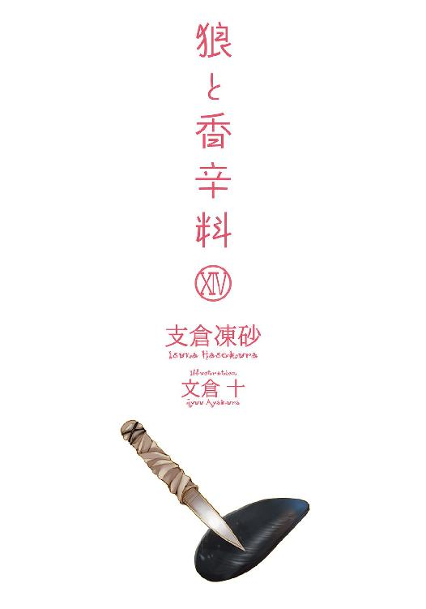
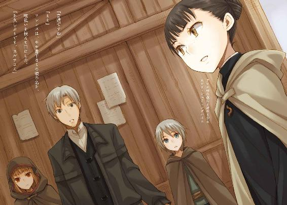
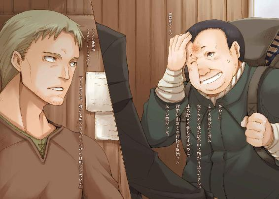
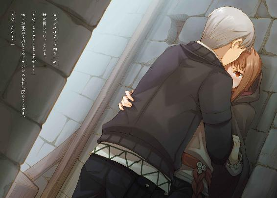
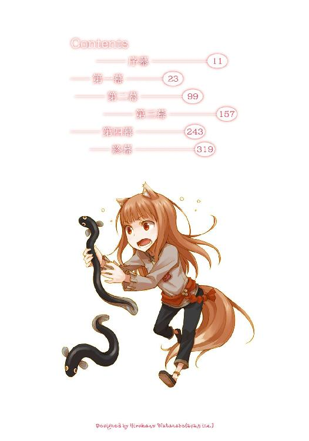
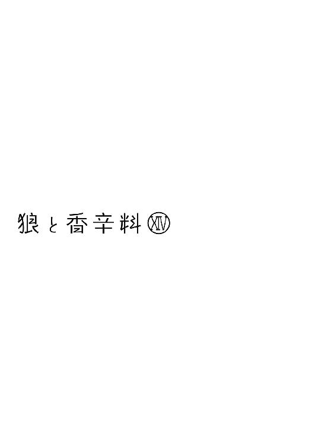
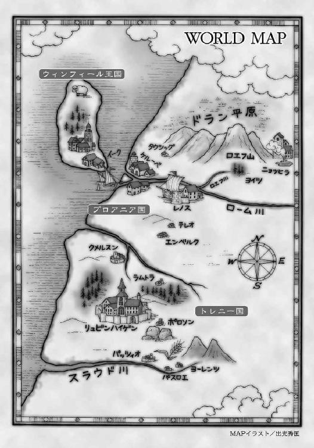
本書（電子版）に掲載されているコンテンツ（ソフトウェア／プログラム／データ／情報を含む）の著作権およびその他の権利は、すべて株式会社アスキー・メディアワークスおよび正当な権利を有する第三者に帰属しています。
法律の定めがある場合または権利者の明示的な承諾がある場合を除き、これらのコンテンツを複製・転載、改変・編集、翻案・翻訳、放送・出版、公衆送信（送信可能化を含む）・再配信、販売・頒布、貸与等に使用することはできません。
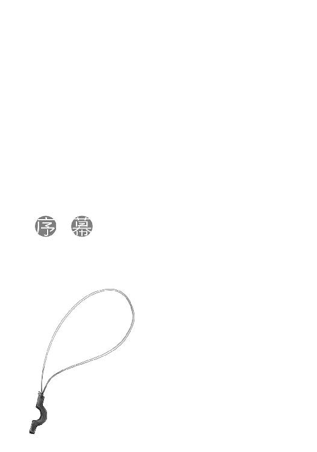
話がある。
そう呼び出されて部屋に入った瞬間、その光景に見惚れてしまっていた。
綺麗だな、と思ったからだ。
ベッドの上で体を起こし、のんびりと外を眺めている。
ただそれだけのこと。
しかし、綺麗だ、というのは決して単純な意味ではない。確かに相手は端正な顔立ちであるし、珍しい褐色の肌には異国情緒に満ちた魅力があった。
それ以上に、その横顔には憑き物が落ちたような美しさがあったのだ。全ての角を取り払っていった水晶の珠のよう、と言ったら近いかもしれない。
人が角を突き合って、傷つけたり傷ついたりすることにいつも欲が絡むのだとしたら、その横顔は全ての悲劇から遠ざけられているような雰囲気だった。
椅子を見つけ、静かに腰を下ろす。
相手はこちらを見ないまま、椅子に座る頃合を計って、こう言った。
「レノスの町に、フィロンという名の雑貨商がいます」
唐突な言葉だが、聞き返すことはしない。
その横顔に質問するのは、無粋な気がした。
「表向きは単なる雑貨商ですが、裏で傭兵たちに対する手配師のようなことをやっています」
そして、ようやくこちらを見た。
「私の名を出せば、きっとあなたたちの役に立つことを教えてくれると思います」
「それを」
と、ゆっくり切り出したのは、自分の語気で羽毛のようなこの雰囲気が乱れないように。
「それを私に教えても大丈夫なのですか？」
傭兵の世界には独特の決まりがある。単純な損得とも言えないし、騎士のような厳格な名誉の鎖に縛られているわけでもない、その世界に身を置く者でなければ感じ取れないなにか。
そこに商人というよそ者が行って、どうにかなるものだろうか。
少なからず、このベッドの上にいる者に迷惑がかかることだろう。
「散々貸しを作ってありますから、それくらいは」
しかし、相手はベッドの上でにこりと笑い、再び窓の外を向く。
駆け出しの頃、もう必要ありませんから、と言って、一晩だけ借りるつもりだった使い古しの毛布をくれた修道女のことを思い出した。
「フィロンは、物資やそれを運ぶ輜重隊を引き受けるような命知らずの商人たちを、傭兵たちに手配しています。北の地で戦が起こるのであれば、誰が赴きどこから金が出ているのか、十分に詳しいと思います」
物資の供給を担う者となれば、それは傭兵たちにとって心臓に値するくらい大事なはずで、部外者にはできる限り隠そうとするだろう。
だとすれば、そのことを教えてくれた相手は、すっぱりと過去と手を切るつもりなのだ。ただ普通にしているだけでなお微笑んでいるように見える横顔は、確かに前を向いていた。
だからかもしれない。
わざとらしく言葉を選んでしまったのは、いたずら心からだった。
「予想外の報酬に、感謝しますよ」
相手はちょっと意表をつかれたような顔をして、こちらを向く。
そして、それから可愛らしい苦笑いを浮かべた。
「これをもって報酬とする、などと言いませんよ。警戒されなくとも、当初の約束はきちんと果たします」
その言葉に、輪をかけてわざとらしく安堵のため息をつくと、くすくすと笑い声が漏れた。
ほんの数日前の様子からは想像もできないようなやり取りだ。
目の前の相手が目的に向かって一心不乱に進んでいたのは、死に場所を探してのことだった。
その場所を見事見つけ、なおもこうして笑っていられるのであれば、救いというものはこれこそがそうだ、と言いたくなる。
「ただ、私の状態がこんなですから」
言いながら、右手を上げる様子は、ひどく弱々しい。
服の肩口からは、腹部にかけて巻かれた包帯の一部が覗いているし、実際のところわかりづらいだけでよく見れば頰がこけている。
「時間がかかる、と？」
相手は微笑み、「いいえ」と言う。
「代わりに描いてもらうよう、お願いしました。今、画材を用意してもらっています。画力は確かなようですから、地図くらいならば口述で十分に描いてもらえるでしょう」
「それは」
「ええ。昔は彼も筆を取って諸国を巡っていたようですよ」
言葉が返せなかったのは、相手を見くびっていた、という自覚があったから。
ここは絵画商の屋敷であり、話題に上っているのはその主人のことだ。彼は自ら筆を取る勇気がなく、代わりに絵を扱っているのだとばかり思っていた。
人には、必ず過去があるものなのだ。
「私の代わりに地図を描いて欲しい、と言ったら、ひどく張り切っていました。もっとも」
と、いたずらっぽく言葉を切って、笑う。
「しばらくここで路銀を稼がせて欲しい、という申し出に喜んだだけなのかもしれませんが」
相手は世俗の権力者たちが欲してやまない銀細工の作り手だ。その作品の価値は、ロレンスにも窺い知れない。
「お急ぎの旅でしょうから、描いたらすぐにお送りします。早馬で送れば、皆さんが荷馬車でレノスにつく頃、お渡しできるでしょう」
ここからレノスまで、馬車だと四日から五日はかかる。
地図の完成を待たなくていいのは、時間の大幅な節約になる。
「ありがとうございます」
感謝の念を伝えると、くすぐったそうに微笑まれた。
そのまま雑談にでも移りたい雰囲気だったが、相手は重傷の身で、今も振る舞いこそ自然だが、ふとしたはずみに無理をしている感じが見て取れる。
ゆっくりと、辞去する旨を告げた。
相手は疲れたように笑ってから、腰に当てていた大きな枕に体を沈めて息を吐いた。
やはり無理をしていたのだ。
元従軍司祭という肩書は伊達ではない。
扉を後ろ手に開け、尊敬の念と共に、静かに閉じた。
そして、廊下を歩き出してから、前を向いたままこう言った。
「だとさ」
隣には、森の動物のように足音を立てず歩く旅の連れがいる。
なにが面白くないのか、ひどい仏頂面だ。
「そうかや」
口調も不機嫌さを隠さない。
あれこれ考えてみるが、しっくりくる理由は思いつかない。
それとも、自分が他の誰かと二人きりになっていたのに嫉妬して？
そんな馬鹿な選択肢まで検討するようになった頃、ふと足を止めた旅の連れは、こちらが振り向くのを待たずにこう言った。
「わっちゃあまだ、あんな顔ができぬ」
驚きというほどでもないが、ちょっとした点を心に穿たれた。
進みすぎた歩を戻し、うつむきがちの頭をフードの上から乱暴に撫でる。
「自分は手がかかる分、勝ち目が薄いって？」
直後のがちん、という音は、危うく手を嚙まれそうになった音だ。
赤みがかった琥珀色の瞳が、ぎらぎらとこちらを睨んでいる。
ただ、大して怯むこともなく、ロレンスは笑いながら相手の手を取った。
「俺は商人で、商人の顧客はいつだって満たされていない。あんなふうに満たされきってはなにも必要としないからな。商売上がったりだ」
その点ホロには、ヨイツに行きたいという明確な欲求がある。欲深い者こそ商人が望む取引相手であれば、これほど相応しい者もなかなかない。
手を引くと渋々といった様子で歩き出したが、「本当に？」と聞いてきた時は、ぴったり真横にくっついていた。
「噓かどうかわかるんだろう？」
呆れたように聞き返すと、フードが不自然に動く。
そのせいでずれたフードの陰から覗いたのは、髪の毛よりも若干色みの濃い毛が生えた、獣の耳だった。
「一応、信用しておきんす」
憎まれ口を叩くように言う。
「左様ですか」
「んむ」
そんなやり取りをして、二人揃って馬鹿馬鹿しいと忍び笑いを漏らす。
ただ、笑えば皺ができるように、どんなことにも一抹の陰がある。
確かに、旅の連れは全ての憑き物が落ちたような、あんな顔をできはしないだろう。そのお陰で、ロレンスはホロと旅を続ける理由を得ることができる。
けれども、それは今だけのことなのだろうか？ それとも未来永劫ずっとのことなのだろうか？
ホロが満たされきってはロレンスの出る幕などなくなってしまうが、かといって永遠にホロが満たされないことを喜ぶわけでは決してない。できることなら、連れには笑っていてもらいたいからだ。
わがままな願いだとはわかっているし、自分の俗っぽさにも呆れてしまう。
加えて、まざまざと見せつけられる自分の力の限界に、辟易だってする。
もっとも、だからといってへこたれていては商人ではない。それならそれで難問の解決法というものはあるのだから。
階段を下りて廊下を歩き、部屋の扉に手をかけてから、こう尋ねていた。
「旅の食事に色を添えるとしたら、なにがいい？」
その時に垣間見せた、相手の笑顔がたまらなく好きだ。少し得意げに見えるのは、ロレンスがこう申し出ることを予測していたのかもしれない。
遠慮会釈なく小麦のパンだの透明なぶどう酒だのと要求してくる相手に対し、怒ることなどできはしない。連れは過去を断ち切れていないし、断ち切るつもりもないだろう。
そして、つい先ほど約束した地図というのは、この連れの過去へと続く地図なのだ。それが間もなく手に入るわけで、ほとんど確実視したって構わない。だから連れは不安と期待で、尻尾が気の毒なくらいに膨らんでいた。
自分の言葉では痛々しげに膨らみきった尻尾をどうこうできはしない。
代わりに、腹が膨らめば尻尾は多少しぼむかもしれない。
そう願い、あれこれ要求を突きつけてくる連れをいなしながら、旅立ちの準備を進めたのだった。

粗皮と見まがうばかりの硬い毛布の代わりに、たっぷりと毛羽立てられた毛布が積まれ、膝掛け、外套、襟巻き、帽子、手袋と続く。それらを積み込み終わったら、次は食い物の番になる。小麦パンを筆頭に、塩漬けの肉や魚、もろもろの野菜に薬代わりの香草類もあるし、もちろん酒は飛びっきりのぶどう酒だ。
荷馬車の荷台にせっせと運び込むユーグに対し、もはやロレンスは感謝するのを通り越して、苦笑いの域だった。
希代の銀細工師にして世界各地の風景を描くフランと共に巻き込まれた騒動から、かれこれ五日ほど経つ。騒動の最中にフランが大怪我を負い、命に別状こそなかったものの傷による高熱が引いたのはつい先日のことだ。
約束の地図はまだ描いてもらっていなかったが、目を覚まして意識がしっかりするや、すぐにロレンスを部屋に呼び寄せてそのことについて話してくれた。これ以上急かすのは、その信頼を裏切ることになる。
ただ、かといって悠長にはしていられないし、フランの提案もあってロレンスたちは地図の完成を待たずに先を急ぐことにした。
ロレンスたちはヨイツを目指すため、いったんレノスへと戻ることになる。長年商いを共にしている荷馬車を預けているし、なにより本格的に北の地に赴くには、最も便利な玄関口となる。
来る時は川を下る船に乗ればよかったが、帰りはそうもいかないため、ユーグから荷馬車を借り受けることとなった。借り賃の代わりにレノスへとなにかを運んで旅費を浮かそうかと考えていたのだが、そんなけちは自分だけだったらしい。
商人は大抵義理堅いし、中には損得勘定抜きでそういう人たちもいる。
ユーグはその点後者の典型だったようで、ロレンスの固辞にもかかわらず、次から次へと高価な旅の物資を積み込んでくれた。荷馬車の借り賃を払いますなどと、冗談でだって言える雰囲気ではない。ホロは大喜びだったが、ロレンスとしてはありがた迷惑に近いものがある。
なぜなら、借りたものは返さなければならないからだ。
借りている最中はいいが、あとのことを考えると、はっきり言って憂鬱だった。
「ふう......とりあえずはこんなものでしょうか」
最後に、まだ練っていない小麦粉の詰まった袋を載せて、ユーグはそう言った。
このまま右から左に売り飛ばせば一財産になっても不思議ではないが、ユーグからすれば大した金額でもないのだろう。それに、荷台でご満悦な顔のホロを見てホロ以上に嬉しそうなのだから止めようがない。羊の化身たるユーグがせっせとホロに貢ぐ姿はなんとなく滑稽だったが、それはそれで他人事ではない。
ホロは早速干し肉を咥え、丸めた毛布に寄りかかっている。
あとはよきに計らい、目的地までよろしく、と言わんばかり。
ロレンスが重ねて礼を言うと、ユーグはとんでもない、と首を振る。
ただ、ロレンスの耳元に口を近づけて、「私が得た利益を貨幣にしましたら、こんなものではすみませんので」と言うのは忘れない。
山ほどの贈り物を貰ったロレンスの気分を軽くするのに、これ以上効果的な言葉はない。
そして、それが少なくとも噓ではないとわかっている以上、ロレンスがすべきことは、気持ちよく贈り物を受け取ることだった。
「ありがとうございます」
と、もう一度ユーグの手を取って礼を言った。
「フラン様から申しつけられています地図ですが、完成次第早馬でお送りします」
できた地図は獣と魚の尻尾亭に送ってくれるという。ケルーベにも愛好者が多い有名な酒場だったようだ。
「ああ、それと」
ユーグは言って、ちらりと荷台のホロを見る。
ホロは太平楽に干し肉を咥えたまま天気のいい空を眺めているが、聞いていないわけがない。ロレンスはちょっとした思惑があって、ユーグにこんな寸劇を頼んでおいた。
「例の物も、ご一緒に」
そこはさすが長年絵画商としてやってきたユーグだ。わざとらしさもやりようで真実味が増すように、なんとも妙な雰囲気でそんな耳打ちをしてくれた。
荷馬車に積んだ荷に覆いをかけたり、運び込む途中で落ちた野菜の葉や木箱の木屑などを拾いながらロレンスたちのやり取りを聞いていたコルにもまして、ホロは不可解に思っているだろう。賢狼としての誇りゆえ、敢えて問うようなことはしないはず。つまらないことはあれこれ詮索するくせに、大事なことは聞いてこない。
それが面倒なことを巻き起こす原因になることもあれば、意外な慎み深さを演出することもあるし、逆にちょっとしたことを隠したい時には都合がいいこともある。
ユーグはそんなことに、二つ返事で乗ってくれた。
「では」
コルを荷台に乗せ、自身も御者台に座ってから、ロレンスは短くそう言った。
直後には荷馬車を進めていて、慣れ親しんだ馬蹄と車輪の振動に揺られていた。
長ったらしい感謝の言葉や別れの挨拶をしないのは、行商人の習慣だ。時は金なりという格言があるくらいだし、辛い別れは可能な限り短いほうがいい。突き刺さった矢であっても、引き抜く時は一瞬であって欲しいと願うのだから。
ユーグの姿はあっという間に人ごみに消えたろうし、窓の陰から少しだけ見えていたフランの手もすぐに見えなくなったことだろう。名残惜しそうに後ろを振り向いていたコルを、やや乱暴に座らせる音がした。
市壁をくぐり、外に出ればやがてこの町そのものが景色の中に埋没する。
そして、目の前には道がある。
ぴしりと音を立てて、馬の尻を叩いたのだった。
時折吹く風は、川の水できんきんに冷やされている。
空はどんよりと曇り、空の色を映し込んだ川は凍っているようにも見えて、その点からして寒々しい。
加えて空気は極度に乾燥していて、顔から水分という水分が抜け落ちていると実感できる。
昔はこの季節になると悪態をつきながら顔に薬草入りの脂を塗り込んでいた師匠を不思議に思っていたものだが、最近は少し不摂生するとすぐに顔から粉が吹くようになった。
十八の頃に行商人として独り立ちして七年目ともなれば、そろそろ体に疲れも溜まってくる頃なのかもしれない。
なので、それはそれでよい。
問題は、自分よりもよほど不摂生をしている旅の連れが、まったくもってそんな悩みとは関係がないように見えることだった。
「たわけ、そんなわけなかろう」
とは、隣に座る旅の連れホロの言葉だ。
風に揺れて髪の毛ががさがさの目元に触れ、不愉快なかゆみにいらいらしている中、こちらがその横顔を見ていたらそんな話の流れになった。
「ぬしら人は顔に出る。わっちら狼は毛並みに出る。ましてや寒い寒いと、毎夜この尾をコル坊と取り合われてはなおのことでありんす」
言って、不満げにため息をつくホロの手元には、話している間中ずっと毛並みを整えている獣の尻尾があった。
先端だけが雪のように白く、残りは焦げ茶色の長い毛が生えた立派な狼の尻尾だ。
それは決して腰巻などではなく、正真正銘ホロのもの。
齢十余の少女に見えるホロの真の姿は、ロレンスなど一飲みにできるような巨大な狼であり、麦に宿りその豊作を司ることのできるような存在だった。
なので、被っているフードをめくればその下からは凛々しく尖った三角の獣の耳も現れる。
当初こそ少なからぬ恐れを隠しきれなかったものの、今ではそんなこともない。
油断ならぬ相手と警戒しこそすれ、決して他のもので代えられない、大事な旅の連れであった。
「そうか？ 元が立派だから俺程度の目利きでは悪いところなどわからなくてな」
棒読みのあからさまな世辞に、ホロはこちらの足を踏んでくる。それでも誇らしげに尻尾を膨らませているので、ついついそんな子供じみたことをしてしまう。
そして、しばらくしてから互いにあほらしいとため息をつくのである。
同じことを飽きずに繰り返してしまうのは、暇な荷馬車の上では他にすることもないからだ。
「なにか楽しいことはないのかや」
あるはずもない、とわかっているからこそ、普段のホロは尻尾の手入れをしているか、荷台で丸まって寝ているかのどちらかなのだ。
ロレンスはしばし考えてから、こう言った。
「そこの川、たくさん船が下ってくるだろ」
川を指差しながら言ってやると、つまらなそうに自分の膝の上に頰杖をついていたホロが、興味なさげに川とこちらを見比べる。
「たくさん船が下ったら、いつか上流に船がなくなってしまうし、下流では船があふれ返ってしまうだろ？ でもそんなことはない。どうしてだと思う？」
小さく、「え」と呟いたのが聞こえた。
ホロは自らを賢狼と称し、知恵の巡りには自信を持っている。
ロレンスの質問に、もう一度川を見て、ロレンスを見る。
「どうしてだと思う？」
寒さに目がしょぼくれて、片目だけをホロに向けて再度聞いてみる。するとホロはやや苦しげに顎を引いて、「む......う」と唸る。
暇をもてあました師匠からよくやられた意地悪だ。
もっとも、その意地悪が成功するには、自分は頭の巡りがよい、という自信を相手が持っていることが前提だ。その上で、至極当たり前のことを尋ねるのである。
川上から船が下ればいつしか上流には船がなくなってしまうし、下流では船があふれ返ってしまう。
だとすれば、答えは一つしかない。
「わ、わかりんす」
「ほう」
ロレンスは口を丸くして、前を向く。
それから、答えをどうぞとばかりに、道草を食おうとした馬の尻を手綱で叩く。
「船で川を下るのと、木材を運ぶのを一緒くたにしておるんじゃな」
「というと？」
「んむ。つまり、船が海に着いたら、それをばらばらにして木材にするか、船としてそのまま海に放す。川上からは木材と船の供給、加えて荷物の運搬を兼ねておるので、一石三鳥でありんす」
実に合理的かもしれない。
話し始めこそ不安そうだったホロの顔も、喋り終える頃にはどうだとばかりに得意げだ。
ロレンスは笑い出すのを咳払いで誤魔化して、「大はずれ」と短く言った。
「答えは、下った船はまた上流に引き上げる、だ。行ったら帰ってくる。当たり前のことだろう？」
そう言った時のホロの顔は、案の定意地悪をされた子犬のようだった。
「世の中難しく考えるばかりが正解ではない、ということだ」
ロレンスは言いながら、裏切られたような顔をしているホロの眉間を指で突ついてやった。
手にはユーグから借りた分厚い鹿の革の手袋をしているので、怖いものなしだ。
ホロは邪険に手を払って、鋭い牙を剝く。
ロレンスが笑うと、賢狼の威厳など微塵もなく、ぷいとそっぽを向いた。
「もちろん、季節によってはお前の言ったようなことをする場合もある。でも、その場合は筏にすることがほとんどだ。それに、この川沿いだって、まったく葦だのなんだのが生えていないだろう？ 船の交通量が多いから、引き上げる量も多い。船に縄をくくりつけて馬で引き上げるのに便利なように、こうなってるんだよ」
船の行き来が多いせいで、下流の船を引き上げる時は上流からの船を制限して多くをまとめて引き上げる。前を見ても後ろを見てもその一団の影が見えないので、多分今回の旅では遭遇することはないだろう。
もしもかち合えたとしたら、ある種の祭りのように大騒ぎをしながら船を引き上げる一団にまじって楽しめたかもしれない。
ロレンスがそんなことを言うと、ホロは大きくため息をついて、「残念じゃ、ああ残念じゃ」と不貞腐れる。いいようにロレンスに足元をすくわれた悔しさが半分だとして、残りの半分は、本当に残念なのだろう。この川を行き来する者たちの豪快さは、下る時の騒ぎで経験ずみだからだ。
「せっかくよい酒が山ほどあるというのに......」
そんな呟きにロレンスはためらいなく笑っていたし、ホロもいたずらっぽく笑っていた。
しかし、静かな笑いは川の上を通り過ぎる風に簡単にかき消されてしまっていた。
あの騒ぎは数ヶ月前の出来事ですらないのに、もうはるか昔のことのように思えてしまったからだ。
時が経つのは速い。
そして、巻き戻らない。
ホロは口元を笑みの形のままにして、静かに川のほうを向いていた。
永遠というものがないのなら、辛気臭い顔をしている暇はない。
それがわかっているのに、どうしようもない。
ロレンスはホロの肩に手を回そうとする。
しかし、それを止めたのは他ならぬホロ自身の手だった。
「ま、ここでぬしの懐に潜り込むのも悪くないんじゃが」
ロレンスの手袋の人差し指の部分をつまむように持ち、そのままロレンスの膝の上に置く。
手癖の悪い小僧の躾ではないが、うっすらとした笑みをたたえているホロの顔は、それなりに真面目だった。
「あれが気になっての」
と、ホロはロレンスの肩に顔を近づけてから、後ろの荷台を軽く顎で示した。
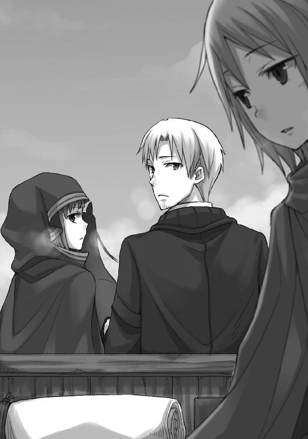
いつもなら荷台で毛繕いをするところを、わざわざ御者台でやっていたのはロレンスの側にいたいから、と思うほどロレンスもお人好しではない。
ここしばらくコルの様子がおかしいのは、当然ロレンスも気がついていた。
元来おとなしい性格だということはわかっているが、それはどちらかといえば沈思黙考するというよりも、誰かの側でにこにことしている類のものだ。
それが、ケルーベ滞在中から、物静かになにかを考え込んでいるふうだった。
「お前にも相談なしか？」
「んむ。あのたわけと話をしてから、というのはわかっておるんじゃが」
心配そう、というよりかは不満そうだ。
あのたわけとはフランのことだろうし、なんらか影響を与えるとすればそれくらいしかない。
ただ、ケルーベで部屋を貸してもらったユーグの店舗兼住居は、ホロの凛々しく尖った耳から内緒話が逃れられるほど壁が厚いわけではない。
耳を澄ませば話を聞けただろうに、とロレンスが言いかけたのと、腿をつねられるのはほとんど同時だった。
「わっちゃあ誇り高い賢狼ホロじゃ。そこいら辺の下世話な小娘と一緒にするでないっ」
「わ、わかったわかった、悪かった」
ホロはロレンスを藪睨みにして、ようやく腿から手を離す。
それでも、前を向く尖った唇は、こんな弱気な言葉を吐かずにはいられなかったらしい。
「わっちゃあ頼りにされておらぬのかや」
冗談の類、かどうかを見分けられるくらいにはなっている。
ホロの琥珀色の瞳は、なによりもホロの心を映す鏡だ。いつもは自信満々に勝気な赤みをたたえている琥珀色のそれが、落とせば簡単に割れてしまいそうなはちみつ菓子のように見えた。
誰かに必要とされなくなる、というのは、ホロが何百年も苦しめられてきた泥の沼だ。
ロレンスがフランに呼ばれ、地図についての話を交わしたあとのやり取りも、これが影響していたのだろう。
ロレンスは荷台のほうを振り向いてから、軽い調子でこう言った。
「出会いは人を変える。それとも、ずっと幼い男の子でいて欲しいと？」
親鳥の羽の下で眠っていた雛も、いつかは自分の羽で飛ばなければならない。
ましてや、コルは一度は大いなる決心をして自分の村を飛び出しているのだ。いつまでもホロにあれこれ構われ可愛がられ続けるには、土と埃の匂いを知りすぎている。それに、ホロがコルの成長を疎ましく思うほど独善的でないことはわかっている。
ホロはずっと前方を見つめたまま、長く、細いため息のようにゆっくりと息を吐いていた。
そして、その白い帯が切れた頃、不機嫌そうに小首をかしげ、こちらを胡乱に睨んできた。
「じゃから黙っておるんじゃろうが」
ロレンスは怯まない。
代わりに飄々と受け流して、わざとらしく慇懃に言う。
「そうでしょうとも」
ホロは拳を作ってロレンスの腿を叩く。
ただ、叩いたその手は上げることなく、ロレンスの腿の上に置いたまま。
「じゃが、わっちゃあ神ではありんせん」
そんな言葉を不貞腐れる少女のような上目遣いで言うのだから、神聖にして清廉潔白なる神と称するにはあまりにも俗っぽい。
もっとも、商人は澄んだ水よりも若干汚れた水のほうを好む。
ロレンスはホロの手を取って、「そうでしょうとも」と再度言った。
今度はホロは怒らず、ロレンスの肩に頭を預けてきたのだった。
ロレンスもそうだが、ホロは人の悩みを積極的に聞いて回るような性格ではない。そのくせ、気を揉むことだけは人一倍なので、なんとも微妙な空気だった。
口も回るし意地の悪いところがあるので、ともすれば気が強くわがままに見えるホロだが、実際はそうではない。相談に乗らなければ気がすまないお節介な性格でもないし、悩む相手に自分の考えを押しつけて引きずり回す感じでもない。
誰かの力になることは厭わないし、むしろそれを喜ぶところはあっても、頼られなければ決して口を出さない控え目な性格だ。
三人旅になって、自分以外の誰かを気にかけているホロのことをつぶさに見て初めて、そんなことがよくわかった。
もっとも、コルに対してそうであるのなら、自分の時もそうだったのではないか、と思うと、心当たりが多すぎる。鈍感だなんだと散々小突き回されたが、実際のところ自分が把握している以上に自分は鈍感だった可能性が高い。
その罪滅ぼしというわけではないが、食事の際はちょっと多めにホロに取り分けてやった。
ホロはもちろんわざと多く取り分けられていることに気がついていて、余計なことをするなとばかりに仏頂面だ。
そんなふうにやや心苦しく、いつもより沈黙が多めの旅に賑やかさが戻ったのは、川沿いに上っていく途中で漁をする一団に出会ってからだった。
「それ、引けーい！」
どんどん、と太鼓の音に合わせ、何人もの男たちが川に張った網を引いていた。
川の上には網に向かって水面を棒で叩く者たちがいるし、川岸周辺ではロレンスたちのような旅装の者たちが腰を下ろして漁を見物していた。
川は土地の領主のもので、勝手に漁をすることは許されない。今も漁師にまじって短めの槍を携えた兵が何人かいて、しかめっ面で羊皮紙かなにかを片手に、引き上げられる網に絡みついている魚の数を数えている。魚は待機する荷馬車に積まれた樽や桶の中に次々放り込まれていく。樽や桶は石灰で印をつけられて、一杯になり次第荷馬車が走り出していた。
通行量の多い川ゆえに、町から離れたこんな場所で漁をしているのだろう。目を凝らせば上流には関所も見えるので、そこで船を足止めしたうえで漁を行っているようだった。
網は引き上げられるにつれて重さを増しているらしく、太鼓を叩く音にも、それを引く男たちの声にもどんどん力がこもってくる。ふと荷台を見れば、いつの間にかホロとコルが揃って立ち上がって、拳を握り締めたまま漁の推移を見守っていた。
最後に一際大きい声が上がったかと思うと、巨大なナマズがかかっていたかのようにぱんぱんに膨らんだ網が、ずるりと引き上げられた。こんな季節にもかかわらず大漁だったようだ。川を行き来する船の上からこぼれ落ちる食べ物のせいで、魚は餌には困らないのかもしれない。
大歓声が上がって、網を引いていた男たちが一斉に魚に群がっていく。
我先にと立派な魚を獲ろうとする漁師に加え、役人の怒号や野次馬の歓声がまじって大騒ぎだった。魚の跳ねる音や、樽や桶に魚が放り込まれる音、次々と魚を満載にした荷馬車が走り出す音は心地よい音楽のようだ。
寒く、景色は代わり映えがなく、生きとし生けるものはとっくに死滅してしまったのではないか、とすら思わせる旅程の中で、久しぶりに生きていることを実感できる場面だった。
だからだろう。野次馬たちは皆楽しそうな顔というよりも、ほっとしているような顔をしていた。
最後の荷馬車が走り出すと自然と拍手がわき、ホロとコルも訳がわからないなりに楽しそうに拍手をして笑っていた。荷台から干し肉のかけらをつまんで口に咥えていたロレンスは、そんな二人にこう言った。
「ほら、お前たち準備しろ」
「む？ 準備？」
ホロとコルの二人がこちらを振り向いた直後だった。
「以上で漁の終了を宣言する。余った魚は、オズボーン卿のお慈悲により、人々に振る舞われるであろう！」
役人の一人が大声で言って、槍を頭上に高々と掲げていた。
するとそれまでは川岸で腰を下ろしのんびり漁を眺めていた者たちが、待ってましたとばかりに立ち上がって走り出した。
川岸には打ち上げられ、まだ口をぱくぱくさせている魚がたくさんいる。
おこぼれに与らせておけば危険を冒して密漁をすることもないだろう、という領主たちの伝統的な振る舞いだ。魚相手であれば巡礼者の一団であっても喜色満面飛びつける。
男も女も関係なくローブの裾をたくし上げ、外套を脱ぎ捨て、腕まくりをして魚を捕まえにかかっていた。ホロとコルは顔を見合わせて、たちまち靴を脱ぎ捨て裸足になると、荷台から飛び降りて一目散に駆けていく。ホロなど尻尾が覗いているのにお構いなしだ。
ロレンスは楽しそうな二人の様子をやれやれと眺めながら、干し肉の筋を指で取って投げ捨てて、焚き火をしている一団の下に火を貰いに行った。
その日の早めの夕食は、獲れたての魚に塩を塗りたくり、火で炙ったものだった。
どっちが豪快にかぶりつけるかを競うかのように、ホロとコルは魚を平らげていた。
行儀は悪いが、ひとまずのところ、楽しい夕食だった。
一度行商で訪れれば、その町や村に再び赴くのは一年後がほとんどだ。
そんな生活をずっと続けてきたし、これからもずっと続くのだと思っていた。
なので、ケルーベに引き続き、レノスもまた大して間をあけずに訪れるのは、なんとも不思議な気分だった。
「しかし、今回は怒らなかったな」
ロレンスはユーグからの紹介状を懐に収めながら、そう言った。
荷馬車には豪華な物資をたっぷり積み込んでいたので、まともに市壁を通過しようと思えば結構な金額の税を取られるところだったが、ユーグはそのあたりにもぬかりない。懇意にしている領主の名前を出して、額を取り計らってくれるようにとの手紙をしたためてくれていた。
絵画商というのは扱う品物が高価なせいか、結構な影響力を持っているらしい。手紙が本物とわかるなり、役人たちの扱いは急に丁寧になった。
ただし、それで放免かと思いきや、きちんと持ち物の検査はされるので敵もさるもの。
そういうわけで、ホロの尻尾を見て「安物の毛皮一枚」と数える役人の失言を、再び頂戴することになったのだ。
「いちいち怒っていては身が持たぬ。なにより、疲れで毛がぼさぼさなのは否定しようのないことじゃからな」
そして、大きく欠伸をして、ため息をつく。怒ってばかりいては賢狼の沽券に関わるということもあろうが、ホロは実際に旅の疲れからか、御者台ではややぐったりとしていた。元気なのはレノスの町に入るのが初めてのコルだけだった。
もっとも、どちらかというとホロの場合も体の疲れより気疲れのほうだったのかもしれない。
途中で参加した魚の摑み取りのせいで変に興奮してしまったらしく、その後の旅程では途中で何度か荷馬車を降りて歩いていた。元の姿に戻って軽く走ってきたらどうだ？ とは完全な冗談でもなかったのだが、ホロが若干真剣に検討しているのを見て慌てて引き止めておいた。
幾分かはコルを笑わせるためにわざとだったのだろうが、残りは本気だっただろう。
指摘すると怒るので気づかないふりをしているが、雲ひとつない夜などは、ホロは遠吠えをしたがる素振りを見せることがある。
たまには力の限りを振り絞り、足腰立たなくなるまで四つ足で走ってみたい、と思ったとしても、なんら不思議はなかった。
「宿に着いたら、主人に熱い湯と手ぬぐいを用意させるよ。埃を落として、さっぱりすればいい」
「それと、上等の油」
尻尾の手入れに油がよい、と知恵をつけたのはだいぶ前のことだが、ついにユーグの店でその味をしめてしまった。
駄目だ、と言って聞くようなものはそもそも要求してこない。
せいぜいが、「買う暇ができたらな」と嫌そうに言っておくというささやかな抵抗だけ。
もっとも、それだけで幾分機嫌が直っているのだから、安いものなのかもしれなかったが。
「それで、ここにはどのくらいおるのかや」
背中を丸めて、自分の膝の上に頰杖をつきながら、ホロは言う。
そっぽを向いたままの興味なさそうな言い草だが、ホロが今一番気になることといったら、これだろう。
ロレンスは数瞬考えて、楽観的に答えておくことにした。
「長くても三日から四日くらいだろう。話を集めるだけだ。防寒具はあらかた揃っているし、食料も多少買い足すだけでいい」
「ふむ」
それだけ聞ければ満足だ、とばかりにため息をつくが、フードの下で耳はまだ若干忙しなく動いている。
小さい咳払いを挟んで、ロレンスは言葉を続けた。
「ただ、経路がどうなるかはわからない。人の流れがあるなら多少雪の積もっている場所でもいいし、そうでないのなら道のよい場所を選ぶ必要がある。前者はデバウ商会に続く道。後者はニョッヒラに続く道だな」
ニョッヒラなどと腰が砕けそうな名前だが、ホロがその記憶の中に今でも留めている数少ない町の名だ。ホロは頑なにそっぽを向いているが、懐かしさを隠しおおせてはいない。突つけば今にも泣き出してしまいそうな雰囲気に、ロレンスは思わず笑ってしまっていた。
「コルはニョッヒラという町を？」
ロレンスがコルに話を振ったのは、あまりホロを笑うとあとが怖いから。
突然話を振られたほうのコルは戸惑い気味だったが、うなずくと、「名前だけは」と答えてきた。
「地の底から滝が噴き出すように湯があふれる古い町だ。俺は一度通りがかったことがあるだけだが、なんとも奇妙な町だったよ」
「奇妙、ですか？」
「ああ。異郷の土地のど真ん中にあるというのに、世界で一番高位の聖職者が集まる場所、といわれている。しかも、何百年にも亘って一度も争い事が起きていない」
古くからの神を崇めるゆえに、理不尽な教会の襲撃を受けた村の近くの出のコルからすれば、信じられないような話だったらしい。
やはり、こんなふうに驚いてくれるのだから、いい話し相手だ。
「だからな、争い事の絶えない世に胸を痛める者たちは、永遠の平和を築く方法がそこにあるのではないかと押しかけるのだそうだ」
喋りながら、そっぽを向いているホロの頭の上に軽く肘を置く。
「でも、世の中に争いはなくなりませんよね......」
「それはそうだ。なにせ、湯に浸かるとあらゆる病と傷が癒えてしまうからな。皆、痛んだ胸のことなど忘れてしまう。それで、結局世の中から争い事はなくならないんだ」
肘の下でゆっくり首を回したホロは、苦笑いするコルを軽く一瞥してから、つまらなそうにこう言った。
「昔その湯に浸かっておったわっちじゃがな、そろそろ湯冷めしてほぐれていた闘争心を思い出してしまいそうなんじゃが？」
やりすぎた、と慌てることもない。
わしわしとホロの頭を撫でてから、ロレンスは手綱を引いて犬を避ける。
「フランさんの教えてくれた雑貨商は、元傭兵だそうだ。彼も温泉に浸かって心が広くなってくれていると助かるんだが」
「わっちゃあ宿が広いかどうかのほうが気になりんす」
町での滞在が楽しくなるかどうかは宿の良否にかかっている。
ロレンスは、荷台で膝立ちになっているコルを危ないので座らせてから、独り言のように呟いた。
「アロルドさんの宿はきっと営業してないだろうからな。いい宿かどうかは賭けになるな......」
「わっちが質に入れられた先は立派なところじゃったが」
目を細め、嫌味ったらしく言ってくる。
そういうことをするということは大して怒ってはいないのだろうが、かといってそれを指摘できる立場でもない。
ホロを金に換えるなど、もう二度とやりたくない。
「まあ、町の人間に聞いてみるか」
「知り合いなどおるのかや」
よもや本当にあの腹の立つ連中のところに行くのではあるまいな、とホロの嫌そうな目が牽制してくる。ホロを質に入れて金を借りたデリンク商会の面々は、どうひいき目に見ても愉快な相手ではなかった。蛭のように蠢き、蜘蛛のように網を張り、それでいて貴族然として振る舞う姿は、世の嫌な部分を全て凝縮したようだった。
とはいっても、彼らのお陰で回る世の仕組みもあるし、少なくともロレンスたちは儲け話のために彼らに助力を請うた。できれば二度と関わりたくない相手だが、それはそれで彼らのような大きな商いをしないままに一生が終わるのか、と思ってしまいまた寂しくもなる。
ロレンスはそんな物思いに一人笑ってから、小さく鼻を搔いた。
「知り合いくらい他にもいるさ。例の地図を受け取るために連絡をしておかないといけないし、このままお勧めの宿も聞きに行こう」
つい数週間前には毛皮職人やその手の商いに従事する商人たちの蜂起があったものの、町の賑やかさは平時とまったく変わらない。嵐とは常にコップの中だけで起きるのだろう。
ロレンスは手綱を巧みに捌いてごった返す通りを行く。
ホロがふと口を開いたのは、籠にぎっしりと鶏を詰め込んだ肉屋と思しき一行が道を横切ったときだった。
「そんな知り合いおったのかや」
「あれだよ。獣と魚の尻尾亭という名の店だ」
「む？ ふむ、あの奇妙な鼠の料理を出す店かや」
ホロもあそこの料理は気にいっていたはずだ。
ついでに夕食も仕入れてしまえば一石三鳥になる。
けたたましい鳴き声の鶏を連れた一行が通り終わり、ロレンスは手綱を握って馬の尻を叩こうとする。
その瞬間、するりとホロの言葉が滑り込んだ。
「ぬしはいい度胸じゃな」
「え？」
獣と魚の尻尾料理が名物の店にホロを連れていくことで、なにか度胸と関連することが？
行商人は、物事を目で見た映像で考える。ぱ、ぱ、と記憶を見返して、一人の女性で思考が止まる。獣と魚の尻尾亭には、ずいぶんやり手の看板娘がいた。
「あ」
と、ロレンスが喉の奥で呻くか呻かないかの頃だった。
「ま、わっちゃあニョッヒラの湯にたびたび浸かり、争いの心を忘れておるからの」
そう言うホロの目つきは、およそ戦いを忘れたものとは程遠い。余裕ぶった振る舞いのつけを払わせてやる、とわくわくしている顔だ。コルがすぐ後ろで「？」と首を捻っているが、今更行くのをやめようとは言い出せもしない。
よそ見をしていたせいで職人らしき男に怒鳴られて、ロレンスは慌てて前を向きなおす。
不敵に笑うホロの隣で、ロレンスはげんなりとつい空を見てしまう。
この町で空を見上げれば必ず目に入る教会の尖塔に向かって、何事もありませんように、とロレンスは祈ったのだった。
酒場が賑わい出すのは基本的に日が暮れてから。
まともな客筋の店ならばなおのことで、ロレンスたちが獣と魚の尻尾亭を訪れるとやはり店の中はがらんとしていた。
ただし、静かなわけではない。どうやら下ごしらえの真っ最中だったようだ。店の真ん中にいくつも用意された桶には、大量の貝殻が山積みになっていた。
「こんにちは」
開け放しになっていた扉をくぐってロレンスが挨拶をすると、外の明るさに目が負けたのか、娘が眩しそうにこちらを見た。
「あれ？ ああ、この間の商人さん」
「ええ、その節はどうも」
コルは積荷の番をして、隣にいるのはホロだけだ。
余計なことをしてくれるなよ、とロレンスはホロにも看板娘にも心の内で祈っていたのだが、少なくともどちらも表立った行動は取らなかった。
ただし、ロレンスも商人である。互いに互いを値踏みしているのは、よくわかった。
これが自分を巡っての純粋なる取り合い、という形ならばロレンスも鼻が高いのだが、そうでないことくらいわかっている。
狩人が己の弓の腕を競い合っているようなもの。
その競い合いのために標的にされる側としては、たまったものではない。
「今回も、また、なにか儲け話を？」
言葉の区切りごとに、右の桶から左の桶に貝が移動し、娘のまん前に置かれた樽に貝の剝き身がぽちょんぽちょんと落ちていく。娘の腕もさることながら、使っている道具がよい。
柄の部分に布が巻かれただけの簡素なナイフは、刃の部分が氷のような色になるまで研ぎ上げられている。そんなナイフを片手に持ち、実用本位の凄みとでもいうのか、あられもなく大股を開き腕まくりをして貝を捌く娘の姿は、ひどくどっしりしているように見えた。
これはこれで、とても魅力的だ。
「いえいえ違います。もう、儲け話は懲りました」
ロレンスが苦笑いで言うと、娘は屈託なく笑う。
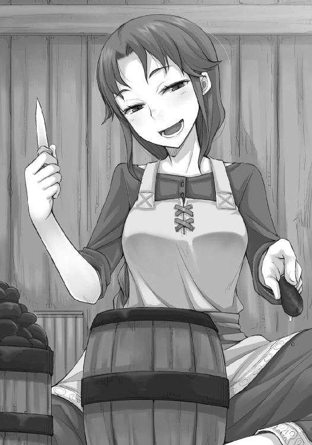
「商人さんから同じ言葉を何回聞いたかしら」
町に異変が起きた時には真っ先に商人が情報を集めに来るような場所であるから、娘はその後の懲りない商人たちの様子もよく見ているのだろう。
「確かに、そうかもしれません」
「ふふ。商人さんは浮気性ですからね。言い訳もそっくり。つい魔が差した。もう懲りた。俺はどうかしていたんだ」
娘は目こそこちらを見ているものの、関心は隣のホロにあるのが丸分かりだった。
ロレンスはひやりとしたが、隣のホロは楽しそうに笑っている。
「確かにそうじゃな？」
そう言ってこちらを見上げるホロの笑顔は、決して作り物ではない。
さすが賢狼と自称するだけあって、売られた喧嘩を即座に買うほど短気ではないらしい。
ロレンスがほっとした、その直後だった。
「そして泣きべそかいて、やはりいつもの地道な儲けがいい、と元の鞘に舞い戻るところまで一緒じゃからな。まったく、たわけた連中でありんす」
そして、ひょいと手を伸ばすと、ロレンスの服の襟を軽く直す。
ホロも酒場の娘もにこにこと笑っている。
ロレンスは、固唾を飲んでから、その板挟みから逃げ出すように言った。
「そ、そう、それでですね、今回寄らせてもらったのは、お聞きしたいことがあったからなんです」
「......聞きたいこと？」
返事に若干の間があったのは、間違いなくホロと視線を合わせていたからだ。
コルを置いてきてよかった、とロレンスは思った。傍から見られたら、自分ほど間抜けな男もいないだろう。
「毛皮の話は......あ」
喋りながらやっていたせいか、はたまたわざとなのか、貝の身が崩れてしまった。捨てるのかと思いきや、娘はひょいとつまむとあろうことか生のままつるりと飲み込んでしまう。
しかも、そのあと後ろから小さな樽を取り出してうまそうに飲むのだ。
飲み方からして、かなりきつそうな酒だった。
「ふう。そう、それでその話ならもうどうにもなりませんよ？」
今この瞬間にそんな振る舞いをするのはわざとにしても、軽く飲みながら仕事をしているのはいつものことなのだろう。そんな気取らないところが、この看板娘の魅力なのかもしれない。
それに、少なくともホロは貝と酒の組み合わせに悔しそうにしていた。
この二人、意外に気が合うのではないか。ロレンスはそう思った。
「いえ、また少しこの町に滞在したいので、いい宿を紹介していただけないかと」
「あら」
娘はロレンスの質問にそう口にすると、ぷっと子供のように頰を膨らませた。
「私にそんなことを聞くだなんて野暮な人！」
「......？」
ロレンスが言葉の意味を摑めず、半笑いのまま固まっていると、ホロがちょいちょいとロレンスのことを突ついてこう言った。
「自分のところに泊まるのが一番いいはずではないか、という冗談じゃ」
「え？ あ、ああ！」
そういう冗談かとようやく合点がいったが、直後に呼吸が止まってしまう。そんな冗談をあの娘が言い、その意味をロレンスに教えてくれたのがホロである。
リュミオーネ金貨とトレニー銀貨とリュート銀貨の相場のずれと、小麦や鉄や鰊の相場のずれから儲けを引き出すことならばロレンスにもできる。
しかし、この状況をかいくぐるには一体どうすればいいのだろうか。
なにせフランの地図はユーグを経由してここに届くことになっている。気分を害したらどんな嫌がらせをされるかわからない。それに、娘の情報源としての価値は非常に高いので、この線を失いたくない。
かといって娘ばかりを気にしていては、今度はホロの牙に怯えることになる。
やはり、ホロを連れてきた時点で駄目だったのだ。
ああ、神よ。
ロレンスが混乱極まって、降参しようとした瞬間だった。
「ぶふ」
最初に笑ったのは、ホロだった。
「ぶふっ......くっくっく......」
ロレンスをかわいそうなものを見るようにしながら、それでも我慢できないといった様子で笑い出していた。
なにがおかしいのかまったくわからずロレンスが戸惑っていると、貝を手にしていた娘も手首の甲で鼻をこするようにしながらうつむいて肩を揺らしていた。
「......？ っ？」
行商人は言葉の通じない場所に行くことなど日常茶飯事だ。
その時に最も重要なことは、通訳を見つけることでも、身の危険を常に心配することでも、身代金をたっぷり持つことでもない。
一番大事なことは、どんな状況になっても、笑顔を忘れないこと。
それがなによりの武器になり、盾になり、自らの身を守る。
ロレンスも二人に釣られて笑い出す。
まったく訳がわからなかった。
娘は我慢ができなかったようで、ついに天井を仰いでけたけたと笑い出す。
しばらく三人揃って笑っていると、にじんだ涙をロレンスの服で拭ったホロが、ひょいと顔を娘のほうに向けてこう言った。
「くふっくっくっ......まったく、あんまりからかわんでやってくりゃれ」
娘も娘で手の甲で涙を拭い、決して弱くなさそうな酒を一口飲み、深呼吸をして、うなずいた。
「これは、ええ、そうね。どうりで難攻不落に思えるわけだわ。あー、おかしかった」
言って、くりっと手を動かすと貝の身が樽に落ちる。
大きな貝殻の山の上に新しく貝殻が放り投げられると、娘は前掛けでナイフと手を拭って、椅子から立ち上がった。
「塩は料理に使うと最高だけど、それだけ食べてもおいしくないものね。私が馬鹿でした」
「んむ。じゃが、料理の素晴らしさに気がついたその眼力は、一応褒めておきんす」
娘は肩をすくめて呆れるようにして、ナイフの刃先をこちらに向けてひこひこと振った。
「宿なら、尼僧通りのユヌスの宿がお勧めです。うちからの紹介だって言えば、悪いようにはされないわ」
行商人が決して忘れてならないことでは、笑顔の次に礼がある。
訳がわからずとも、礼を言っておけば大抵のことは丸く収まるものだ。
「あ、ありがとうございます」
「用はそれだけですか？ 食事なら、作ってユヌスのところに届けさせますよ」
ロレンスはその判断をホロに目で求めてしまう。
するとまたしてもホロと娘の二人が同時に笑い出した。
「ええ、ええ、わかりました。こちらで食べるより、静かな部屋で食べたいですよね。宿に届けさせます」
むしろ娘のほうが降参するように、両手を軽く肩の高さに上げながらそう言った。
ただ、ホロのほうは若干呆れるように、ロレンスの足を軽く踏んできた。
もう、この二人のやり取りの意味をわかれというほうが、無理な話だと思う。
「少し時間がかかりますけどね、日が暮れるまでには届けますよ。献立はこちらにお任せで？」
「あ、は、はい。それと、外に一人待たせているので、都合三人分を」
「え、もう一人？」
娘が怪訝そうに聞き返すので、ロレンスはようやく自然に笑うことができた。
「残念ながら、女性ではありません。道中知り合った少年です」
「あらまあ。じゃあ、そちらにしようかしら」
研ぎきったナイフを自分の頰に当て、思案するように娘は言う。
こんな娘にコルを引き合わせたら、あっという間に頭から飲み込まれてしまうのではないか。
ロレンスがそう思ったくらいなので、ホロはもっとそう思っていたらしい。
警戒心をまったく隠さない目で、娘を睨んでいた。
「わかりました、わかりましたよ」
娘はわざとらしく言って、汚れた前掛けを外しにかかる。
ロレンスはどっと疲れたように感じて思わずため息をついてしまったのだが、肝心なことを伝え忘れていたことに気がついた。
「あ、そうだ」
「はい？」
娘が腰を曲げたまま、こちらを見る。
「ケルーベから私宛に手紙が来る手はずになっていまして、送り先をこちらの酒場にしてもらったのですが」
「ああ、はいはい。わかりました。ケルーベっていうと、誰だろう」
「ユーグ商会という絵画商からなのですが」
ロレンスの言葉に、娘は「ああ」と短く言って、前掛けを丸めてテーブルの上に置きながら、楽しそうに言った。
「あの豚にそっくりな方ですよね。たまに、わざわざ食事をしに来ますよ。魚の尻尾なら大食の罪にはあたらない、とかなんとか言い張って、山ほど平らげていくんです」
あんなに太っているのにはやはり理由があるのか、と思いつつ、隣でホロが笑っているのを見て思う。お前も大して変わらないじゃないか、と。
「でも、どうせなら」
「え？」
貝の剝き身が詰まった樽を、よっこらせと抱え上げた娘に向かって、ロレンスは聞き返す。
すると、厨房のほうに歩きかけていた娘は、足を止めて肩越しにこちらを振り向いた。
「どうせなら、もっと別の手紙を受け取りたいところですよね？」
少し寂しげな笑顔は偽物だろうか？
ロレンスは一瞬そう思ったものの、娘の思惑に気がついて、こう答えていた。
「手紙は遠方から出すものですけど、それでも大丈夫ですか？」
「ん？」
娘はきょとんとして聞き返す。
ホロもわからなかったようで、隣でこちらを見上げていた。
「遠くの町から、是非こちらの料理を温かいままに食べたいと手紙を出してもいいのなら、お送りしますよ」
娘は軽く顎を上げて、唇を片方だけつり上げた。
「たった一人のために遠くに届けに行くのも作りに行くのも嫌ですよ。私はここでたくさんの人に料理を出すのが生き甲斐なんですから」
流した浮名は数知れず。
ホロがいなければうっかり釣り針に引っ掛かっていたかもしれない。
厨房に消える娘の背中を見送りながら、ロレンスはそんなことを思って自嘲した。
ただ、用はすんだとばかりに荷馬車に戻ろうとしたら、ホロは真顔になって、こんなことを言った。
「わっちが掘り出さねばぬしなど一生土の中じゃ」
宝石も石の中から削り出されてこそ輝くもの。掘り出して磨く職人の手を離れてもなお、輝いていられると思うなよ、ということだろう。
ロレンスはため息をついて、「左様でございますね」と答えてから、恭しくホロの手を取った。
ひとまず生きてこの酒場を出られるこの幸運を、神に感謝したのだった。
ニンニクを細かく刻み、油でしっかり焦がしてからそこにどっさり塩を放り込めば、この世にこれ以上食欲を刺激するものもない。
酒も我ながら呆れるほど進み、不覚にもホロより先に酔いつぶれて寝てしまった。
ぼんやりとした記憶には、介抱してくれるコルの向こうで、楽しそうにこちらの醜態を肴に酒を飲んでいるホロの姿があるのだが、どこまで真実かわからない。
砂でも詰められたかのように重い頭をもたげ、体を起こしてはっきりと言えるのは、とっくに日が昇っていることと、自分の体が酒臭いこと。
加えて、ホロとコルの姿が見えなかったことだった。
威勢よく頭を振ると地獄を見かねないので、掌で顔を軽くつるりと撫でてから、ゆっくり起き上がる。テーブルに置かれた鉄製の水差しには新しい水が入れられているようで、冷たいうえに結露していた。
ロレンスは軽くそれを飲んでから、部屋を見回してみる。
外套やローブがないので、どうやら外に行っているらしい。
それで慌ててテーブルの上の財布を確認するが、見たところ銀貨の枚数は変わっていない。
「どこに行ったんだ？」
首を捻り、欠伸をしながら木窓を開けると、目に痛いくらいの朝日が突き刺さる。
しばらく目を細めたあとに裏の通りを見下ろせば、頭に籠を載せた婦人がのんびり歩き、その横を体にずだ袋を巻きつけた少年が駆け抜けていった。
町のなんてことのない日常だ。
もう一度ため息をつき、顎の髭の具合を確かめていたら、ふと白い物が目に入った。
見れば、うねった細い路地の坂をのんびり上ってくる、見なれた二人の姿だった。
「教会に？」
井戸の縁に置いた桶の中の水には、自分の顔が映っている。ロレンスが水面を見ながら聞き返すと、同じく井戸の縁に腰掛けていたホロは「うむ」とうなずいた。
「ちょうど部屋の中はニンニクと酒の匂いで鼻がひん曲がりそうじゃったからの。コル坊にせがまれて、朝の礼拝とやらに参加してきんす」
臭い臭いと言われても、事実自分の鼻ですら臭いのだから反論などできようはずもない。
ロレンスはナイフを軽く水ですすいでから、頰に刃を当てる。
「盛況だったか？」
「んむ。危うく入りきれぬところじゃったが、わっちとコル坊の格好を見たら入れてくれた」
片や旅の修道女らしく、片や放浪を続ける少年となれば、頭の固い教会兵であってもついつい情けを見せてしまうのかもしれない。
しかし、コルは教会を利用するために教会法学を学ぼうとしていたはずだが、朝の礼拝にわざわざ行くというのは、どういうことなのだろうか。
もちろん、世の中には三つでも四つでも神の存在を信じて、そのうちのどれかのご利益があればいい、などと本気で考える者たちだって山ほどいる。利用するためとはいえ、学んでいるうちに本物の信徒になったところでおかしくはないし、コルくらい素直であれば、教会の静かで洗練された雰囲気は似合っているような気がした。
「しかし、お前からすると敵地に赴いたようなものなのに、ずいぶん機嫌がいいな」
井戸の縁に腰掛けるホロは、女の子のように足をぱたぱたとさせている。
それでなくても、横顔からして、十分に機嫌のよさが窺えた。
「んむ。コル坊が久々に晴れやかな顔をしておったしの。わっちゃあ苦笑いじゃが、教会に行って、すっきりしたようじゃった」
ホロがやれやれと笑うので、ロレンスも笑うしかない。
「そんなふうに割り切れるのはさすがだな」
ホロはロレンスの言葉を、風に乗って聞こえてくるかすかな歌のように聞く。
教会との関係については、ホロ自身簡単には言葉で表しきれない複雑な感情があるはずだ。
さっぱりとした横顔のホロは、少し得意げにこう言った。
「わっちゃあぬしと違って、なにが大事なことかをきちんと把握しておるだけじゃ」
ロレンスは、ナイフの切れ味が気になって、軽く刃を撫でながら聞き返す。
「というと？」
「細かいことよりも、コル坊が晴れ晴れとした顔になってくれることのほうが嬉しいということじゃ」
ナイフの腹に映りこんだホロの姿を目で追ってから、刃をそっと自分の頰に当てる。
「で、一緒に来て欲しいとせがまれたことは、それ以上に嬉しかった、と」
からかい目的で言ったのに、ホロは首をすくめてにししと笑った。
なにが嬉しくてなにが嫌かを、ロレンスにははっきりと伝えてくれる。
「それなら最初からもっと素直に振る舞えばいいのに、と思うのはたわけの行商人の浅はかな考えか？」
悩んでいることを相談してくれないコルに対して、ホロはずっと馬車の上で悶々としていた。
ロレンスが髭を剃る姿勢のままそう言うと、ホロは井戸の縁から飛び降りて、直後にくしゃりと草が鳴る。
ロレンスは体を起こしたが、目で追うまでもない。
ホロは二歩ほど歩いてから、そっとロレンスと背中合わせになった。
「わっちゃあ賢狼じゃからな。威厳は保たねばならぬ」
ロレンスの顔が笑ってしまったのは、背中を伝って直接言葉が届くようなくすぐったさのせいだろう。
「大変だな」
短く言うと、ホロの尻尾がわさりと揺れた。
「んむ。とても大変じゃ」
どこまで本気なのかはわからないが、少なくとも自分に対しては賢狼たらんと無理をしているようには見えはしない。思ったこと、感じたことをきちんと口にしてくれている、というのは特に商人にとってはなにより安心なことだった。
あるいは、ホロも同じことを思ったのかもしれない。
姿を見せず、その体温だけを感じさせながら、ホロはこんなことを言った。
「ヨイツに行くのが楽しみじゃ、と言ったら怒るかや」
ヨイツへの到着は、他ならぬ旅の終わり。
けれどもロレンスは苦笑して、答えた。
「怒りはしない。俺だって賢者のふりをしたいからな」
ホロが笑ったのが、気配でわかった。
それ以上はなにも言ってこなかったので、ロレンスは髭の手入れを再開する。
ホロも口を閉じたまま、じっとロレンスの後ろに立っていた。
ロレンスは髭を剃り終わると、最後に水面に映った自分の顔を確認してから、桶の水を中庭の草木に撒いた。人の気配に蝶が花から飛び立つように、ホロはロレンスから背中を離す。
ナイフを腰に差し、頰を撫でていると、ホロが無言で寄り添ってくる。
手をつなぎたそうだった。
ロレンスは、しょうがないなと笑いながらその小さな手を握ろうとする。
庭に面した開けっ放しになっている入り口の向こうをコルが通りがかったのは、そんな頃合だった。
「む」
ホロが喉の奥で呻いたのは、コルが両手で底の浅い鍋を持っていたからだ。獣と魚の尻尾亭の名前は強大だったらしく、宿の主人が旅人用にと温かい朝食を作ってくれていた。ホロは待ってましたとばかりに小走りに駆けていき、ロレンスは一人取り残される。
ホロの手を握り損ねた手が、間抜けに宙に浮いていた。
「......」
差し出した手を握り返すのは、商人の重要な契約締結の証。
そのことについてこんこんと説明してやろうかとも思ったが、コルに駆け寄ってはしゃいでいるホロを見て、まあいいかと思いなおす。
確かにこの旅の終わりももうそろそろなのだ。そこに笑顔があるのなら、笑ってすますのが一番だろう。
ロレンスは眩しい朝日を見上げてから、コルを急かすホロを追いかけたのだった。
朝食を食べ終わってから、ロレンスたちは町に繰り出した。
向かう先はフランから聞いた、フィロンという名の元傭兵が営む雑貨商だった。
雑貨商とはいえ、裏では傭兵への物資の供給やそれに関する事柄を取り扱っているという。
大抵のことには動じなくなったとわずかながらの自信がついてきたロレンスだが、これはさすがに緊張する。
儲けのために命を捨てる、と商人はよく口で言うものの、実際にはそんな大博打をできる者は少ない。なにより、破産した瞬間に死ぬわけでもなし、と心の底では思っている。
しかし、傭兵相手の商いでは、客である傭兵の機嫌を損ねたというだけで斬り殺される者たちの話が少なくない。そもそもが山賊と区別がつかないような連中なのだから、最初から物を奪うつもりでやってくる者たちだっているだろう。
そんなふうに町で傭兵相手に商売するのも危険だが、それ以上に危険な役目もある。例えば、傭兵部隊の一員として物資を運ぶ役目を司る、輜重隊と呼ばれる者たちだ。
彼らは一度旅に出れば貪欲な傭兵部隊が丸ごと専属の客になるのだから、商売としては非常にうまい。傭兵たちは宵越しの金など持たないし、大食、痛飲、なんでもござれだからだ。もしも勝ち星を挙げる傭兵の輜重隊になれたのなら、二年か三年踏ん張るだけで、駆け出しの小僧ですら町に店を構えることができる。そんな話も聞いたことがある。
もちろん、うまい話にはそれなりの理由があるわけで、まずもって傭兵そのものが信用できないうえに、仮についていった傭兵たちが心優しい者だとしても、彼らが常に戦に勝てるわけではない。負ければ勝った時に自分たちがするように、殺され、奪われしてしまうのだ。商人たちは二重の死の危険に直面するわけで、ロレンスたちのような行商人とは根本から考え方が違う。
緊張しないわけがない。
そして、件の雑貨商はさして人通りも多くない通り沿いにある、ぱっとしない店構えだった。
それでも、その野暮ったさが逆に切った張ったの激烈な空気を内包しているようで、ロレンスは店の前で深呼吸を二度してしまう。
コルもそんな雰囲気に飲まれてか、ぐっと固唾を飲んでいる。
唯一、傭兵など歯牙にもかけないホロだけがのんびりと欠伸をして、道の隅で日向ぼっこをしている猫となにやら目で会話をしていた。
「よし、行くか」
ロレンスが覚悟を決めて石段を上り、扉に向かって手を伸ばす。
唐突に扉が開いたのは、そんな頃合だった。
「じゃあ、よろしく頼むよ。どこも話すら聞いてくれなくてね」
「その顔じゃあなあ。もっと優男を雇うべきだな」
「はは、俺だって昔はそうだったんだが、なにせうちの大将は荒っぽくてね」
そんな会話と共に店から出てきたのは、一目で傭兵だとわかる髭面の大男だ。
元からそうなのか、あるいは年齢なのか、灰色の針金のような髪と髭は、酒焼けした顔から立ち上る煙のようだった。
額の左から顎にかけて大きな切り傷があり、左目が引きつったように細くなっている。
その青い目がこちらを捉えたかと思うと、大男の向こうにいた別の男が、暢気そうにこう言った。
「おや、そいつなんかいいじゃないか。きっと役に立つだろう」
「うん？ うーん......」
そっくり返るようにして後ろの男の言葉を聞き、まるで大きな岩でも動かすかのように体を折って、こちらに顔を近づけてくる。
笑いながら人を殺す、狼よりも恐ろしい人種だ。
逃げるのも、強がるのも、挨拶をするのも不正解。
ロレンスはただ黙って、にこりと笑っておいた。
「ぐはっはっは。いいや、店主、駄目だこいつは。機を見て宝を奪って逃げる類の商人だ」
まったく失礼な物言いだが、不思議と嫌な感じはしない。
それは多分、思ったことをそのまま口に出しているからなのだろう。
「だが、大成しそうな若者だ。どこかで出会った際には、互いに助け合おう」
言って、分厚い手でロレンスの肩をバンバンと叩き、再び大声で笑いながらのっしのっしと歩いていった。
自己紹介すらしてこないが、あんな顔つきなのだ。月に雲がかかった夜に出会ったとしても、たちどころにわかるだろう。
「たまに酒を酌み交わす分には楽しそうな雄じゃな」
ホロの率直な感想に苦笑いをしていると、開け放った扉に寄りかかったままのもう一人の男が、「それで」と咳払いをした。
「うちになにか用かい？ 若い商人さん」
ロレンスは慌てて姿勢を正して、自己紹介したのだった。
店の中は薄暗い。
物があるというわけでもないのにどこか狭苦しいのは、窓が非常に少ないからだろう。
窓に硝子を張れるのは貴族だけで、大抵の町家は油に浸した布を窓に張っているか、あるいは木窓にして光を採り入れる。
しかし、その店はそんな些細な工夫を馬鹿にするかのように窓が少なく、まるで倉庫のような雰囲気だった。
店主だと名乗ったフィロンは、ロレンスと同じくらいの背丈の中年で、左足をやや引きずるように歩いている。昔はどこそこの平原で剣を振るってね、と語り出してもまったく違和感のない雰囲気だった。
そんなフィロンは店の奥のテーブルにつくと、ロレンスたちに来客用らしい長椅子を勧めてきた。
「まあ、しかし、頃合が悪かったね」
そして、開口一番そう言って、素焼きの甕から手元の木のコップに酒を注いだ。
「頃合、ですか？」
「ああ。何事も全て頃合でうまくいくかどうかが決まるものだ。生憎と先週にはほとんど割り振りが決まってしまってね。長居するつもりがあるのなら、どこかののろまな部隊に命を預けてみることもできるが......しかし、その二人も連れていくつもりなのかね？ 神罰が下るよ」
と、そこまで言われてロレンスもようやくフィロンの勘違いに気がついた。
「いえ、輜重隊への志願ではありません」
短く言ってから、笑って一言付け加える。
「従軍司祭として売り込みに来たわけでもありません」
フィロンは遠くで子供が転んだのを見たような顔をする。それから、じんわりと軽く笑った。
やれやれと頭を振る様は、歳を取ったなあ、という台詞がとても似合いそうだった。
「そうか、それはすまなかった。ここのところずっと仕事が忙しくてね。早合点だ。しかし」
言葉を切って、コップの中身を覗き込むようにしながら酒を飲む。
一か八かの仕入れが大好きな行商人仲間に、こういう酒の飲み方をする者が多かった。
「だとすると、どういう用件かな？ よもや、ここに小麦を仕入れに来たわけでもあるまい？」
雑貨商という名目であり、実際に軒先にはそんな看板がぶら下がっていた。
ただし、フィロンの口ぶりは、単なる店ではないことを示唆している。
そもそも、発展した町では分業が進み、商人たちは商える品物の種類が決まっている。靴屋は靴を、薬商は薬をといったふうにだ。時折、金の力で取り扱える商品の種類を増やしていき、大きな商会のようになっていく者たちもいるが、ここはそういう雰囲気ではない。
すると、雑貨商、という商いをするには特別の理由が必要になる。
それこそ、まともな商人ならば小麦を買いに来ないような、だ。
「フラン・ヴォネリさんの紹介なのですが」
行商人にとって、未知の場所で知っている者の名前を出せるのはとても心強いことだ。
名を貸してくれた者には、何年経ったあとでも最上の返礼を果たしたいと思う。それは実際にその名前を使ってたくさんの利益が得られるからというよりも、この心強さに感謝してのことだろう。目の前のフィロンも、やや小馬鹿にしている感があったのだが、その名前を聞くや顔を引き締めた。
そして、ゆっくりとコップを置いて、しっかりとロレンスのことを見据えて言った。
「まだ、彼女らは生きていたのか」
敬意に満ちた物言いだった。
しかし、ロレンスは素晴らしい福音を告げられるわけではない。
「フランさんのみが」
一言言うと、フィロンも素人ではない。
そうか、と呟くように言って、祈りを捧げるように、軽く目を閉じてうつむいた。
「世の摂理とはいえ、胸は痛むものだ。しかし、フランの嬢様は元気なのか？」
その言葉は幾分明るく、実際に上げた顔も懐かしそうなものだった。
「その名に恥じぬ勇気を見せたせいでひどい怪我を負いましたが......きっとすぐによくなられるでしょう」
ロレンスの言葉に、フィロンはやや救われたような笑顔を見せる。
たとえフランのいた部隊が全滅したとしても、その生き様が今もなお続いていることが素直に嬉しいのかもしれない。
「では、君たちは彼女が勇気を見せるほどの状況から生還したわけだ。いや、失礼した」
言って、フィロンは立ち上がると、胸に手を当てて吟じるように名乗りを上げた。
「改めて名乗ろう。我が名はフィロン・ジームグルント。十三代目ジームグルント家当主にして、ジームグルント雑貨商店主である」
そして、握手を求めてくる。
ロレンスがその手を握ると、意外なことに、掌は柔らかかった。
「ふふ。ジームグルント家の者が戦に出たのは、もう何百年も前のことだ。気の利いた客は敬意を払って私のことを元傭兵、と呼んでくれるがね。私のご先祖様は世界各地を戦い巡った末に、この町の建設に当たって尽力されたんだ。その手柄で、子孫たる私はこうして若干厄介な商いを堂々としていられるわけだ」
「なるほど」
ロレンスは答え、軽く咳払いをしてから、用件を切り出した。
「実は、北の地の情勢をお伺いしたく」
「情勢」
フィロンはその言葉だけ繰り返し、再びコップの中身を覗き込む。
まるで、そこに答えるべき真実があるかのようだ。
「また妙なことを聞くためにフラン嬢様の名を使うね。見たところ、物の価値を知らないわけでもなさそうだが」
軽く肩をすくめ、笑って答えておく。
「連れの二人を見ていただけるとわかるかと思いますが、私の旅は少々変わっておりますので」
フィロンはその言葉を受けてようやく、ホロとコルに視線を向ける。
わざと美人の従者を連れて、商人がそちらに視線を奪われればそこから因縁をつけて商品をまけさせる、という傭兵の手口を聞いたことがある。
フィロンはそのあたりのことが体にしみついているのかもしれない。
「確かに。ただ、情勢といっても様々ある。人の流れが知りたいのか。物資の流れが知りたいのか。あるいは、貨幣の流れが知りたいのか」
「人の流れと、その向かう先を」
うむ、とか、ふむ、とかすら言わない。
じっとロレンスの目を見たままフィロンは固まり、ようやく視線をそらしてくれた直後に、ロレンスは深呼吸するのを隠せなかった。
「流れる先、か......。ああ、そうか。私の勘違いであれば許して欲しいのだが」
フィロンはそう前置きをしてから、テーブルに身を乗り出すようにして、言った。
「どこが襲われるかを知りたいのだね？」
「ええ、そうです」
「そうか。なるほどね。それならばフラン嬢様の名をこんな質問に使うわけだ」
傭兵たちは金で動く。
そして、金の動きがわかれば黒幕の思惑がわかる。
フィロンの顔つきは硬く、ロレンスは固唾を飲んで待つ。それが重要な情報であるとわかっているからこそ、じっと待った。
「しかし......」
と、フィロンはテーブルをじっと見つめて唸ったあと、ロレンスを見て、それからコルとホロを見比べた。その顔は呆れるようであり、また感心するようでもあった。
「......なにか？」
ロレンスが緊張感を隠しきれず尋ねると、フィロンは重大な商談で最後の切り札を出すように、顎を引いて真剣な顔になった。
「二人も相手にできるとは、人は見かけによらないものだ」
「は？」
ロレンスが聞き返す横で、ホロだけが吹き出している。
すると、「おや」と笑顔になったフィロンが言葉を付け加える。
「違ったかね」
「そんな甲斐性ありんせん」
ホロがしれっと言うと、フィロンは顔をホロに向けたまま、わざとらしく視線をロレンスに向けてくる。
この群れで誰が一番偉いのか、犬の群れのような傭兵を常に相手にしているフィロンだから、瞬時に理解できたのだろう。
「そうなのか。だが、よき大将ほど意外にそんなものだ」
「周りに気配りばかりして忙しいからじゃろう？」
にっと歯を見せて笑いながら言うホロに、フィロンは本気で驚いたような顔をして、額をぱちんと叩いた。
なんの話をしているのかまったくわからない。ロレンスはコルと顔を見合わせていた。
「いや、はっはっは。これはこれは。珍妙な客だからとなめていては足元をすくわれそうだな」
フィロンは咳払いを挟み、ホロは楽しそうに笑っている。
なんの話かはわからないが、笑ったあとのフィロンの顔は、ひどく穏やかなものだった。
「わかった。君たちの力になろう」
「っ、ありがとうございます」
その礼だけは、条件反射のようにホロよりも早くに言った。
フィロンは楽しそうに笑い、うなずいた。
「私が喋ったことを口外しないように、などといったつまらない前置きはよしにしよう。それで、どこの場所のことを知りたい？ 傭兵連中はいく人かの領主たちを通じて雇われている。その領主たちに金をばら撒いているのは──」
「デバウ商会」
ロレンスが言うと、言いかけた口のまま止まっていたフィロンは、「ふむ」とうなずいた。
「そう。ただ、デバウ商会一つでどうこうできる規模の話ではないようだからね。領主たちの協力を得ている。そして、連中に雇われた傭兵の多くがうちの商会を通じて物資を調達しているし、うちのような商いは横のつながりも強くてね。他の町の似たような商会からも情報が入ってくる。どこの場所が......はっきり言えば、北の地のどこが安全でどこがそうでないのか、というのは、ほぼ確実にわかる」
いつの間にか、ホロからは身にまとっていた余裕のような雰囲気がなくなっていた。
今度は、自分が落ち着く番だった。
「古い地名で、ヨイツという場所なのですが」
「ヨイツ」
同じ言葉を繰り返すのは、フィロンの記憶術の一つなのかもしれない。
その両目が一瞬虚空を見たかと思うと、わずかな間をあけて口が開かれた。
「すまない、心当たりがない。古い昔話でならば、聞いたことがあるんだがね」
「月を狩る熊、の？」
「ああ、そうだ。戦神として旗印に用いている部隊も多い。その伝説の獣に滅ぼされた町だか村だかの名だろう。どこで聞いたのかは忘れてしまったが......傭兵には北の地の生まれの者が多いから、彼らから聞いたのかもしれない。力になれなくてすまないな」
フィロンは本当に申し訳なさそうに言う。
ただ、ロレンスはすぐにこう言っていた。
「実は、フランさんには、ヨイツを含めた北の地の地図をお願いしておりまして。その地図が届き次第、ヨイツが今の世のどの辺りになるのか、というのがわかるはずなのですが」
すると、フィロンはすぐさま言葉を返してくる。
「なんと、そこまであの嬢様の信頼を」
驚いたのは、どうやらそこらしい。
ロレンスはやや苦笑いでうなずいておいたのだが、フィロンはしばらくロレンスの顔を見つめていた。
「そうか......その地図は私も欲しいくらいだ。うむ、君たち。聞きたいことはもっと他にないかね？」
その言葉は冗談も兼ね備えている。
ロレンスは笑い、それから横目でコルを見て、こう言っていた。
「では、ピヌの村はいかがでしょう」
その質問に一番驚いたのは、コルだった。
コルがホロの故郷のことを気にかけているとしても自分の故郷以上ではないはずだし、それでもじっとそのことを胸の奥に隠していたのがロレンスにはわかっていた。
なぜならば、どんなものでも買い物をする時には対価を支払わなければならないように、情報にも対価がいるからだ。コルには、支払うべき対価がない。
コルはロレンスの言葉に心底驚いた顔をしていたが、フィロンはそんなコルとロレンスを見比べてから、ひどく嬉しそうな顔をした。
「それならばすぐに答えられる。何年か前に東のほうの教区から派兵されていた村の近くだろう。あそこらは腕の立つ狩人が多くてね、あちこちの部隊に弓兵として参加している者がいる。過酷な北の地での大きな戦には、信頼できる拠点が必要となる。今回の戦ではその信頼できる拠点のひとつのはずだ。住処を自分で荒らす馬鹿はいないし、傭兵たちはことのほか仲間の故郷には敬意を払う。ひとまず安全だろう」
その語り口は、ロレンスに向けてではなく、コルに向けてだった。
わかりやすい言葉遣いで、ゆっくりと喋っていた。
椅子に背もたれがなかったら、コルは安堵した拍子にそのまま後ろに倒れてしまっていたかもしれなかった。
「ははは、これで君たちにどれだけ貸しの上乗せができたかわからないが」
「いえ、ありがとうございました」
ロレンスが礼を言うと、コルも慌てて礼を言おうとしたが、言葉に詰まってむせるだけ。
ホロは厭わず椅子から立ち上がって、コルのすぐ側に座りなおす。
こういう時に、ホロの笑顔ほど心安らぐものはない。
「では、ヨイツとやらの話は、地図が来てからということだね」
「ええ、そのようです」
「わかった。それで君たち、宿は大丈夫なのかね？ 今年は雪が少ないせいか旅人が多い。今はどこも大盛況で部屋など見つからないだろう」
「それならご心配なく。獣と魚の尻尾亭にユヌスの宿屋を紹介してもらいまして」
「ほう。むむう。君らは本当にただものではないのだな」
フィロンはわざとらしく顎を撫でる。
宿に空きがないということは知らなかったが、確かに破格の部屋をあてがってもらえたのは事実だ。あとで改めて礼を言いに行かないと、と思っていたら、フィロンはにやりと笑ってこんなことを言った。
「あそこの看板娘から気に入られるだなんて、なかなかできることではない」
なぜそんなことが、と思っていると、フィロン自身がたまらなく楽しそうに付け加えてくれた。
「ユヌスのところの主人はやもめでね。あそこの看板娘にお熱なのだよ。頼まれたら、客がいたってすぐに追い出して頼みを聞くだろうさ」
なるほど、とロレンスは笑っておく。
あの看板娘は、ホロ以上に魔女らしい。
「それなら力になること叶わずだな。もっとも、白状すると頼まれたところで宿を都合できたかどうかは怪しいんだがね」
「ただし、協力していただいた、という印象が私には残ったかもしれません」
傭兵を先祖に持つ雑貨商は、笑うと思いのほか優しそうな顔になる。
「まさしくそうだ。私はどうしても地図が欲しいんだが、どうすればいいかな......」
フィロンは机に頰杖をついてそんなことを言う。
本当に欲しくて狙うのであれば、こんな態度を取りはしない。
よい商人だ、とロレンスは素直に思った。
「まあ、なんにせよ、地図が送られてきたらまた来ればいい」
「そうします。それと、なにか新しく頼み事も見つけてきますよ」
「是非そうしてくれたまえ」
椅子から立ち上がり、フィロンともう一度握手をする。フィロンはロレンスのみならずホロやコルとも握手を交わしていた。
「では」
と、ロレンスがそこをあとにしようとするのと、扉がノックされるのはほとんど同時だった。
「やれやれ、今日もまた忙しいのか」
「よいことだと思いますよ」
「確かにな。開いているよ！」
フィロンはロレンスたちに手を振りながら、大声で返事をする。
先に客を中に入れようと、ロレンスたちは扉の横に避けてから扉を引いた。
すると、扉の向こうからも開けようとしていたらしく、「おわ！」という叫び声と共に大きな丸い体が店の中に転がり込んできた。
扉を引いたロレンスも、テーブルで酒を注いでいたフィロンも目を丸くして驚いた。
床に顔から倒れ込んだのは、背中に山ほどの荷物を背負った太った男だった。
「......なんだ。誰かと思ったらル・ロワの旦那じゃないか」
荷物の下で、滑稽な道化師のようにじたばたと蠢く男を見ながら、フィロンはそう言った。
ただし、助ける気は毛頭ないらしい。仕方がないので近くにいたロレンスたちが引っ張り起こす。ひどい埃の匂いからして、たった今町に着いたばかりのようだった。
「痛ててて。やや、すみません」
「いいえ、大丈夫ですか？」
ロレンスの問いかけに、ル・ロワと呼ばれた男は恥ずかしげに何度もうなずいてから、体と同じくらいもありそうな大きな荷物を背負ったまま器用に立ち上がってしまう。
どうやら、太っているように見えるのは、単純にがたいがよすぎるかららしい。
「しかし、わざわざ来てもらってなんだが、あんたも頃合が悪かったね」
「え？」
「耳ざとく戦の噂を聞きつけて、聖典を山ほど運んできたんだろう？ 生憎だが、主だった連中はとっくに荷造りして北に行ったよ」
顔の半分を土埃で黒くしたル・ロワは、そんな無慈悲な言葉に呆然として、その場にどすんと座り込んでしまう。
聖典ということは、書籍商だろうか。
なんにせよ、行商をしていればたびたび自らの身にも降りかかることがある悪夢だ。
ロレンスが同情していると、ル・ロワははばかりもなく両手を振り上げ叫び声を上げた。
「くそったれの神様め！ どれだけ苦労して運んできたと思いやがる！」
フィロンは歯を剝いて大笑いし、ル・ロワは子供が駄々をこねるように腕を振り回している。
気持ちはわからないでもないし、ル・ロワの駄々は奇妙なことだが実に堂に入っている。
ひょうきんさは容易に人の懐に滑り込む。多分、これを売りにする類なのだろう。
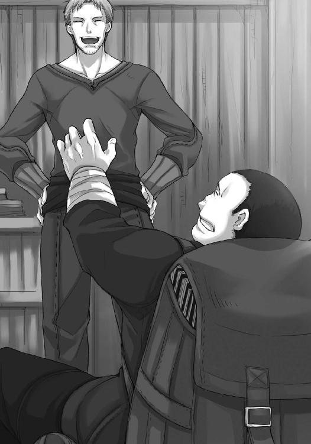
ロレンスも笑っていると、ふと、フィロンの視線が入り口に向けられたのに気がついた。
凛とした声が響いたのは、その直後だった。
「神を侮辱する前に、己の強欲を反省なさい」
そして、一人の小柄な人物が店に入ってきた。
こんな場所に似つかわしくないといえば、その人影以上に似つかわしくないものも他にない。先の言葉と共に店に入ってきたのは、修道服を身にまとった聖職者だった。
しかし、ロレンスが目を見開いて驚いたのは、そのことについてではない。
向こうも店に入ってくると、扉の横にいたロレンスたちにすぐに気がついた。
聖職者たる者、多少のことでは驚いてはならないというように、相手はすぐに表情を落ち着けた。それから相変わらず鋭い目つきのまま、こう言った。
「奇遇ですね」
それについてはロレンスもまったく同感だ。
「ええ」
ロレンスは、やや苦手なこの娘の名を、咳払いを挟んで口にした。
「お久しぶりです。エルサさん」
ひっつめた髪と、感情を感じさせないはちみつ色の瞳の組み合わせは相変わらずだった。若干頰がこけているように見えるのは、慣れない旅路のせいかもしれない。外套から覗く修道服も、元々は綺麗に黒く染め上げられていたのだろうに、今は埃で白っぽくなっている。
それでも声音にはまったく疲れを感じさせないのだから、頑固なまでに立派だった。
「なんと、お二人はお知り合いですか」
ロレンスとエルサの挨拶を舞台上の劇かのように見ていたル・ロワは、首を忙しなく左右に振りながら言った。
「以前、村を助けていただいたことが」
「ほほう！」
ル・ロワは膨らんだ頰がへこむほどに口をすぼめ、驚きをあらわにする。
「では、あなた様もテレオの村の？」
ル・ロワは見上げるように尋ねてくる。実際にル・ロワの背丈はロレンスよりも若干低めであるし、重い荷物を背負っているせいで立ち上がっても前かがみだ。
「いえ、私はたまたま旅の途中に立ち寄ったところ、少しお手伝いをさせてもらうことになりまして」
「ほほう、左様ですか。それはそれは......」
ひょうきんそうなル・ロワはその身振りがいちいち大袈裟でわざとらしい。
ただし、この手の商人はそのひょうきんさの裏になにを隠し持っているかわからないところがある。自分に隠しきれないほどの腹黒さがあることを自覚しているからこそ、わざとらしい振る舞いで糊塗する者が多いからだ。
もちろん、ル・ロワがそうであるかどうかはわからないが、油断していい理由にはならない。
ロレンスがそれ以上多く語らずににこにこしていると、言葉を挟んできたのはフィロンだった。
「うちは雑貨商であって酒場ではないんだがね。出会いの祝福はよそでやってくれないか」
呆れるような冷たい言葉に、ル・ロワはフィロンのほうを向いてぱちんと自分の額を軽く叩く。
「これは失敬」
エルサのほうも元々会話を弾ませるような性格ではないので、ロレンスたちにそれ以上言葉はかけてこない。
ただし、側にいるホロが無礼な奴め、という顔をしていないので、エルサが実際は余計な話をできないほど疲れていることに気がついているのだろう。
「それに、連れのお方はだいぶお疲れのご様子だ。さっさと宿を決めてから出なおしたらどうだい」
フィロンも旅に暮らす者たちを相手に商いをする身だからか、わかっていたらしい。
エルサは否定も肯定もするでもなく静かに立っていたが、ル・ロワはやはりまた大袈裟にうなずいてこう言った。
「そうなのです。まさしくそのことで、旅装も解かずこちらにやってきたのですが」
その瞬間、フィロンの顔に困ったような色が浮かんだのをロレンスは見逃さなかった。
旅装のまま商売相手の店に顔を出すのは、よほどそこの主人と親しいか、さもなくば焦っている時だろう。
そして、おそらくは後者であり、ル・ロワは予想どおりの言葉を口にした。
「部屋を都合してもらえませんか」
フィロンは今度は隠さず嫌そうな顔をして、細く長い息を鼻から吸った。
息を止めたのは、その時間分、あれこれ言葉を考えるためだろう。
「頃合が悪かったね」
絶妙の間をあけてため息と共に放たれたのは、そんな無慈悲な言葉だった。
「な、そんな、フィロンさん。冷たいことを言いなさるな。上等な部屋でなくてもいいんですよ。あっちこっちの宿で断られてしまいましてね。私はそこいらへんの荷物と同じで構いませんが、こちらの」
一度言葉を切って、事の成り行きをただ静かに見守っていたエルサの両肩をぐいと摑んで、家畜商に自分の育てた自慢の鶏を見せるかのように、前に突き出した。
「こちらの方にそんなことをさせるわけには参りません」
当のエルサは当惑顔だが、フィロンのほうも露骨に困り顔だ。
ル・ロワの常套手段なのだろう。
ここまであからさまにやられては相手もそうそう無下にすることもできない。
その上、本当に無茶なことを要求しているわけでもないので、ル・ロワは自身の評判をそれほど落とすこともない。なにせエルサが頑固に押し隠しはしても、疲れているのは見る人が見ればわかり、きちんとした寝床でぐっすり休んだほうがよい、というのは明らかだからだ。
加えて、エルサはホロのように便宜上聖職者の格好をしているわけではない、という雰囲気が滲み出ている。ル・ロワは、人の世の役割とそれに対する人の気持ちを徹底的に把握できている。
ホロがしたたかな中年男であったら、多分こんな具合になるのだろう。
「そうは言ってもだね、生憎と倉庫のみならず部屋までも物でぱんぱんでね。小僧どももその隙間に詰め込んで寝起きさせている有様なのだ。しかも、小僧連中は働かせてないとその余力をなにに使うかわからんような年頃だ」
フィロンは半目になった視線を、ル・ロワが突き出したままのエルサに向ける。
「夜の夜中に、神の子羊様に傷をつけるようなことがあっては私が困る」
気取りも衒いもない物言いに、さすがのエルサもやや体を強張らせていた。
両肩を摑んでいたル・ロワももちろん気がついたようで、まるでフィロンがその当の飢えた獣であるかのように、エルサの前に立ちはだかる。
「私はどうなっても構いません。是非ともこちらの方だけは......」
「そのお方のために私は言っているんだがね」
「おお、神よ、この者の無慈悲を許したまえ！」
芝居がかって叫ぶが、当の本人がつい今しがた神を平気で侮辱していたのだから世話がない。
フィロンはやれやれとため息をつくし、コルは妙な大人にびっくりしている。楽しそうなのはホロだけだ。
さてどうしたものか、と場の空気が一段落したところで、ロレンスは仕方なくこんな言葉を挟んでいた。
「我々が泊まっている部屋でよろしければ」
「な」
と、言いかけたのはホロで、それが自分の心の狭さを露見させてしまうのを恥じてか、慌てて口をつぐむ。しかし、目ははっきりとロレンスを責めている。
対してフィロンは厄介な面倒事に最上の解決策が示されたとあからさまにほっとして、コルは困っている人を助けられてよかったよかったと笑っていた。
ル・ロワに至っては、地が裂け海が涸れた地獄に救世主が舞い降りた、と言わんばかりの顔つきだった。
「おお、おお、なんという素晴らしいお方。あなた様の頭上には必ずや神の祝福が......」
ル・ロワはそこで言葉を詰まらせてしまい、そのあとなんと続けようとしたのかは定かではない。ただ、聞いても聞かなくても構わない言葉だというのはわかる。
なお、ロレンスの手を取って上下に振るル・ロワの感謝を遮ったのはエルサであり、こちらの口から出る言葉には、ほとんど無駄がない。
「お礼は出せませんよ」
言って、じっと見上げてくる顔には敵意すらあるのではないかと思ってしまう。
ただ、ロレンスはエルサのいたテレオの村で、その窮地をつぶさに見た。
ホロの力も借りてなんとか窮地を脱したとはいえ、依然として油断のならない状況であるのは間違いがないはずだった。
本当に、逆さに振ってもなにも出ないくらい、無一文であるのだろう。
ロレンスは、その潔さに敬意を表すことにした。
「この世でよいことをするのは、天の国に財産を積み上げる行為だそうですね？」
ロレンスが言うと、エルサはやや戸惑いぎみにだが、答えてくれる。
「金袋を担いだまま天の御国への門はくぐれませんから」
「ならば、その狭い門をくぐれるような形にして、持ち込みたく思います」
エルサは一瞬、苦いものを食べたような顔をした。
無一文の自分が相手の宿に泊まれば、単に泊まる以上の迷惑をかけることになる。例えば食事などがそうだ。一人食べるものがない横で、がつがつと食事ができるほどロレンスたちは無神経ではない。
エルサにはそれがわかっているし、ロレンスたちが手を差し伸べてくれる相手だということもわかっているからこそ、心苦しいのだろう。
ただ、他人の好意を受け取るのがへたくそな不器用者の相手は、ロレンスも身近な旅の連れのお陰でそれなりに慣れている。
「もちろん、現世のほうでもいつか貸しは返してもらうつもりです」
この手のことは、多少下世話でも冗談にしてしまうのがよい。
エルサも馬鹿ではないから、そんな商人の気遣いに、軽くだがようやく笑ってくれた。
「厄介になります」
エルサは言って、敬虔な信徒であることを示すように、手を組んで祈りを捧げるように頭をたれた。
直後、ぽん、と手を叩く小気味いい音がする。
他ならぬル・ロワで、まるで婚姻誓約の場に立ち会った仲人のように、嬉しそうな顔をしていた。
「やあやあ、これで私の胸のつかえも取れました。いや、よかったよかった」
「では私も人助けをするとしようか。旦那だけなら、ここに泊まればいいさ」
フィロンはそう言って、自分の机の上を指す。
もちろん机の上で寝ろというわけではないだろう。
「夜中にべろんべろんに酔っ払った客が来るかもしれないが、その相手も込みでいいというのならね」
「もちろん構いませんとも！ まったく神の思し召し！ フィロンさんの頭上には必ずや──」
フィロンは犬を追い払うように手を振って、嫌そうな顔をする。ル・ロワはこれはこれで大して嫌われもせずにやっていけるのだろう。
そのあと、エルサの荷物は外の騾馬につないであると言うので、二人揃って外に出ていった。
ロレンスたちもフィロンに軽く挨拶をして店から出ようとすると、当然のことながらホロは仏頂面のままだった。
「嫌か？」
わかりきったことを聞くと、ホロはぶすっとしたまま答えてくる。
「嫌というわけではありんせん」
いつかどこかでしたようなやり取りに、ロレンスはついおかしくて笑ってしまう。
確か、あれは羊飼いの娘と町まで一緒に行っていいかどうかを聞いた時のことだ。
あの時ロレンスは、ホロが自分と二人だけの旅がいいので嫌がっていた、と勘違いした。
挙句、その間抜けな勘違いを見抜かれて、からかわれた。
では、今はどうか。
ロレンスは石段を下りる数歩の間、ホロのむすっとした横顔を眺め、それからこう言った。
「なら、なんの問題もないはずだろ？」
ホロは石段を下りきったところで足を止める。
すぐ後ろをついてきていたコルが止まりきれずにホロの背中にぶつかった。
コルに押されて一歩前に進み出たホロは、それでもじっとロレンスから目を離さなかった。
「ご、ごめんなさ......い？」
そして、ロレンスのことをじっと見つめながら慌てるコルの手を取って、見せつけるようにしっかりと指を絡めて手をつなぐ。
「ぬしの言うとおり、なんの問題もありんせん」
最後にべっと舌を見せて、ホロはコルを引いて歩いていく。
ル・ロワがそんな二人に気がついて顔を上げ、ロレンスのほうに視線を向けてきた。
「先に宿に帰って片づけをするそうです」
疑う理由もない。
ル・ロワはうなずき、「よく手なずけておりますなあ」と感心するように言った。
騾馬にくくりつけた荷を解いていたエルサはその言葉に手を止めて、はちみつ色の瞳をこちらに向けてきた。
「そうなのですか？」
お、と思ってしまったのは、まさかエルサの口から冗談が出るとは思わなかったから。
コルがフランと出会って物思いに耽っていたように、エルサもあれから少し変わったのかもしれない。あるいは、あの粉挽きの少年エヴァンにはこんな顔をよく見せるのかもしれない。
そんな下世話な物思いは、「用意できました」とのエルサの言葉で途切れることになった。
騾馬の背からずいぶんたくさんの荷を解くので、ロレンス一人が手伝うだけでどうにかなるだろうかと少し不安だったのだが、エルサを見れば小さなずだ袋を一つ担いでいるだけだった。
どうやら、荷物の一番奥にくくりつけていたようだ。
多分、その大きさからして、絶対になくすことも濡らすこともできない、特権を記した羊皮紙や各地の権力者の手紙だろう。
ホロも見た目は修道女だが、やはり、本物の雰囲気は一味違う。
「では、参りますか」
「よろしくお願いします」
相変わらずのきつい目つきのまま、エルサはそう言ったのだった。
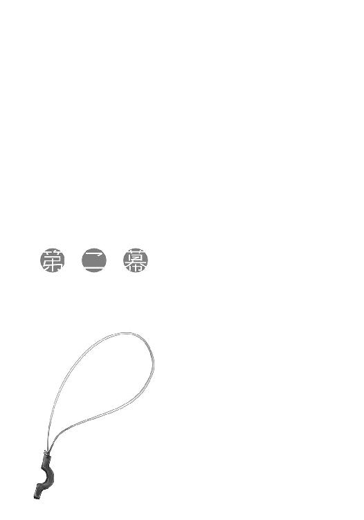
コルも着ているものは貧相だ。
縫いあとだらけで端は擦り切れてぼろぼろの外套を着、足首が丸見えの丈の合っていないズボンを穿き、けちな商人が切り分けた肉よりも薄い草履を履いている。
瘦せているし、見た目からして吹けば飛ぶような軽さだ。
しかし、単に金がないのと、教会のいう清貧とはまったく違うものである。
エルサも疲れているし、頰は若干こけているうえ、着ている服もさほど上等ではない。それが、ただそこに座っているだけで凛とした迫力を感じさせるのは、やはり内面からの強い光のせいなのだろう。
床に座ると言って聞かなかったエルサをなんとか椅子に座らせ、酒の代わりに滋養のつく飲み物ということで生姜を羊の乳で煮出してはちみつを加えたものを用意した。
受け取る時に遠慮は見せないが、決して感謝を忘れているわけではない。
居丈高にならず、同時に、堂々とした風格を損なわない。
飲み物に口をつけ、ほっと一息ついてくれたのを見て、ロレンスもまたほっとため息をついたのだった。
「村を出た理由ですか？」
食べ物で籠絡される、というのはエルサに限っては当てはまらないだろうが、幾分緊張が解けたらしいのは口調から明らかだった。
「ええ。正直、理由が思い当たらなくて」
つまりまったくの好奇心です、とは、エルサに付き合う程度に酒を注いだ木のコップを持ってつなげた言葉だ。
「人を探しに参りました」
そして、エルサの返事はまったく予想外の方向から来た。
「人探し......ですか」
「特定の人物ではありませんが」
コップに口をつけ、静かに飲んでから目を閉じ、ゆっくりとした深いため息をつく。
ホロやコルの元気な食事風景ばかり見なれていると、まるで貴婦人にすら見える上品さだ。
「教会で聖職を務めてくれる方を探しに来たのです」
「でも」
と、ロレンスが言うのと、目を開けたエルサがうっすら笑うのはほとんど同時だった。
「あなた方のお陰でテレオの村には信仰の火がともりました。加えて、素晴らしい力でエンベルクの町の企みを粉砕してくれました。今では向こうの町からわざわざ村に菓子を買いに来てくれる人がいるくらいです」
素晴らしい力、という時だけは、エルサはホロのほうを見た。
そのまなざしが感謝のものであるということは、我関せずという顔で干し肉をかじりながら窓の外を眺めていたホロにもわかったらしい。
相変わらず無愛想だが、返事とばかりに狼の耳がひくひくと動いていた。
エルサはホロの正体を知っているので、窮屈なフードを被っている必要はない。
「エンベルクの町の方々は村の細かいことなど知りませんからね。教会に私しかいないと知ると、やはり驚かれます。もちろん、きっちりと首に縄をかけておいたエンベルクの司教様はなにも言われませんけど、それもいつまでおとなしいかわかりません」
教会は徹底的な男社会だ。有名な修道院の院長に女性が納まることがなくはないとはいえ、それは修道院の話であって教会ではない。
エルサはそんな理不尽を飲み込むように、ずす、とコップの中身をすすってから軽くむせていた。生姜の塊を飲んでしまったのかもしれない。
「けほ......失礼。ですから、村で聖なる務めを果たしてくれるきちんとした方を探しに来たのです。こればっかりは、あの教会からあちこちに手紙を出すわけにはいきませんから」
「自分の眼鏡に適う者でなければ、と？」
やや意地悪な言い方をすると、エルサはくすりと笑う。
もしかしたら、エルサは肩肘張った振る舞いを自分で楽しんでそうしているのかもしれない。
「もちろんです。私は父であるフランツ司祭からあそこを預かっている身なのですから、それに相応しい方に来ていただかなければなりません」
エルサの育ての父であるフランツ司祭は、テレオの村で異教の神に関する書籍を収集していた。そのせいでたびたび異端の嫌疑をかけられながらも飄々とかわしおおせ、それどころかあちこちの有力者とのつながりを活かし、テレオの村に独自の聖域を作り出していたという傑物だ。
そんなフランツ司祭の後任を任される相手は、不運と言ってもいいかもしれない。
もっとも、エルサの口調は幾分冗談じみている。
自分の理想と現実との差を、きちんと理解したうえでのことだろう。
「ただ、それが最大の理由としても......」
と、エルサはホロのほうを向く。
ホロが「？」と振り向くと、こんな顔ができるのかといった優しげな笑みを見せてくれた。
「私は世間知らずだということを思い知りました。この機会に少しは世間を見ることができれば、と思ったのです」
「ふむ」
ホロは鼻を鳴らし、よい心構えだ、とでも言わんばかりだった。
ホロ自身、何百年と麦畑にいたせいで世の流れから取り残されていた。
幾分先に世を見て回っている最中なので、ちょっとした先輩意識があるのかもしれない。
ロレンスは呆れ笑いながら、エルサに視線を戻してこう言った。
「でも、難しい決断でしたでしょう？」
行商をしていれば、狭い世界に住む者たちが外の世界をどう思っているのか目の当たりにすることがある。
村や町を残して世界は滅んでしまっているに違いない、と大袈裟ではなく思っている者がいるくらいなのだ。いくら神のご加護を信じているとはいえ、女の身で外に出ようと思うのは並大抵のことではない。
ロレンスがそう尋ねると、エルサは無言でロレンスのほうを見つめ返していた。
その胸元には、ロレンスがテレオの村を訪れた時に見たのとは違う、手彫りの教会の紋章がぶら下がっていた。
誰が作ったものか、と問うのは愚問だろう。
ロレンスがあの村をあとにする時、エルサの隣にはやや頼りないが勇敢な粉挽きの少年がいた。
「もちろん、何度もやめておこうと思いましたが、神のお導きがありましたので」
何百年と神様扱いされていたことに腹を立てるホロではあるが、他人が目の前で別のなにかを神と呼ぶことには面白くないものがあるらしい。
綺麗な三角の狼の耳の片方を、若干斜めにして話を聞いていた。
「あの書籍商の方ですか？」
ロレンスが言うと、エルサはゆっくりとうなずいた。
「そうです」
「また妙な方と面識がありますね」
うっかり思ったことを言ってしまったと慌てたが、エルサは楽しそうに声を上げて笑う。
口元を押さえて「失礼」と言ってから、「そう思われるのも無理はありません」とつなげた。
「私は一度しかお会いしたことがありませんでしたが、父であるフランツ司祭とは旧知の仲であると知っていました。それに、父の手紙の中に、いざという時に頼るべき者としてその名がありました。父が信用されている方ならば、私も信用するべきです。たとえ、いかに見た目が軽薄で強欲そうであったとしても」
あのいかにもしたたかな商人らしい振る舞いに、エルサが彼をほいほいと信用するとはとても思えなかった。その判断はそう間違ってもいなかったらしいが、そんな自分の判断を遠まわしに責められているようにも感じた。
ロレンスが頭を搔くと、エルサはゆっくりと息を大きく吸って、説教でもするかのように言葉を紡ぐ。
「私自身若干の不安がなかったと言えば噓になりますが、大変真摯な方でした。もっとも、強欲であるというのは間違いがありません。彼の真摯さは、その強欲から来ていると言っても差し支えありませんから」
よく人を見ている。
そして、それでようやくあの書籍商がどういう人物なのか見えてきた。
「つまり、あの書籍商はフランツ司祭の蔵書を狙っている、というわけですね？」
ロレンスの遠慮のない言葉に、エルサはにこりと笑ってくれた。
「村にはあんな方いらっしゃいませんからね。最初は面食らいましたが......自分の欲望にあそこまで忠実であると、ほとんど神の教えに忠実なのと区別がつかないのだということも知りました。あの手この手で私の口からフランツ司祭の蔵書のありかを聞き出そうとしましたよ。ただし、あくまでも穏便に」
ホロの故郷の位置を知るために、ロレンスたちもあの手この手で見せてもらおうとした蔵書だ。ちなみにロレンスがそれを見せてもらおうとした時に取った手段は、およそ褒められたものではない。
エルサが神の教えに忠実なのをいいことに、教会の聖堂で言葉を弄して追い詰めたのだ。
その時のことを思い出して、悪いことをした、と改めて反省する。
見れば、エルサは先ほどまでの笑顔を引っ込めて、じっとロレンスのことを見つめていた。
肝の小さい行商人らしく視線を泳がせると、共犯のホロはどこ吹く風だった。
「そのようなわけで、私がこの町まで行きたい旨を申し出ると、喜んで引き受けてくれました。旅は大変でしたけど......もう少し続けていたら、蔵書のありかを喋っていたかもしれません」
初めての旅となれば、なにもかもが未経験なことの連続だっただろう。
その時に頼れる者が側にいれば、卵から出た雛鳥が最初に見た者を親と思い込むように、無条件の信用を置いてしまう。
ただ、きっとル・ロワはそれでなくとも本当に信用の置ける人物なのだろう。
本当に手練れの商人とは、そういうものだ。
「偉大なる聖人とは皆住みなれた故郷を離れ、人里離れた森や砂漠で隠遁するものですが、なるほど、と思いました。外に出て初めて、人の弱さを知りました」
いかにも聖職者らしい感想に、ロレンスはやや笑いながらうなずいておく。
きっとエルサの言うことをロレンス以上に身につまされて理解できるのだろうコルだけは、真剣な顔でうなずいていた。
「ですから、私はあなた方が去ったあとに抱いていた疑問がようやく解けもしたのです」
その言葉には、ロレンスのみならずホロも興味を引かれたらしい。
視線を窓の外からひょいとエルサに向けた。
「疑問、ですか」
「ええ。どうしてあれほど特別の力を持ちながら、今なお質素な荷馬車に乗っているのだろう、と」
ロレンス自身、何度か思ったことだ。ホロの力を借りてしまえばロレンスはきっとあっという間に信じられないくらいの大金持ちになれるだろう。そんな方法はいくらでもある。
それでもそうはしてこなかったし、自分の命が危険になりかけてもなお、ホロの力を借りずにすませる方法はないかと思案してきた。それこそ、ホロが歯がゆく思うくらいに、だ。
それはホロの前で見栄を張りたいという気持ちもあった。
しかし、根底にある思いは一つだ。
「私は自分が弱い者であると嫌というほど知っています。たとえ連れの力を借りたとしても、その弱さがなくなるわけではありません。ですから、あくまでも自分の力で、あるいは」
そこまで言ってホロを見たのは、照れ隠しに近いものがあった。
「自分の強さに応じて、連れの力を借りるだけです。小さな器に大きな物は盛るな。商人の鉄則です」
ロレンスは言って、「痛い目を見るのは、大体その鉄則を破った時です」と反省して付け加えておく。
ホロが、かかと笑った。
「世界が広がって見える、というのは本当ですね」
そして、エルサは手元のコップの中に視線を落としてから、静かに目を閉じる。元々抜き身の剣のように鋭いエルサではあるが、なにかもっと厚みが増したような、そんな気がした。
人は出会った頃のままではいられない、とホロはこの町で泣いた。
確かに人は変わる。
それでもそれは避けられないことだし、悲しむ変化ばかりではない。
ロレンスがホロと一緒に懸けたのは、どちらかといえば楽観的な道だった。
ホロも同じことを思ったのかどうか。窓の外を眺めているホロの耳は、気恥ずかしさを我慢する時と同じ形をしていた。
もしかしたら、あとで怒られるかもしれない。
「再びお会いできたことを、私は神に感謝しています」
エルサの飾らない言葉に、ロレンスはしっかりとうなずいたのだった。
旅はたくさんの出会いをもたらし、たくさんの発見をもたらす。
それは世の広さであったり、自分の小ささであったりと様々だ。
ただ、息を飲むような絶景に心打たれることもあれば、悲惨な戦場の跡に心痛めることもあるだろう。
あるいは、それはまったく違う文化の香りに対する衝撃かもしれない。
魚の尻尾料理と銘打たれてはいるものの、どう見ても肉にしか見えない料理に対するエルサの反応も大体似たようなものであった。
聖職者たる者肉を口にしてはならない、などという文言は、死にたくない者は水の中で息をしてはならない、という無意味な文章とほとんど変わらないくらい当たり前のことだっただろう。その戒律に、まさかこれほどあからさまな抜け道があるとは。
そんな顔に、ロレンスの隣に座るホロはいたくご満悦だった。
「お客さん、信じられないようなら歴代司教様の許可証見ます？」
今日も元気に店を切り盛りする娘は、別の客に両手一杯ビールを運びながら、通りがけにそんなことを言った。
普通の酒場に一目で本物だとわかる聖職者が来ればどこもよそよそしい沈黙に満ちるものだが、ここだけは特別らしい。誰一人エルサのことなど気にせずに、日々の疲れを馬鹿騒ぎで癒していた。
「いえ......いえ。これが、世の広さというものですね」
エルサは料理に目を落としたまま言って、不器用にナイフを突き立てる。
そして、全てが理想どおりにはいかない現実を飲み込むかのように、豪快にかぶりついた。
ホロが驚いたのならコルももっと驚いて、看板娘だけが楽しそうに笑っていた。
「む......く......ん、く」
ぎゅっぎゅっと咀嚼してようやく飲み込むと、エルサは固く目を閉じたままテーブルの上のコップを探す。コルが気を利かせて手渡すと、礼もそこそこに果汁の水割りを飲み込んだ。
全てを洗い流そうとする勢いは、不浄なものでも食べてしまったかのような感じだった。
冗談がすぎたかな、とロレンスが不安になった直後、空になったコップを置いて、まだ苦しそうにエルサはこう言った。
「か、辛い......」
酒を飲んだわけでもないのに頰が赤い。ついでに目尻も赤いので、禁欲生活が当たり前のエルサには、酒が異様に進むほど味つけの濃いこの料理は単純に劇薬だったらしい。
「はは、酒飲み用ですからね。こちらはどうですか」
教会は痛飲さえしなければ酒を飲むことに関してはあまりうるさく言いはしない。大酒飲みで有名な司教や説教者はそれこそ数知れない。それに酒があればつまみも欲しくなり、結局彼らはぶくぶく太ることになる。聖天使博士と渾名される古代の知識に精通した教会博士は、あまりに腹が突き出ているためにテーブルの縁を腹の形に削っているほどだ。
「これは......」
「貝をバターで炒めたものです。川を下った先にある港町から、殻付きのまま運ばれてきたものですよ。なんなら、生でも食べられるそうです」
極寒の地や異教の地でもなければ生食の習慣は滅多にない。レノスの町にそんな風習が多少でもあるのは、外洋から船がたくさんやってくるケルーベとつながりが深いからその影響だろう。
当然、エルサはそんな冗談に歳相応の少女のようにぎょっと目を剝いた。
ホロがそれを見て楽しそうに看板娘に声をかけようとしたので、ロレンスは丁重にホロの顔をテーブルに戻しておいた。
「尻尾料理の味つけが濃すぎるようでしたら、パンに少しずつつけながら食べるとちょうどよいかと思います。こちら、料理の出来は完璧なのですが、いかんせんパンだけは少し......」
と、ロレンスが言おうとしたところ、テーブルの上にどんと新しい料理が置かれた。
見れば、看板娘が笑顔でロレンスのことを見下ろしていた。
「......パンだけは少し、お値段が張りますね」
ロレンスが言いなおすと、娘は小さくうなずいて、大股で厨房に戻っていく。ホロはけたけたと笑いながら、茹で上がったばかりの豆をパンにどっさりと載せていた。
「外に出ると、食べ物ですら多彩なのですね」
テーブルの上には肉、野菜、貝が並び、それぞれ焼かれたり蒸されたり茹でられたりしている。味つけも濃いものから薄いものまであって、パンもまたエルサが普段から目にしているだろうものとは少し違う、食べ物を載せて一緒に食べやすいよう薄く切られたものだ。
小さなテレオの村だけでなく、そこから少し離れたエンベルクの町ですら、交易はあまり盛んではないらしく、食べ物に関しては疎かった。
ロレンスは、テレオの村をその疎さを利用して救ったのだ。
「でも、驚くことが多いのは最初だけですよ。私も生まれの村を出たばかりの頃は眩暈がするような毎日でしたが、一月もするともういっぱしの旅人のような顔をしていましたから」
もちろん、そんなことを思いながら、かさかさに乾いた毎日を送っているところに、ホロなどというとんでもないものと出会うことになったのだから、世の中はわからない。
それでもエルサは気を遣ってくれたことに感謝するように微笑もうとした。
その顔が強張ったのは、ホロが大口を開けてパンにかぶりついたからだった。
「んぐ、むぐ......うむ」
口の端についた豆のかけらを親指で拭い、もっくもっくと動く唇の間に押し込んでなめ取ってから、忙しなく飲み込んで二口目にいこうとする。
食べている時と飲んでいる時と寝ている時はひどく無防備なホロだ。
「む？」
大口を開けたところでようやくエルサの視線に気がついたらしく、一瞬どうしようか迷ったのが見て取れたが、結局がぶりとかぶりついた。
ロレンスは言い訳が必要かとひやりとする。それでも自分になにかを言い聞かせるようにうつむいてから、エルサもまたパンを手に取った。最初はそれをちぎって自分の口に運ぼうとしていたが、直前で先ほどのロレンスの言葉を思い出したらしい。袖の膨らみを別の手で押さえながら、おそるおそる魚の尻尾料理の皿にかけらを浸そうとする。
その手が止まったのは、先ほどの辛さが口の中で蘇ったわけではないだろう。
豪快にちぎったパンの塊を同じように魚の尻尾料理に浸したコルが、ぼたぼたと滴るのも気にせず口に運んだのを見たからだ。
「っ......」
傍若無人のホロと違い、コルはきちんと人の目を気にするところがある。
目を丸くして呆れているエルサの様子に、なにかまずいことをしたかと戸惑い気味だった。
ただ、詰められるだけパンを詰め込んだ口はむぐむぐと忙しなく動いている。
コルのいつもの食べ方は、栗鼠を思わせるとホロが評したことがある。ホロがよくコルに食べ物を分け与えているのは、もしかしたら栗鼠に餌を与えている気分なのかもしれない。
実際、せっせと口に食べ物を運ぶコルの姿は、上品とは程遠いがとても愛嬌がある。
ロレンスが笑っていた直後だった。
「お行儀が悪いですよ」
我慢しきれない、といった様子でエルサが言った。
言われたコルはちょうど二口目にかぶりつこうとした時だった。
そして、動きを止めて口を閉じると、パンを手におどおどとエルサのほうを見返している。
ホロはそれを見てにやにやと笑い、我関せずといった様子でパンの残りを口に放り込もうとした。
「あなたもです」
そこはホロがホロたる所以。
口に放り込む直前でぴたりと手を止めつつも、顎を上げたままの姿勢でエルサのほうを見て、そのままパンを口に放り込んでしまう。
エルサはため息をついて、矛先をこちらに向けてきた。
「私の村ではこういう時に、泥棒ではないのだから、と注意します」
人目をはばかるような、落ち着きのない食事、という意味だろう。
ロレンスがおとなしくうなずくと、ホロはいけしゃあしゃあとこう言った。
「旅人ではこれが普通でありんす」
エルサはその言葉にうっと怯む。村を離れれば自分の知らないこと、常識とは外れることであふれている、と自覚しているのだろう。
ただし、旅人だろうとなんだろうと、多少の作法くらいは心得ておくべきには違いない。
しかも、ホロの言葉はエルサの無知と正直さにつけ込むようなずるいものだ。実際に旅人だから無作法であっていい、などという理屈はない。
怯むエルサを見て意地悪く笑うホロの頭を小突いてから、「すみません」と添えておいた。
「どうしてもがさつな食事になりがちで」
「い、いいえ」
調子を取り戻したエルサは背筋を伸ばしたまま凛とした様子で言って、それから、ふっとなにかに気がついたように天井を見た。
ロレンスが釣られてそちらを目で追うと、当のエルサは視線を戻して瞼をゆっくりと閉じた。
そして、こほん、と小さく咳払いをして、こう言った。
「大変素晴らしい食事を振る舞っていただき、感謝のしようもありません。なんとかお礼をできればと思うのですが、私はご覧のとおり貧しい村より出てきたばかりの旅の者です。そこで、いかがでしょうか」
目を開けたエルサは、どこか嬉しそうですらあった。
「私が幾らか食事の仕方についてお力添えをいたしますが」
隣に座るエルサを不安げに見つめていたコルは、対面のロレンスにも同じ視線を向けてくる。
生まれてこの方、行儀が悪いと言われたことすらないのかもしれない。
もちろん、コルのことを考えるならここである程度形だけでも作法を学んでおくのはいいことかもしれない。現状は、控え目に言っても獣並みだからだ。
そんなロレンスの考えを表情から読み取ったのか、エルサが隣のコルを見据えて優しく笑う。
「大丈夫です。私の村にも物覚えの大変悪い者がいましたが、学べばきちんと身につきます」
パンの食べかすをぼろぼろとこぼし、それをエルサに怒られていたエヴァンのことを思い出す。ホロも同じだったらしく、けたけたと笑っていたが、エルサはため息をついて再び同じことを言った。
「あなたもですよ」
「なっ......わっちを誰じゃと──」
「誰でも同じです。それに、あなたはその気になればきちんと振る舞えるはずでしょう。そんなことではいけません」
そのあたりはそつなくこなせるのがホロのすごいところであり、また同時に嫌味なところでもある。エルサはすっかりお見通しらしく、ホロはつまらなそうにそっぽを向いた。
「せっかくの素晴らしい料理です。正しく食べれば、さらにおいしくなりますよ」
修道服に身を包む者らしく、エルサの笑顔は柔らかい。
きつい顔つきと固い口調の時は、あのフランにそっくりなところがあるエルサだが、こういうところは全然違う。
フランは血煙の中を聖典と仲間の絆だけを頼りに生き延びてきた。
エルサはその点、多少頼りなさそうでも手を握る相手がいた。
同じような花でも、咲く土地や条件が違えば色の違う花を咲かせるものらしい。
「あ......えっと......」
と、コルはロレンスを見る。
元はヨイツの森に住む狼のホロはともかく、コルはそうではない。ましてや教会法学を修めて高位の聖職者を目指すのであれば、立ち居振る舞いは重要なところだろう。
ロレンスがうなずくと、コルは走り出した荷馬車に乗り遅れた客のような顔をした。
それでも、そこで途方に暮れるか、徒歩でもいいから歩き出そうとするかで人の価値というものは分かれてくる。
コルは立派に後者の人間だ。
不安げな顔でも顎をぐっと引いてうなずくと、幾分凛々しく見えた。
「お、お願いします」
「はい。わかりました」
にこりと笑うエルサをよそに、ホロは酒をぐびりと飲んだのだった。
エルサの教えはそれほど突飛なものではなかった。
急いで食べない。いっぺんに口に詰め込まない。ものをこぼさない。音を立てない。口を近づけるのではなく、食べ物を口に持ってくる、などなど。
ただし、そんな忠告もコルには初めて聞くようなものばかりだったらしい。
そもそもが、急いで食べて、取られる前に口に詰め込んで、こぼせるほど量がなく、音を立てないようにと気遣う涼やかな会話があるわけでもない。それどころか、手を洗ったり拭ったりすることすらない食事に慣れきっていたコルなのだ。
落ち着いて食事ができるようになったのは、ロレンスたちと出会って以来、最近のことだという。
そんなコルはあれこれ注意されながらの食事を終えてから、席を立つ際に真剣な顔でロレンスにこんなことを聞いてきた。
「あんなにゆっくり食べていたら、せっかく温かいものが冷めてしまうと思うのですが......」
それを小僧特有の屁理屈や反抗心から言うのではなく、滅多に温かい食べ物に与れなかった放浪学生のコルが言うのだから、なんとも不憫に感じてしまう。
ロレンスはコルの小さい背中に手を当てながら、そっと言ってやった。
「その代わり、一緒に食べる相手がいるだろ。多少冷めてもうまさは変わらないはずだ」
駆け出しの頃ならば絶対に言わなかったような台詞だが、自分でも驚くくらいにさらりと出た。少しの気取りも衒いもない。
なにせ、事実としてホロと二人旅になった途端、食事は単なる栄養補給ではなく、楽しい娯楽の時間になった。冷たくまずい食事であっても、冷たいだのまずいだの言いながら食べる相手がいれば、それだけで楽しいものなのだ。
コルもそんなことに思い至ったのかもしれない。
素晴らしい真実を教えてもらったかのように、深くうなずいていた。
「まあ、覚えておいて損はない、という気持ちで臨めばいいさ。どうせ、タダだ」
「はい」
ロレンスのにやりとした笑みにコルは元気よく返事をして、先に店から出ていたエルサの下に駆け寄った。
勉強熱心なコルのことだから、教えてもらったばかりのことを確認しに行ったのかもしれない。対して面白くなさそうなのは、ロレンスが支払いをする間中だらだらとテーブルに居座っていたホロだ。
「お前が教えてやればいいのに」
釣銭の銅貨には兎の紋様が刻まれていた。ちょっとした仕事の対価として受け取って、軽い食事ですぐに出ていってしまうような貨幣だから、わざとこんな紋様なのかもしれない。
ロレンスが軽く投げながら手の上で弄んでいると、ホロが一瞬でかっ攫っていってしまう。
「どうせわっちゃあ獣じゃからな」
またそんな冗談を、と笑おうとして、フードの下の顔が思いのほか真剣なことに気がついて口をつぐんだ。
「楽しければよい、と思っておった」
ホロがあれこれ押しつける性格だったら、麦の豊作を何百年と司ってきた村で、自分の存在を忘れ去られるどころか、村人から排斥されるような目にも遭わなかったはずだ。
楽しく、自由に、気楽に過ごせればいいし、それがなにより。
一見気が強そうで何事も自分の思いどおりにしようとする性格に見えても、根っこではのんびりとした性格だ。麦畑でどっかと寝そべって、日がな一日麦の穂の揺れる様を眺めている姿をつい想像してしまう。
それはとてもホロらしいし、のどかで素晴らしいと思う。
それでも、世の中全てがそうであるわけではない。
「コルは年頃だからな。学ぶことそのものが楽しいんだろうさ」
我ながらうまいことが言えたと思っていると、ホロはそれ以上にずるいことを言われたと思ったらしい。唇を尖らせて、ロレンスに軽く肩をぶつけてきた。
二人で店を出ると、待っていたコルとエルサは揃って歩き出す。
あれこれ会話が弾んでいるらしく、後ろからでも楽しそうな表情が見えそうな勢いだ。
「玩具を取られたような顔してるぞ」
ロレンスが意地悪く言うと、ホロは子供のようにうなずいた。
あまりにも素直だったので、ロレンスは苦笑して言葉を重ねた。
「コルでそれなら、俺を取られたらもっと大変そうだな？」
ホロならいくらでも切り返せる、ほとんど捨て身の冗談だ。
ホロはようやく顔を上げて、呆れるように小さく笑う。
「わっちゃあ賢狼じゃ、たわけ」
普段からこうならばもう少し可愛げがあるのだが、とロレンスは思いながら、いつもより体温の高いホロの手を取ったのだった。
翌日は、部屋の扉が閉じる音で目を覚ました。
それまでも意識としてはぼんやり起きていたので、体を起こした時に部屋の中に誰もいなくとも驚くことはなかった。
若干もやのかかった記憶が確かならば、ホロたちは今日も教会の朝の礼拝に行ったはずだった。
ロレンスは大きく欠伸をして、もう一度ベッドに倒れ込むかどうかを一瞬真剣に考えてしまう。比較的楽だった行程とはいえ、ケルーベからレノスまでは当然野宿だった。加えて、この宿はしんしんと雪の降り積もるウィンフィール王国や、それでなくとも雪の中に埋もれそうな山の中の小屋で寝起きしていたのとは比べ物にならないくらいに快適だ。
それはエルサにとっても同様だったようだ。急遽部屋に泊まることになったので藁束で即席のベッドを一つ作ってもらったところ、彼女からすればとんでもない贅沢に思えたらしい。
村の中では村長だってこんな寝心地のいいベッドでは寝ていない、と苦笑まじりに言っていた。その言葉がどれくらい事実かは、ベッドに横たわった直後、寝つきのいいホロよりも早くに寝息を立てていたことから察せられた。なにせ、あまりに寝息が立つのが早かったので、ホロがむくりと体を起こして確認しているくらいだった。
自分にも他人にも厳しくありながら、そんな人間臭いところが多々残っているエルサは、利害の対立がない相手としてならとても親しみやすい人物といえる。コルに対する接し方も、子犬を可愛がるようなホロのそれとは当然違うし、フランのように放っておけない危うさで人を引き寄せるわけでもない。
だから、ホロが朝の礼拝についていったのも自分の縄張りを守るためだろう。コルが誰に懐こうと気にしていないと言いながら、顔が強張っている様子が容易に想像できる。
賢狼たらんと振る舞おうとすればするほど、滑稽さが滲み出る。
そう考えると、自分にだけは率直な感情を見せてくれるのは、嬉しくもあり、誇らしくもある。悟られればまたぞろからかい倒されるようなことだったが、幸いなことに部屋には自分しかいない。ロレンスは欠伸まじりに笑ってから、首の骨を鳴らしてベッドから起き上がった。
必要な物資はほとんどケルーベでユーグから貰ったとはいえ、用意しておかなければならないことはいくつもある。馬屋に行って預けてある相棒の様子を見ないといけないし、出立に備えていくらか食べ物や燃料を買い揃えておかないとならない。
店頭でふんだんに売っていれば問題ないが、運悪く客が殺到していれば数日かけて手配してもらわないとならない可能性もある。
宿が満杯ということも考慮すると、その運の悪い可能性は十分に考えられた。そうと決まれば行商人は身の軽さが売りの一つ。身支度を整え、出かける旨を宿の主人に言伝しておいてから、町に出た。
一人で早朝の町に出て仕入れをするなど、久しぶりな気がした。晴れた早朝の空気のせいか、ひどく身が軽く心の内がわくわくする。
ただし、日は昇れば必ず沈むことを今や知っている。
一人がいいと思えるのは、本当に一人ではない時だけのこと。
ロレンスは、人々から立ち上る白い息が冬の朝日に照らされてきらきら光る町の中を、彼らと同じように意気揚々と歩いていったのだった。
ロレンスが市場に到着すると、中に入る前から人がごった返していた。
多少の霜ならば平気で跳ね返す元気な葉物を山ほど積んだ騾馬や、眩暈がするほどきつい酢の匂いをさせた樽を運んでいる者もいる。護衛をつけて、どこだかの貴族の紋章を染め抜いた旗を荷台に張りつけているのは、岩塩を積み込んだ荷馬車だった。ここで製塩するのか、それともそのまま運ぶのかはわからないが、目ざとい小僧たちが護衛に追い払われながらも蝿のようにまとわりついているのが面白い。なにかの拍子にこぼれ落ちたのをさっと拾い、小遣い稼ぎにしようと狙っているのだろう。確かにこんなに厳重な警備が必要なものを、石像と偽って密輸すればさぞ儲けが大きかったに違いない。
この町の裏側を駆け抜け、今は南の国で商いをしているだろうエーブのことを思って、羨ましいというよりも呆れて笑いがこみ上げてきた。
ロレンスはそんなことを思いながら、市場独特の雑多な匂いを思いきり鼻から吸い込んで、一つ一つ店を回っていく。
これだけ物があふれていれば買い集めるのはさして苦労しなさそうだ。
元気に桶の中で泳ぐ鯉に水しぶきをかけられながら進み、チーズを並べる店の前にたどり着く。チーズは日持ちがするし腹に溜まる。加えて、昔、凪の大地と呼ばれたこの世の果てまで赴いた時に覚えた食べ方があった。
チーズを火にかけて、湯をわかすようにして溶かしてから、パンでもなんでもその中に突っ込んでたっぷり絡めてから食べるというものだ。
元は南の国の食べ方らしいが、寒いところであればあるほど素晴らしい。ホロやコルが慌てて食べようとして熱がる様を、今から想像して頰がにやけてしまっていた。
そんな空想に耽っていると、真四角に削った一抱えもある石の重りを無骨で巨大な天秤の片方に載せていた主人が、怪訝そうにこちらを見上げているのに気がついた。
ロレンスは寒さを誤魔化すように顔を拭い、笑顔を消し去ってから声をかけた。
「チーズを一抱え欲しいんですが、お幾らになりますか」
異国からの旅人も多いだろうに、店先には値段の指標となりそうなものがなにひとつ置いてない。しかも、ロレンスが尋ねると、チーズ商よりも羊飼いが似合いそうな瘦せた主人は、相変わらず怪訝そうな顔をしていた。
「例えば、そちらを」
と、ロレンスが指差したのは、まさしく今から計量されようとしている大きなチーズの塊だ。
チーズの塊は、主人の号令を待っている小僧が頰を赤くして抱えていた。
「ああ......昨日、今日で町に来たのかね」
耳が遠い老人のように、主人はようやくそう言った。
それから、小僧に目配せして天秤に塊を載せるようにと合図を出す。
パン屋が目方を量る時の天秤も大きいが、こちらはさらに棹が太い。鎖も装飾的な感を一切取り払った実用一点張りで、チーズが載るとがしゃんという大きな音がした。
「一昨日町に入ったばかりです。それで、さらに北を目指したく」
そのあとの言葉は、主人がふと後ろを振り向いてから手にした鉄の棒を見て飲み込んだ。鉄の棒の先には小さな板のようなものがついていて、文字が彫られている。少し爪先立ちになって店の中を覗き込めば、鉄の棒が突き刺さった鉄製の入れ物が見えた。
中に炭かなにかが入っていて鉄の棒を熱し、焼印を押せるようになっているのだ。
「なるほど。不運だったね」
じう、という音がして、すぐに香ばしいチーズの焦げる香りがロレンスの鼻をくすぐった。
「値札を出していないのは不精ではないよ。全部売れてしまったんだ」
「え」
と、ロレンスが驚く間もなく、「あれも、これも、それと今日運び込まれる予定のものも」と主人は言う。
「商売繁盛で結構だが、目が回りそうだ。ついでに、運の悪い旅人の哀れな顔も我慢しなければならないしね」
さすがにロレンスは顔に手を当てるようなことはしなかったが、苦笑いは幾分引きつってみっともなかっただろう。
「景気がいいんですね」
つい何週間か前までは、毛皮を巡る問題や、北の大遠征がなくなった余波と税の重さでここまで活気は見せていなかったはずだ。
「うむ......急に、本当に急に活気が戻ってきたんだがね。まあ、天気のようなものだろうさ。晴れて気分がよければ皆買い物をする。そうだろう？」
保存の利くチーズを商う店の主人は、チーズと同じようにゆったりとした時間の流れを生きているのかもしれない。
ややかび臭く感じるのは、ロレンス自身がまだ幾分若いからか。
「まったく同感です。ところで、明日も明後日もチーズは売り切れですか？」
ロレンスが尋ねると、主人は重々しくうなずいた。順番待ちの列は果てしなく長いらしい。
参ったな、とばかりに額に手を当てると、主人はふととぼけるようにこう言った。
「うちで扱うチーズは酒との相性もよくてね。酒場はたっぷり在庫を抱えているだろう」
「え」
ロレンスが若干驚いて主人を見返すと、主人はロレンスなどそこにいないかのように小僧にあれこれ声をかけている。
主人が口にした言葉は、おおっぴらには言えないが酒場に行けばいくらか分けてもらえるだろう、ということだ。
町ではチーズ商ならチーズだけを、酒場なら酒と料理だけを店で出す、と職分が決められている。チーズ商が酒場を営んではならないし、酒場がチーズを量り売りしてはならない。
ただし、何事にも例外と抜け道がある。
主人は意外にも、融通が利く性格らしかった。
「ありがとうございます。早速今晩にでも試してみます」
「うん。それがいい。ああ、それと」
と、歩き出そうとしたロレンスを主人が呼び止めた。
「他のなにを買うにしても同じだと思うよ。店先より、倉の中を覗いたほうがいい」
ロレンスがその言葉に一瞬我を忘れていると、次から次へとやってくる人の波に押されて、チーズ商はあっという間に見えなくなった。
倉の中を覗けばいい、というのはこれもおおっぴらに言えないことの一つのはず。
そして、あの主人の言うとおり、そのあとロレンスが市場で仕入れようとした全ての品物について、数が揃わないか、あるいはまったくないか、さもなければ全ての客に見放された品物しか並んでいなかった。
そのくせ、一応品物についている値段はそれほど高いものではない。頭の中でぐるぐると渦巻いているのは、ロレンス自身も巻き込まれたレノスの町の毛皮を巡る騒動だった。
商いをする身としては腹が立つくらいに活気に満ちた市場を抜け出て、一路人通りの少ない道を行った。
目指すはまともな商人ならばこんな時間から行くはずもない、獣と魚の尻尾亭だった。
獣と魚の尻尾亭の裏口の前には荷馬車が停まっていて、木箱や樽がいくつも積み上げられていた。
面倒くさそうに数を数えているのは他ならぬあの娘だ。
娘はひどくぶっきらぼうなのに、あれこれ質問を受けている小僧は呼び止められるたびに嬉しそうに説明したり謝ったりしていた。
立派と言っていいほどの魔女だ。
そんな心の内の声が聞こえていたのかどうか。
仕入れに一段落がついたのを見計らって歩み寄れば、こちらに気がついて振り向いた娘の顔は、まじりっけなしの無感動なものだった。
「あら、お早いんですね」
一昨日のやり取りが噓のように素っ気ない。
それとも、押して駄目なら引いてみろ、ということだろうか。
「ええ、善は急げといいますから」
がりがりと木の板に塗られた蠟を引っ搔いて文字を刻み込んでいた娘は、酔っ払いが差し出した金を数える時のような目でこちらを見る。
そして、ため息まじりに言った。
「今度は一体どんな儲け話なんですか？」
仕事の邪魔だとでも言わんばかりだが、ロレンスは愛想笑いを消さずに胸を張って答える。
「いえ、少し仕入れをさせてもらえればと思いまして」
怪訝そうな顔の見本、というものがこの世にあるのだとしたら、きっと今の娘の顔がそれだろう。片眉をつり上げて、「はあ？」とでも言わんばかりだった。
「酒場があれこれ売り始めたら、町の秩序が乱れます。市場に行かれたらどうですか。うちは忙しいんですよ」
全ての点検を終えたらしく、娘は板を小脇に抱えて裏口に顔を突っ込み、店の中に向かって大声を上げる。まさかこれらを娘ひとりで運び込めるわけもないから、主人でも呼んだのだろう。
「まあ、忙しいでしょうね。これだけ仕入れて全てを料理にするのだとしたら」
横着をして、顔だけを裏口に突っ込む形だったので、通りの側には形のよいお尻が向けられている。兎の尻尾でも生えていれば、ひこひこと揺れているところだろう。
体を起こしてこちらを見た娘の顔は、心底嫌そうなものだった。
「いざという時のための貯蔵ですよ」
「そうでしょうとも」
ロレンスが笑顔で答えると、娘は視線をそらして頭を搔く。どうしようかと迷っている顔だった。
「現金で買い付けますよ。金貨がいいですか？ それとも」
普通の商談では逆の選択肢を出した。
「小銭がいいですか？」
直後、娘はため息をついて、「わかりました」と言った。
「わかりましたよ。もう、気がついてすぐにここに飛んでくるなんてどういう了見かしら」
財布でも落としたかのように娘は天を仰ぎ、腰に両手を当てて目を閉じる。
芝居じみている動作一つ一つが面白い。
酒場が廃業したら、踊り子としてもやっていけるだろう。
「やっぱり、貨幣の価値が上がってるんですね？」
ロレンスの言葉に娘はうなずく。
そして、うなずいてからこう言った。
「でも、うちのはあくまでも貯蔵ですからね」
ちょうど店の中から顔を出した主人に軽く挨拶をしてから、ロレンスは「そうでしょうとも」と言ったのだった。
ちょっと前まで町中が大騒ぎだったのだ。
どれほど町の人間が騒ぎに慣れていようとも、その影響というものは間違いなく残る。
商いに関することであればなおさらだ。
ロレンスとホロがこの町にやってきて、あの没落貴族にして希代の商人であるエーブと毛皮取引を巡ってあれこれ駆け回ったのを、昨日のことのように思い出せる。
あの時、町が下した決断は、毛皮を外地商人に売る代わりに、現金取引しか認めない、というものだった。
毛皮というものは仕入れたものを右から左に売るよりも、加工して服にしてから売ったほうが利益が跳ね上がる。そこで加工に従事する者たちはどうしても毛皮を外地の商人に売りたくなかった。
しかし、外地の商人には絶対に毛皮を売らない、という決定も町としては下しづらい。へたをすると怒った外地の商人が報復手段を取るかもしれないからだ。
そこで教会は間を取って、現金での販売だけを認めた。遠方の地からわざわざ大量の現金を背負ってやってくる者はいないから、これは素晴らしい案に思えた。売らないとは言っていないが、買える条件でもない。
そこで全てが丸く収まるかと思いきや、その決定を下した教会そのものがもう一計案じていたのだから事態はややこしくなった。
教会は寄付金収入があるので、常に大量の現金を抱えている。
また、教会は自分の権力基盤を確かなものとするために、外地に資金提供者を求めていた。
そこで教会は、外地の商人たちに大量の現金を貸し付けたのだ。
毛皮は外地の商人に買われ、結局怒った職人たちが武装蜂起した。
概ねそんな具合だったが、そんな騒ぎがあれば必ず爪あとが残るものなのだ。
この町に残った爪あととは、皆がこぞって毛皮の買い付けに走ったせいで、町中の貨幣が一箇所に偏ってしまったこと。
何事も偏りを持つと不安定になる。
貨幣相場は、一気に急騰した。
「あの騒ぎのあと、町からぱたりとお金が消えてしまったんですよ。どこに行っても貨幣がない。煙のように消えてしまった。ほとんどの仕入れは掛けだといっても、お釣りやらなんやらで結局必要ですからね。困りましたよ」
とは、酒場の地下にある貯蔵庫での話。
市場で買えなかったもろもろのものが、そこにはずらりと並んでいた。
「ないものの値段は上がる、というわけですね」
「毛皮を商ってた人たちの手元に現金が集まりすぎたんです。かといって、どこの町も基本的に貨幣不足で困ってますから小銭の輸入なんてそうすぐにはできません。それで、一枚の小銭が金色に輝き始めたんです」
そして、現金商売をする中でも目ざとい者たちは、いつか貨幣相場が元に戻ると踏んで、貨幣の価値が強いうちに手当たり次第に物を買いまくっている、ということだろう。
市場の異常な売れ行きは、そういうことなのだ。
「酒場なら、投機のための買い溜め、という糾弾もかわせますしね。立派なものだ」
ロレンスが値段と数を木の板に書いて渡すと、娘は鼻の頭に皺を寄せてから、全ての数字を書き換える。
「高すぎますよ」
「ならば市場にどうぞ」
普段から酔客をあしらう娘は百戦錬磨の商人よりも手ごわい。
ここで売らなくても酒場側は一向に困らない、というところも強みになっている。
「わかりました。でも、質は期待させてもらいますよ」
「ふふ。ま、それくらいの譲歩はいたします」
満足げに板を眺める様子から、この酒場がこれらを仕入れた時点では、相当安かったに違いない、というのが見て取れた。才覚と資本と度胸がある者には、決して敵わない。
「けれど、ちょっと意外でした」
「え？」
扉を閉じ、しっかりと錠前をかける娘の後ろ姿に、そんな疑問符を投げかける。
「お一人で来るだなんて」
「一人で来た回数のほうが多いですよ」
娘は人差し指を顎に当て、「そういえばそうか」と呟いた。
「連れからは、宝石が一人で輝けると思うなよ、と言われました」
その言葉を聞いた直後の娘の笑顔は、立派に宝石と言っても差し支えのないものだった。
「じゃあ、数日中ってことでいいですね？」
「はい、お願いします」
「受け渡しはできれば午前中がいいですけど、あまり早いと困ります。うちは酒場なので」
この娘なら日の出と共に起き出してせっせと働いていそうなものだが、物憂げにベッドの中でいつまでもぐずぐずしている姿もそれはそれで魅力的だと思った。
「わかりました。遅からず、早からず」
「何事も頃合が大切ですから」
最近聞いたばかりの言葉だな、とロレンスは思い、もう一つ聞いておくことがあったのを思い出した。
「手紙のほうは、まだ？」
「ええ、まだ頃合ではないらしく。そんなにお急ぎでしたら、届いたらそのまま宿にお届けしますよ」
「お願いします」
そう頼んでおいて、娘とはそのまま別れた。
別れ際にわざとらしく別れを惜しむようなそぶりは見せず、それどころかこちらを見ることすらせずに木の板を振るだけだった。
行商人が出会いと別れの中に暮らすといっても、それは酒場で働く者ほどではない。
世の中はとても広い。上には上があるものなのだ。
「さて」
とロレンスは呟いた。思いのほか時間を食っていた。このまま馬屋に行こうか一瞬迷い、腹を空かせたホロの不機嫌そうな顔が脳裏をよぎる。
結局一つため息をついてから、駆け足気味に宿に戻ることにした。
方角の当たりをつけ、ごった返している表通りを避けて裏道を急ぐ。
一度、荷物を満載にした籠を頭に載せたご婦人方を避けるために壁に張りつく羽目になった。
彼女たちは礼を言う代わりに満面の笑顔を見せてくれる。
もしかしたら、獣と魚の尻尾亭の看板娘が特別魔女なのではなくて、レノスの町では伝統的にこうなのかもしれない。
そんなことを思いながら細い道を進んでいくと、不意に、ちょっとした通りに出た。
そこで足を止めてしまったのは、なにも目の前を荷馬車が通り過ぎようとしたからではない。
路地を出たそのまん前に、見なれた建物があったからだ。
「やっぱり、店じまいか」
それはロレンスたちが前回この町に来た時に泊まったアロルドの宿であり、今はその主がはるか南の聖地を目指し旅立ってしまった宿だった。
元は革紐の工房で数多の職人たちで賑わっていたらしいが、理由があって廃業し、宿屋にしたらしい。往時は賑わっていた工房は荷物置き場になり、たくさんの徒弟が寝起きしていた部屋は旅人が泊まる部屋になった。
宿を開くための特権はホロを質に入れた先のデリンク商会に譲り渡してしまったが、彼らが宿を開くとはちょっと思えない。またその特権を転売したあとに、この建物も売るものと思われた。
いくつもの顔を見せてきたはずの建物はひっそりと静まり返り、今は抜け殻のようになんの表情も見せていなかった。
だからだろう。
ロレンスはそこに勝手な表情を思い描き、一人苦笑いしてしまった。
ロレンスが想像したのは、そこで小さな店を開く自分だった。フィロンの雑貨商とまではいかなくても、旅に暮らした経験を生かして旅人を相手にする商売をやってもいい。
そして、ささやかに繁盛するその店を切り盛りするのは、自分と、もう一人。
「......馬鹿な話だ」
ロレンスは自嘲気味に笑い、やれやれとため息をつく。旅の終わりを前にして、自分だけが感傷的、と考えるのはきっと正しくはない。ホロだって同じように色々と考えていることだろうが、単純に態度にも口にも出していないだけのことなのだろう。
だというのに自分だけがこんなにもうじうじしていたら、それこそホロに怒られる。
それにホロの鼻はどんな猟犬よりもよく利くのだから、臭いものにはきっちりと蓋をしておかなければならない。ロレンスは自分の弱い部分を後ろ足で蹴るように宿をあとにしようとした。
思い切ろうとしたその足が止まったのは、ちょうど無人のはずの宿から人が出てきたからだった。
「おや」
宿から出てきた人物は、こちらを見てそう言った。
というのは多分気のせいで、実際は相手はやや驚いた顔をして、口元を軽く動かしただけだった。
驚いたのはロレンスも同じだ。なぜなら、その宿から出てきたのは、ホロを質に入れた先のあの商会、デリンク商会の四人の主のうちの一人だったのだから。
確か、名をルッズ・エリンギンといった。
「以上でよろしいでしょうか？」
通りを挟んで聞こえたのは、相変わらずまとわりつく蛇のような声だったが、それは自分に向けられたものではない。
エリンギンが振り向き、さらにあとに続いて建物から出てきた者たちに向けていた。
「ええ、ええ。いくらか残っている荷物の点検がありますが......」
「前の持ち主から、処分しても構わないだろうと言われているのですが」
「いえ、そういうわけにもいきませんでね。密輸に使われたものかもしれません。検査のうえ、処分を検討します」
会話の内容から、どうやら町の役人らしい。
権利の譲渡に際しての、もろもろの確認なのだろう。
「卿はこのあと商会に？ もしお時間がございましたら、いかがでしょう。よいぶどう酒が届きまして」
とは、役人側の一人の誘いだ。
皆が必死にその歓心を買おうと貢ぐ役人が、逆にエリンギンの歓心を買おうと申し出ている。
この町でのエリンギンたちの立場の強さを物語るものだが、エリンギンは軽く手でそれを断った。
「いいえ、商会に戻ろうかと。それと、少し用事がありますので、ここで失礼します」
最後の言葉は、ロレンスを見ながらだった。
役人たちも当然その視線に気がついてロレンスのほうを見たが、特に興味も示さず「では」とそれぞれに一礼して歩いていった。
エリンギンが口を開いたのは、役人たちが遠くの角を曲がってからだった。
「クラフト・ロレンスさん。出会うにしても、もうしばらくあとかと思っていました」
「いえ、私は一生会うことはないだろう、と少し寂しく思っていました」
エーブならば立派な身なりの部下を従えていつか凱旋することだろう。
しかし、ロレンスは自分の力量から見て、そんなことはまずないとわかっている。
「ふふ。全ての成功者が野心家というわけではありません」
「そんな幸運が起こってくれたら嬉しいですね」
ロレンスの言葉にエリンギンは一見好々爺のような笑顔を浮かべ、軽く首を捻る。
「まあ、我々は人とのつながりを大事にします。時間があるようなら、是非商会に来てください。よいぶどう酒が手に入りましてね」
先ほどの役人から受けた言葉と同じだ。
磨いた金を嵌め込んだような不気味な目を三角の笑みの形にして、エリンギンは「それでは」と言って歩き出した。裾の長い外套を羽織り、暖かそうな毛皮の襟巻きと、靴も軽そうな毛皮で仕立てた一品を身につけている。
そんな身なりの人物が、お供も連れず歩いている姿はなんとも異様だが、エリンギンたちの商いを考えると高貴にして孤独な雰囲気もひどく似合っていた。
「自分には無理か」
何ものにも屈しない屈強な男でも、孤独にだけは勝てない、などという話は枚挙に暇がない。
ホロだってその例外ではない。
孤高の地位を手に入れたのは、皆それに打ち勝てた者だけだ。
そういう意味では、尊敬のまなざしを持って、エリンギンの後ろ姿を見送った。
「さて」
と、ロレンスは歩き出そうとして、ふと振り返った。
視界の端で、誰かがひょいと身を隠したような気がしたのだ。
ロレンスはしばらく人通りの少ない道を眺めていたが、誰かがこちらを窺う様子もない。
気のせいだったか、と歩き出し、宿に戻った。
そして宿に戻ると、気のせいではなく、ホロは不機嫌なのだった。
昼食はライ麦パンにチーズを載せたものと、少量の煎った豆だった。
巡礼の旅の指南本に出てきそうな質素な食事だったが、ホロが突然飽食の日々に改心して言い出したものではもちろんない。
宿の主人がご機嫌伺いに来た際、エルサが勝手にそう言ってしまったのだという。
「あんなものでは足りんせん！」
ホロの叫び声は幸いなことに隣を走り抜けていった荷馬車の音でかき消されたが、怒りまでもは消え去らなかった。
フードが耳の形にぴんと突き出ていて、外套は貴婦人のスカートのように腰の辺りで膨らんでいた。
「毎回豪勢な食事ばかりもどうかと思うがな」
ロレンスが言うと、ホロは即座に睨みつけてくる。
「ぬしまでそんな説教を口にするのかや」
「......わかったわかった。そんなに怒るな」
ホロはそれでもなおなにか言いたそうだったが、「ふん」と言って前を向く。
ロレンスがあのあと宿に戻ると、部屋ではエルサが聖典を片手にコルに講義をしている真っ最中だった。
フランも従軍司祭という聖典を片手に神の教えを説く人間だったが、彼女の目的は人を救うのではなく死地に赴かせることだった。従軍司祭には神の名を騙る死神という別名もあるくらいで、その教えは徹底して戦向けに作られている。
その点、エルサはどこまでも純粋に神の教えの下に生きている。
教会法学者を志してはいるものの、金の問題から頓挫しているコルにとっては願ってもない機会に違いない。ここでできるだけ吸収しておくのは非常に正しい選択だとロレンスも思う。
そして、そのあたりのことは当然理解しているホロのこと。コルに対しては賢狼の威厳を保とうとあれこれ努力しているふうではあったが、そうでなくてもまさかコルの向学心を踏みつけるような真似はできないだろう。
結果、できることといえば見張ることだけで、朝の礼拝が終わってからずっと、付き人よろしくエルサの講義にコルと一緒に付き合っていたらしい。
獣と魚の尻尾亭の看板娘とのような駆け引きならばホロも牙を研いで参戦できるが、エルサのような相手はそもそも勝負の土俵に立つことが難しい。エルサはコルをどうこうしようと思っているわけではないので、ホロがどれほど牙を剝いても一人で騒ぐ形になってしまう。
自称賢狼としては、耐えられないくらい間抜けな構図だろう。
その不満の捌け口は、結局こちらにやってくる。
「賢しらに知識をひけらかしおって、教会への行きも、帰りも、ずっとコル坊にあれこれ説いておった。あの村を救ったのは誰なんじゃ？ わっちらじゃろうが！」
ぶつぶつとホロは愚痴を言い続けている。筋が通っているかどうかなどお構いなしに、思いつく限りに腹の立つことを並べているのだろう。
ロレンスは適当に相槌を打ちながら、町の様子をのんびりと眺めていた。
「あとからやってきて縄張りを荒らすなどもってのほかじゃ。そもそもぬしが部屋を貸すなどと言うからこんなことになってしまいんす。聞いておるのかや！」
背伸びをして、そのままロレンスの顔に嚙みつかんばかりの剣幕のホロに、ロレンスはたじろぎつつ返事をする。
「聞いてるよ」
ロレンスは言って、それから言葉を続けようとしたが、迷ってやめた。
どんな筋の通ったことを言っても、ホロの神経を逆撫でするだけだろうと思ったからだ。
珍しく、本当に珍しく、ホロは筋の通らないままに本気で怒っている。
可愛がっていたコルが、他の女に教えを請うている。しかもケルーベでの一件以来、なにかを思い悩んでいる様子だったのに自分に相談してくれなかった、という伏線つきだ。
昨日の朝はコルがホロに教会に行きたいとせがみ、理由はわからないが帰りにはコルはすっかり悩みが晴れていたらしい。
ホロもまた、そのことを素直に喜んでいた。本人曰く、旅の終わりが近いから喜べることで喜ぶべきだということらしいが、実際のところ、そのくらいコルのことを気にかけていたのだろう。
なので、エルサという闖入者に理不尽な怒りを抱く気持ちがわからないでもないが、ロレンスはそんなホロを見てつい笑ってしまっていた。
気が立っているホロは、すぐに気がついてこちらを睨み上げた。
「なにがおかしいのかや」
返答次第によっては容赦しない、と唇の下で鋭く光る牙が言っている。
ちょっと前までなら、それこそ出会ってすぐだったら、笑いを引っ込めるどころか怯えてすらいたかもしれない。それが今やそんな様子にも、ひどく落ち着いて対処することができた。
「そりゃあ、おかしいさ」
ロレンスは言って、ロレンスのことを無言で睨み上げたままのホロの手を引き、荷馬車にぶつかりそうになるのを避ける。
「賢狼とは思えないような怒り方だからな」
ホロはかっとしてロレンスとつないでいる手を振りほどこうとした。
しかし、ロレンスが少し手に力を込めて握ったのでそれは叶わなかった。
「ああ、怒るな怒るな」
ロレンスのそんな言葉は火に油のようで、ホロは駄々をこねる子供のようにロレンスの手をほどこうとする。
ついに嚙みつこうとしたので、ロレンスは手を離してからその空いた手をホロの頭の上にぽんと置いた。
「からかって言ったんじゃない」
ロレンスの手を振り払ってホロが睨んでくるが、もう一度言う。
「からかって言ったんじゃない」
道はやがて町の港の部分にたどり着き、急に視界が開けてきた。
船員や商会の荷揚げ人足たちは食後の休憩をとっているらしく、陸揚げされたままの荷物などが山積みになり、その側で座り込んで楽しそうに談笑していた。
「ならなんじゃ」
自分がなにに怒っているのかわからなくなってきてしまったように、ホロは無理やり怒ったような顔をしている。
あるいは、もしかしたら最初からなにに怒っているのかわからなかったのかもしれない。
コルを取られたような気持ちになっているのが怒りの原因だというのはもちろんそうだろう。
しかし、これまでのホロならば、そんなことでまるで大好きな林檎を横取りされたような怒り方は決してしなかったはずだ。コルの関心が自分からそれたのならばひとまずそれを素直に受け入れて、全体を見回し合理的に動いたに違いない。それで手を尽くしてもコルが振り向かなければ、そんなこともあるかとあっさり諦めただろう。
それこそ賢狼の名に相応しく、未練も見せなかっただろうし、研ぎ澄まされた孤高の旅人のように振る舞ったことだろう。
これは根拠のない推測ではない。
ロレンスがホロと旅を続けていられるのだって、ロレンスが無様だろうがなんだろうが必死にホロに手を伸ばしてきたからこそなのだ。
ホロは人との関係においてはいつも自分から身を引こうとする。
それが賢い潔さだと勘違いするように、これまではそれでうまくいってきたのだと強弁するようにそうするのだ。本当は寂しがりで、そんなことなどしたくないくせに。
確かに自分とのやり取りには、ホロはそんな仮面を被ることはなくなった。
それで少しでもホロが頸木から自由になれたのなら、ロレンスは恐れずにこう考えるべきだ。
「無理に賢狼たらんとしてなくていいな、と思ったんだよ」
港の様子を見ながら言うと、ホロは言葉もなくロレンスを見上げてくる。
ただ、それは言われていることがわからないわけではなく、隠していた秘密を暴かれてしまったような、そんな驚きが覗いている顔だった。
「可愛がってたコルを取られそうになって必死、なんて確かにやや間抜けではあるが」
そこまで言われてようやく怒るきっかけを見つけたらしく、ホロはぷいとそっぽを向く。
それでも、耳や尻尾はホロの口以上に雄弁だ。
ロレンスは、はっきりと思ったことを口にした。
「本当はもっと、思いきりわがままでいたいんだろう？」
びくり、とホロの体があからさまにすくんだ。
ホロは見栄っぱりだ。
そして、見栄っぱりである以上に、自分の柄というものに固執する。
それは神と呼ばれ崇められるのが嫌だと言いながらも、実際に崇められなくなれば寂しさで押しつぶされそうだったことが原因なのかもしれない。ホロはなんだかんだ言っていつも期待に応えようとしてしまう、真面目で心優しい狼だ。
挙句、何百年と力を貸し続けてきた彼らから剝き出しの敵意を向けられてもなお、ホロは村人たちに牙を剝かなかった。
心優しく、責任感が強くて寂しがり。
自ら作り出した檻に無様に嵌まってしまうのに、これほど相応しい性格もないだろう。
「今更お前がなにかを妬んだり、子供みたいな独占欲を見せたって、幻滅するような奴らはいない。ここは麦畑じゃないからな。お前を仰ぎ見る連中はもういない」
そして、一拍間をあけてから、続けた。
「もう無理に我慢しなくていいんじゃないか？ 少なくとも、俺はお前を神だとは思っちゃいないよ」
これまでにも散々ホロの無様なところは見てきたのだから、今更だ。
ただ、そうは言っても長年の習慣や価値観はそう簡単には変わらないこともまた知っている。
ロレンスに対してだって、散々大騒ぎを経てようやく、素直になってくれたのだ。
自分にできることはたかが知れている。せいぜいが、その最初の一歩のために背中を押してやり、最初の数歩で手を取ってやることだ、とロレンスは思っている。
「だから、我慢した挙句俺に八つ当たりなんかしていないで、もっと素直になったらどうだ？ それこそそっちのほうがよほど賢狼らし──」
最後のほうは冗談めかして言っていたのだが、隣のホロを見た瞬間、そのまま口の動きが止まっていた。
ホロが、フードを手で引っ張って目深に被り、肩を縮めてうつむいていたのだ。
「あ......」
意地っ張りで誇り高くて、そのくせ心に柔らかいところを残しているホロ。ロレンスが言うことなどとっくに何百回も考えたあとだったかもしれないし、それは十分にあり得ることだ。
それでもなお、ロレンスにだけは子供みたいに八つ当たりがしたかっただけだとしたら？
正論は、まったくの逆効果。むしろホロのことを傷つけてしまったことだろう。
ロレンスは口をぱくぱくとさせるが、どんな言葉も出てこない。
ホロの足がついに止まってしまい、ロレンスの背中に嫌な汗がじわりと滲む。
周りの視線もある。
ロレンスはたっぷり両腕一杯の後悔を持って、ホロの前に回って顔を覗き込んだ。
フードの陰の亜麻色の前髪の向こう。
身を縮めて肩を震わせていたホロは、フードの下で不機嫌そうにロレンスのことを待ち構えていた。
「これしきのことでおたおたするくせに、偉そうに」
ホロに怒られるのは我慢できても、泣かれるのは辛い。
それは世の男の多くに共通することだと思うのだが、ホロは気に入らなければ容赦なくそのことを利用する。
「ふん」
ロレンスを押しのけ、ホロは歩き出す。
迂闊で間抜けの行商人は、追いかけるほかない。
「ぬしに言われんでも、そのくらいのことわかっていんす」
ロレンスは即座に言い返そうとしたのをいったん飲み込んで、それでも我慢できず、言葉を返す。
「......なら」
「なら？」
ホロは再び立ち止まり、ぐるりと振り向いて言う。
ロレンスが言葉に詰まっていると、ホロは詰め寄りながら言った。
「ならば、好き勝手に振る舞ってもいいと？ 賢狼の見栄も、知恵も、なにもかもかなぐり捨てて」
フードの下から向けられるのは挑戦的な口調で、琥珀色の瞳は煮詰めたぶどう酒のように赤い。
「わっちもわっちなりに色々考えることがありんす。じゃが、それほど器用なわけでもありんせん。こっちで素直に、あっちで行儀よくなどなかなかできんせん。ぬしはどうせ」
言って、後ろ手を組んであらぬほうを向く。
「自分に都合のいいことばかり言うつもりなんじゃろう？」
「っ」
熱いものを飲み込んだように、怒りが食道を通過する。
ロレンスもいい加減なことを言っているつもりはない。ホロが賢狼たらんとすることで苦しんだりいらいらしたりするのなら、いっそそんな衣など脱ぎ捨ててしまえと思う。それは本心からのことだし、ましてや自分に都合よくなど言いはしない。
だから、ホロの腕を摑んで、こう言った。
「そんなわけないだろう」
ホロはこちらを振り向き、その赤みがかった琥珀色の瞳がしっかりとロレンスを捉える。
それは冗談でも、からかいでも、諦めでも疑いでもない。
「本当に？」
だからその言葉は、確認だった。
「本当に」
ロレンスが答えると、ホロはじっとロレンスの胸の内を見透かすようにする。
それから、大きな瞳を瞼で覆った。無防備な、寝顔にも似た表情だ。
相手の口を閉じさせるには、自分が瞼を閉じればいいらしい。
ロレンスがそんな事実に気がついた頃、ホロは目を開けるや、ふっと笑った。
「ぬしはやはり大胆なのかもしれぬ」
「え？」
「ぬしはわっちに素直になれと言う。それは今この場で言えば」
すい、と前を向いたホロの顔は、本当に楽しそうな笑顔だった。
「わっちをけしかけておるということじゃろう？」
その目が、たちまち意地悪そうに赤く光る。
「あ」
厳しくも慎ましく聖典の教えを説くエルサと、静かでも熱心に教えを聞くコルの間に、ホロが割って入る様が想像できた。
「い、いや、そういうわけでは」
「じゃあなんなんじゃ？」
ロレンスは言葉に詰まり、額に手を当ててしまう。
ホロには素直でいて欲しい。無理に仮面を被ろうとしないで欲しい。かといって自由奔放に振る舞われるのもまた胃が痛む。これではホロが言ったように、都合のいいことだけを口にしたように取られても仕方がない。
しかし、そもそもなぜロレンスがホロに無理をするなと言ったのか。
それを考えれば、結局ロレンスの答えは決まっていた。
「......好き勝手に振る舞っているお前のほうが、無理に我慢しているよりは......その」
一呼吸開けて、言った。
「いいからな」
直後、ホロの爪がロレンスの手の甲に食い込んだ。
「今、言葉を誤魔化したじゃろう」
そういうところだけは見逃さない。
ロレンスは眉間に皺を寄せ、それからすぐに諦めた。
言わなければ許してくれまい。
ロレンスは、ホロをげんなりと見下ろして、こう言った。
「素直で自由奔放なほうが、可愛いと思う」
ホロの顔がにんまりと笑う。
言葉そのものよりも、照れるこっちの顔を楽しんでいる顔だ。
「ぬしは無理をしておるほうが可愛いの」
鼻の頭に皺が寄る。
「賢狼様には、敵いませんよ」
「くふ」
ホロは笑って、前を向く。
その足取りはとても軽い。
「悪いのは、ぬしじゃからな」
ホロが、呟くように言った。
「え？」
ホロは赤みがかった琥珀色の瞳をこちらに向け、意地悪を言うように楽しげに見上げてきた。
「この先どうなっても、わっちの責任ではありんせん」
ロレンスは聞き返そうとして、背筋に冷たいものが走る。
「いや......」
「くふ、たわけじゃたわけ。じゃが」
ホロは楽しそうに大股で歩く。
追いつこうとロレンスが姿勢を崩した直後だ。
「後先考えぬのも、ま、長い人生、たまにはいいことじゃろ」
可愛く鋭い牙をちらりと見せて、ホロはにんまりと笑ったのだった。
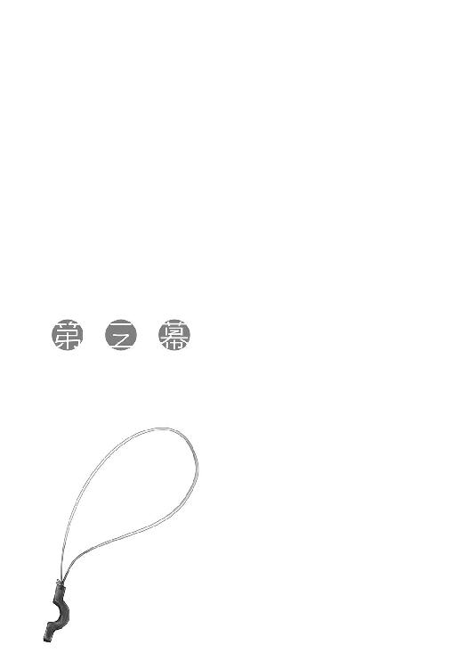
馬屋で久しぶりに相棒の鼻先に立った。
最初、相棒は面倒くさそうに飼い葉桶に顔を突っ込んでいた。それからおもむろに顔を上げ、今にもはちきれそうなくらいにまん丸な黒い瞳をこちらに向け、不満そうにぶるると鳴いた。
「素晴らしい働きでしたよ。その分、たくさん飯を食われましたが」
馬屋の主人は自慢の愛馬を紹介するような口調でそう言って、誇らしげに笑う。
馬は安いものではない。預けるなら、自分のもののように大切にしてくれるところが一番だ。
「そのせいで、残りの餌で何歩歩いてもらえるだろうかと、私はいつも駆け引きする羽目になります」
「なるほど。ならばあなた様は旅の途中でさえ、交渉術を磨き上げられるというわけですね」
寒い日が続く中、晴れた日の午後は誰だって機嫌がいい。
そんな軽口に軽く笑い合ってから、数日のうちに出発するのでもう他人には貸さないでくれ、と言っておく。
「それと、餌を目一杯食わせる必要もありません」
「そして、最後の精算の日に瘦せているとけちをつける魂胆ですね？」
冗談なのか、それとも不意打ちを避けるための盾なのか、おそらくは両方だろうが、ロレンスは軽く手を振って笑っておいた。
「残り数日、よろしくお願いします」
「ええ。よい馬の世話はとても楽しいですから」
主人と話している間にも、馬を貸して欲しいという者や、一日だけ預かってくれ、などとやってくる者が何人もいた。大抵は顔見知りらしく、慣れた様子で小僧たちが応対をしていた。普通の店ならば常連には主人が対応し、一見の客には小僧がつくところだが、馬屋はその逆になる。旅程によっては文字どおり自分の命を預けることもある馬を預けるのだから、一見の客こそ主人がしっかりと対応する。信用ができれば、あとは放っておいても再び足を運んでくれる。
所変われば品が変わるように、商いの仕方もそれぞれだ。
「さて、大きな準備はこんなもんか」
ロレンスが指折り確認すると、ホロは馬と正面から向き合っていた。普段は御者台から眺めていることが多いので、正面から向き合うのが珍しかったのかもしれない。
馬のほうもホロになにかしら思うところがあるらしく、互いにじっと見つめ合っていた。
馬屋の主人は二人で会話でもしているのかと笑ったが、もしかしたらそうなのかもしれない。
馬の前からようやく離れたホロが隣に並んでから、ロレンスは聞いてみた。
「世の情勢についてでも話してたのか？」
「む？ うむ。互いに質に入れられる身として大変じゃな、と慰め合ってきた」
行商人は道具が壊れても直し、ついには磨り減ってどうにもならなくなるまで使い、食べ物は硬くなろうがカビが生えようが腹が下るぎりぎりまで食べる。
ホロの場合は、一つの恨みで百の恨み言を言うらしい。
しかも、その元の恨みそのものがそもそも恨みですらない場合が多い。
ロレンスが嫌そうな顔をすると、ホロは楽しそうにロレンスの腕を取る。コルのことなど忘れてしまったかのように上機嫌だった。
「次はどうするんじゃ？ 食料かや？」
「食料はすでに当てをつけてきた。あとは燃料と、両替と、ナイフも研ぎに出したほうがいいかな......。まあ、お前が熱心になりそうな用事は残ってない」
それでつまらなそうな顔をするかと思えば、特に気にしていないらしい。食料については怒るかとも思ったが、軽く流された。
もっとも、敢えて調達しなくとも嗜好品の類はどっさり荷馬車に積み込まれている。いつもの荷馬車に積み替えたら、積み込まれる荷物を見て愛馬は呆れたようにいななくかもしれない。
このご主人は、またいい気になっているぞ、と。
「しかし燃料も両替も地図が届いて行き先をしっかり決めてからじゃないとな......どうする？」
「むう？ ふむ。まあ、本当はあっちこっち回って時間をつぶそうと思っておったんじゃが」
そう言ってからロレンスを見る琥珀色の瞳は、嫌味なくらい機敏に動く。
「宿に戻って戦線復帰じゃな」
わざと言っていることは理解できても、どこまで冗談かわかったものではない。エルサもエルサで理屈で動きそうな性格だから、ホロに狙われたら意固地に対抗心を燃やしかねない。
余計なことを言ったかもしれない、と若干後悔しているのだが、ホロはつい先ほどまでとは打って変わったさらりとした表情だった。
それを見たら、まあいいか、と思ってしまうので自分もまた病気なのかもしれない。
しかし、大事になる前にコルに耳打ちしておくべきだろうか。
そんなことを思っていたら、背伸びをしたホロに耳を引っ張られた。
「わっちの一途な思いの邪魔をするのかや？」
狼は思いのほか、執念深いようだった。
宿に戻り、ホロのあとについて階段を上っていると、外套の裾からホロの尻尾の毛先がちょろちょろと見える。機嫌がよかったりうきうきしているとすぐこれだ。巨大な狼の体であれば隠せていたのだろうそれらも、ホロの小さい体だと如実に現れる。最後の数段を軽く飛ぶように駆け上がったホロに、ロレンスはやれやれとため息をついた。
自分が思っていたことや言ったことが間違いだったとは思えないが、やはり不安を抱いてしまう。そこまで狙ってのホロの振る舞いなのかもしれないが、なにぶんにもエルサは頭が固い印象なので怖い。
それとも自分とホロの関係も、傍から見るとそれくらい危なっかしく見えるものだろうか。
自分の場合だけは大丈夫、という考えが危険なことは行商からよく学んでいるはずなのだが。
両腕を組み、廊下を歩きながらあれこれ考えてしまう。
ホロはさっさと先を歩き、部屋の扉に手をかける。
すると、行楽気分で楽しそうだった表情がはたと顔から消えた。
「どうした？」
ロレンスがそう尋ねるのと、階下から声をかけられたのは同時だった。
「ロレンスさん」
振り向けば、そこにいるのはル・ロワだった。
ホロは遊んでいるところに水を差されたような顔になってこちらに戻ってこようとしたが、ロレンスはそれを手で制した。
ル・ロワの顔一杯に、「一人でお願いします」と書いてあったからだ。
「先に戻っててくれ」
このあたりの察しのよさは、百戦錬磨の商人と変わらない。
やや不満そうな顔を見せてから、結局おとなしくうなずいた。
「さっさとしんす」
そうとだけ言って、くるりと回れ右をする。ぬし一人で大丈夫かや、といった類の嫌味な視線は向けてこない。コルとエルサのことで頭が一杯だったからか、それとも、多少は信用してくれるようになったからなのか。そんなことを考えながら階段を下りていく。
ル・ロワは申し訳なさそうに帽子を取って礼をした。
ぱたん、と遠くに聞こえた扉の閉じる音にちょっとした寂しさを感じつつ、「どんな御用でしょうか？」と切り出した。
「ええ、なんてことのない話なのですが......」
ル・ロワは言って、さらに階下に向かって指を向けた。下の酒場で話したい、ということだろう。
ロレンスは断る理由もなく、ル・ロワのあとについていく。ホロが歩く時にはなんの音もしなかった廊下や階段も、ル・ロワが歩くとみしりみしりと音がする。
王のほとんどが太っているのは、きっと見た目で存在感を増すためだろう。
一階の酒場は、時間が時間というだけあってほとんど人の姿はない。入り口に近い隅の席で、旅人らしき男二人がまずそうに酒を飲みながらひそひそとなにかを話していた。
ロレンスたちは彼らから最も離れた奥まった席に座り、宿の主人にぶどう酒を二つ頼む。
主人は気持ち悪いくらいに愛想がよい。ル・ロワはそんな主人とロレンスをたっぷり三度は見比べていたが、なにか尋ねてくるということもなかった。代わりに、テーブルの上のなみなみとぶどう酒が注がれたジョッキを見つめて、しばらくじっとしていた。
ようやく口を開いた時、ロレンスはぶどう酒に三度口をつけていた。
「デリンク商会とつながりがありますね？」
ル・ロワは、まるで怒られているかのようにテーブルの前で身を縮めて座っている。その上気弱そうな上目遣いだというのに、口調はちょっとした詰問調だった。
全てを計算して振る舞っているのだとしたら、相当な人物だ。
そして、全て計算してやっているとしか思えない。
食らいついたら二度と離さない。
そんな悲壮な感じを演出するのには、完璧な振る舞いだったからだ。
「尾行していたのですか？」
四度目の口をつけかけていたジョッキを下ろし、宿帳になにかを書き込んでいる主人のほうを見ながら言った。
ロレンスがアロルドの宿の前で偶然にもルッズ・エリンギンと出会ったあと、誰かが路地の隙間に身を隠したような気配を感じた。あれが気のせいでなかったとしたら、それは目の前のル・ロワだったのだろう。
「はい。ですが、エリンギン卿のほうを」
ロレンスは一応うなずいておくが、話をどれほど信用していいかはまったくわからない。
なぜなら、ル・ロワは元々エルサが治める教会の地下室に眠っている、異教の神々の話を記した書物を狙っているような人物だからだ。
テレオの村の窮地を救ったロレンスを抱き込めば、それを梃子に使ってエルサの口を割ることができるかもしれない、と考えていたって不思議ではない。
「理由をお聞きしても？」
ロレンスが尋ねると、ル・ロワは固唾を飲んでから答えた。
「金を借りたいのです」
あまりにまっすぐな物言いに、やや驚いてル・ロワを見つめ返してしまう。
緩急のつけ方が上手だ。
ホロを連れてきたほうがよかったかな、などとちょっと弱気なことを思ったりした。
「そのためにどうにかきっかけを作ろうと尾行していたところ、偶然あの場面に出くわしました」
言葉を保留して、ロレンスは別のことを考えている。
ル・ロワは、ロレンスにデリンク商会に口を利いてくれ、と頼みたがっているのだ。
「あそこは厄介な商会ですよ。そこで金を借りるというのは」
ロレンスがそこで言葉を濁すと、ル・ロワはもちろんだとばかりにうなずいた。
「わかっています。私も時折この町に来ては取引をしています。あの商会がどういうところか、理解しているつもりです」
元々ル・ロワはフィロンのようなやや怪しげなところと取引をしている。
聖人に説教をたれるようなものだっただろう。
そして、ル・ロワは案の定こんなことを言った。
「しかし、できるならああいうところで金を借りたいのです」
「ああいうところ？」
「はい。政治信条を気にせず、信仰心に揺さぶられず、利益のみを追求する。そんな場所でなければ借りられません。もっとも」
ル・ロワはそこで初めて不恰好に笑って、ぶどう酒を飲んだ。
きっとこの男は、よく磨いた真鍮製の鏡かなにかの前で、ひたすらに自分の振る舞いを練り上げたに違いない。
「なにも聞かず銀貨を千枚から貸してくれるようなところがあれば別なのですが」
ル・ロワは顔が大きいせいか、ひどく目が小さく感じられる。
その印象は、時として無邪気な小動物にも見えるが、今は無機的に獲物を狩る昆虫のように見えた。
銀貨千枚は、たとえにすぎないだろう。
この口ぶりでは、千枚ですむような話をしているとはとても思えない。
「確かに私はデリンク商会と多少面識がありますが、だからといって怪しげな話をつなげられるほど彼らの信頼を受けているわけでは──」
「トレニー銀貨三百枚お支払いします」
短く言って、言い終わると硬く口を引き結んでいる。
ロレンスはなにかを言い返そうとして、結局開きかけた唇の間から言葉は出てこなかった。
すぐ思いつく程度の反論には、全て答えを用意してきている感じだった。
銀貨三百枚の支払いとは、それくらいの金額だ。
ロレンスはしばし考えてから、こう言った。
「金で命を危険に晒すことは、もうやめました」
デリンク商会のようなところにへたな人間を取り次いで、万が一問題が起こればどうなるか、ロレンスは想像するだけで憂鬱な気分になる。
金額の多寡の問題ではない。
ぴしゃりとル・ロワに告げると、聡い商人は即座に別の選択肢を提示する。
「フィロンさんから、北に向かっているのだとお聞きしましたよ」
「っ」
と、ロレンスが天井を見た時には、勝負がついていたも同然だ。
ロレンスが天井からゆっくりと視線を下ろすと、ル・ロワの顔は馬鹿げた賭けに勝った博打打ちのようになっていた。
「鎖職人の言葉です。鎖というものは、一番弱いところ以上に強くなることができません」
ル・ロワがこの宿でロレンスたちを待ち構えていたのは、そういうことだったのだ。
ロレンスとホロが留守のうちに、エルサとコルを標的にあれこれ情報を聞き出していたのだろう。あの二人が気を利かせて口をつぐんだとしても、ル・ロワのような男を前に秘密を保てるとは思えない。
そして、きっとそもそもあの二人はル・ロワにさして警戒もしていなかっただろう。
そのことを示すように、彼は落ち着いた口調で語り出す。
「北の地に強い思い入れがある方たちなら、私のやろうとすることに少なからず力を貸してもらえるだろうと自負しています」
普通の商いでは聞かないような、ひどく持って回った言い方だ。それは言葉のみで聴衆を扇動し、なにか大きな者を打ち倒そうとする反乱軍の首謀者のようだった。
ル・ロワは、テーブルの下に引っ込めていた大きな手をテーブルの上に載せて丸く組む。それはまるで焼くのを待つばかりのパン生地のように見えた。
多分ここは、火を入れた竃の中なのだ。
せめてあとで後悔して顔を真っ赤に膨らませることのないように、と注意しなければならない。
「金を借りて......なにを買うつもりなのですか？」
ル・ロワが一番聞きたかったのは、ロレンスの口から出るその質問だったはず。
その言葉は、交渉の舞台に引きずり出せたことを示す。
にこりと笑うと、肉と肉の隙間の溝が、ル・ロワの顔に濃い陰を作り出した。
「禁書です」
短い単語は、ロレンスの頭をひどく冷たくする。
「禁制の技術を記した禁書です。私はそれを買い付けるつもりです」
目の前の書籍商は、傭兵たちに物資を供給するようなフィロンの雑貨商に出入りをする。
しかも彼はテレオの村のフランツ司祭のような傑物と取引があり、しぶとくその蔵書を狙っている。強欲だが、欲には忠実であり、正直である。
見栄や冗談や、つまらない詐欺とは思えない。
ロレンスは、聞き返した。
「錬金術ですか？」
目はしっかりとこちらを見つめたまま、相手は太い首を回して否定する。
「鉱山の採掘技術です」
札遊びなら、ロレンスは自分の手の如何にかかわらず勝負を投げ出す瞬間だった。
「デバウ商会が手に入れるとまずいことになると思います」
造船や冶金の分野では、時折革命的な知識の登場があると聞く。それはこれまでの全ての常識を引っ繰り返し、不可能を可能にするらしい。知識は武器であり、魔法の呪文である。それを手に入れれば、小さな鰯が巨大な鮫に化けることすらある。
そのため、そういった技術を記した書物や技術者の知恵は常に利用されるとは限らず、隠されたり消されたりすることもあると聞く。なぜなら、優秀なる王の頭脳は常に王冠と共にあるが、知識は綿毛のようにどこにでも飛んでいくからだ。
鉱山の採掘技術といった、特定の集団が直接的に莫大な利益を上げるようなものになると、そういう傾向はなおさら強くなるだろう。
ル・ロワの話を疑うことはできる。
しかし、もしも真実であり、なおかつその禁書に記される技術が革命的なものだとしたら、そんなものがデバウ商会に渡ればまずいことになる。
北の地の人間でそれを歓迎するのは、豊かな森や山よりも毛の長い絨毯を敷かれた屋敷を好む人間だけだろう。
そして、ホロは故郷の森の日だまりで昼寝をしたがるような性格だった。
焦りは禁物だ。
ロレンスは自分に言い聞かせてから、「詳しくお聞かせ願えますか」と言ったのだった。
「お返事をお待ちしております」
たっぷりぶどう酒を詰めた皮袋を無理やりひしゃげるように一礼して、ル・ロワは宿の酒場をあとにした。
残されたのは、半分以上酒が残っているジョッキが二つと、ロレンスだけ。
一人になったロレンスに気がついた店主がちらちらとこちらを見ていたが、ロレンスは無視して天井を仰ぐ。
ル・ロワの話を反芻したが、陥穽があるようには思えない。
レノスに流れ込む川は二つの源流を持ち、そのうちの一方がデバウ商会の根城へと続き、もう一方はプロアニアの北東地域に続いている。ル・ロワは、その北東地域のとある町の商会に、その本があると言っていた。聞いたところで明かす馬鹿もいないだろうから、どこのなんという商会かと質問はしなかった。
代わりに、どうしてそんな場所にそんな本があるのかと尋ねた。
ル・ロワは一言目に、「古い修道院がありました」と言った。
二百年からの歴史を持つ修道院が十数年前に落雷によって全焼した。ところが日頃からの敬虔なる評判を聞きつけ、ある領主の下で再建が始まった。その際に瓦礫を取り除いていたら、修道院長でも知らなかったような地下室への入り口が見つかり、中からは山ほどの蔵書が出てきた。その多くは古代の文字で書かれ、再建のために派遣されていた領主の代官はもとより、博識の修道士たちにも解読できなかった。結局遠方より博士と名のつく者たちを呼んで鑑定させ、多くはなんの本であるかを特定できた。
しかし、中にはそれでもわからないものがあり、そのほとんどが灼熱の砂漠の国で使われていた言語で書かれ、さらに数冊は非常に古い文字だった。それを読み解くには非常な手間がかかりそうだったし、そもそも見なれない灼熱の砂漠の国の文字は彼らにとっては不気味なものだった。仮に翻訳できたとして、万が一その本にとんでもないことが書かれていることがわかったら、修道院の権威が地に落ちしてしまう。
そんな考えが働いたのかどうか、結局それらの本は領主が再建資金の足しにと、好事家連中に売り払ってしまったらしい。その際、代官はまったく読めないながら、見よう見真似で表題らしきものをまとめた目録を作製していた。
それからまた数年後、その領主が修道院や教会への寄付にのめり込みすぎて家が傾いた際、ある商会が借金の形に宝物庫からめぼしいものを持ってきた。それらを一つ一つ選り分けているうちに、件の目録が出てきた。その商会にとってはなんの価値もなかったそれだが、書籍商たちならば価値がわかるかもしれないと思った。
そうして意見を求められたのが、ル・ロワだった。
南の地の書籍商たちの博識さは、博士たちの比ではない。博士たちは難解な書物についてその膨大な内容を一つ一つ精査しなければならないが、商人たちは表題と中身の概要さえ知っておけばいいからだ。博士が百年分の書物の内容を知っていれば、商人たちは千年分の書物の表題を知っている。
ル・ロワはその目録の中に禁書の題名を見つけ、即座にその羊皮紙を買い取って、可能な限りに網を張った。
そして、ついに世に散逸したうちの一冊が引っかかった。
わざと誰も読めないような文字で書かれたゆえに生き延びた、災いを呼ぶ技術の書。それがそれだとわからなければ、教皇を虚仮にした絵画だって枢機卿の家に飾られることになる。
ル・ロワは、流れ流れた先の商会がその本の価値に気がついているかは正直わからない、と言っていた。口ぶりから察すれば、気がついていないと祈っている、といったところだろう。
しかし、ル・ロワはお調子者のように見えるがひどく現実的な考えも持っている。
つまり、仮に今は商会が気がついていなくとも、自分が気がつけば遠からず他の誰かも真実に気がつくはずだ、と。
多数の人を介してル・ロワの下に情報が寄せられたのであれば、介した人の数だけル・ロワがその本を探していることが周りに漏れる。その話を聞いた勘のいい商人ならば、これはなにかある、と思うに違いない。
誰も求めないものは、道端に落ちている金だって気がつかれない。
ところが、誰かが求めるものは、この世に存在しなくたって見つかるものなのだ。
ル・ロワはさらに、当初はフィロンから金を借りる気だった、ということも明かしてくれた。
それがうまくいかなかったのは、ロレンスにも今ならわかる。
獣と魚の尻尾亭が山ほど投機のための買い溜めをしていたように、フィロンも同じことをやっていたのだ。そのせいで、エルサを商会の一室に泊めることもできなかった。倉庫のみならず部屋が全て一杯になるくらいに買い込んでいれば、まとまった金を貸せる余裕があるわけがないし、そんな余裕があるのならさらに買い込んでいたはずだからだ。
「話ができすぎと考えることは簡単だ」
呟いたのは、頭を切り替えるため。
デリンク商会に取り次ぐだけで銀貨三百枚であれば、本来は迷うことなどなにもない。
ただ、すぐにテーブルから立ち上がることができなかったのは、当然迷う理由があったからだ。
第一に、ル・ロワがデバウ商会に通じていないとは限らない。仮に通じていないとしても、手に入れた技術書を技術書として売ることにより、場合によっては北の地に悪い影響を与えるかもしれない。
つまり、技術書が内容もわからずどこかの好事家の書棚に収まっているのなら、そのままにしておいたほうがいい場合もあるだろう、ということだ。
しかし、もしもル・ロワの祈りも空しく、件の商会が技術書の翻訳に取り掛かっており、その内容の価値に気がついていたとしたらどうなるか。そう考えるのは決して突飛なことでもなければ、まったくありそうもないことでもない。本を手に入れれば内容が気にならないわけがない。翻訳されていないとすれば、単に順番待ちの列が長いだけだから、という可能性のほうが圧倒的に高い。
だとすれば、ル・ロワの話を信じる限り、可能な限り協力するのがいいようにも思えるのだ。
ただ、問題はそれだけではない。
ロレンスがル・ロワとデリンク商会とを仲介するということは、ル・ロワという人物の信用をロレンスが担保するということになる。人を紹介するというのは、その人物が信用に値するのを、紹介する人間が保証するということだからだ。万が一紹介した人間がデリンク商会に一泡吹かせようなどと企んでいれば、その責めは紹介したロレンスにも及んでくるだろう。デリンク商会の怒りを買うことは、想像だってしたくない。
もしもこの話に乗るのだとしたら、ロレンスはル・ロワが余計なことをしないように見張る必要がある。単純な金の持ち逃げだって、あり得ないことではないのだ。
そうなると、かなりの時間を割かなければならなくなることが確実だった。
現段階では、どこの町のどの商会に技術書があるかは聞けていない。それでも、小さい町の小さな商会ではないだろうから、大きな町と考えていいはずだ。そうなると、最低でも馬車で十日以上。可能性としては、片道だけで二十日近くかかるプロアニアの王都ということだって十分にあり得る。一ヶ月から、場合によっては二ヶ月を浪費する可能性があった。
その頃には冬の寒さも峠を越し、新たなる一年の始まりが告げられるだろう。
世の中が息を吹き返すように動き出し、雪解けの水でそこら中の水車が回り出す。
ロレンスもそんな季節の円環の中で暮らす行商人なのだ。季節を問わずのんびりしていられる貴族ではない。師匠から受け継いだ行商路は、芸術的な組み合わせで一年を費やすようになっている。ホロのためにヨイツを探すという酔狂をやっていられるのも、世の動きが鈍くなる冬をまたいでいるからこそともいえた。
ホロのためなら全てを投げ出したい。
そうは思いながら、本当にそんなことができないのもまた事実だ。
ロレンスは行商人であり、その決断はロレンスだけに影響を与えるのではない。
例えば切り立った岩山のせいで毎年の越冬が綱渡りのような村は、ロレンスがやってこなければ文字どおり岩にこびりついた苔を食べる生活を強いられる。
行商人は、そういうところでこそ必要とされている。
ロレンスが一ヶ月という時間を余分に費やすのは、彼らに一ヶ月食べ物を運ぶのを待ってくれと言うようなものなのだ。
そのことは、つまりロレンスはヨイツを目前にしてホロと別れることを結論づける。
「......」
ロレンスは目を閉じ、もう一度ゆっくりと考える。
ロレンスがホロと約束したのは、ホロをヨイツに連れていくこと。
あるいは、別れる時は笑顔で別れることだった。
決して、ホロの故郷を危機に陥れる全ての可能性を叩きつぶすことではない。そんなこと、ホロだって無理だと思っているはずだ。
ロレンスはため息をぶどう酒で飲み込んで、席を立った。
知ってしまえば手を出したくなる、とは、デバウ商会の企みに対して耳をふさいでいたユーグの言葉だった。知ったところでどうしようもないのなら、知らないほうが心穏やかにすごすことができる。
それはまったくの正論だった。
ホロと一緒に上っている時は気にならなかったのに、階段を上る際の軋み音がひどく耳に障る。きっと自分の顔も、こんなふうに軋んでいるに違いない。
ロレンスは自嘲気味にそんなことを思いながら、部屋の扉の前に立った。
軽く深呼吸をしただけでためらわずに扉を開け、同時に口を開こうとした。
それが驚きの形のまま固まってしまったのは、目の前の光景がいまいちよく理解できなかったからだ。
「......なにをしているんだ？」
ロレンスの質問に、ホロとエルサはちらりと視線を向けるだけ。
コルの目だけが感情一杯にロレンスを捉え、そしてそれは助けを求めていた。
「よそ見するでない」
ホロはコルの頭を指で押して、顔の向きをまっすぐにする。コルの真後ろに立ったホロは、普段は自分の尻尾を梳いている櫛でコルのぼさぼさの髪の毛を梳いていた。これから髪の毛でも切るのだろうかと思ったのは、コルが首の辺りからすっぽりと体に毛布を巻きつけられていたからだ。
そんな二人から少し離れた壁際では、エルサが手元を見ながら針仕事をしていた。コルが毛布を体に巻きつけていることからして、コルの上着だろう。手つきは丁寧で手なれており、時折確認のために布地を引っ張ったりしているが、いつものぼろとは思えない。
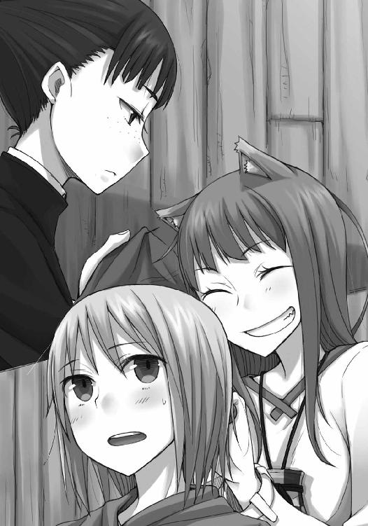
好意的に考えれば、ホロとエルサの二人がコルのみすぼらしさを見かねてあれこれやっている、ということなのだろうが、ロレンスはこの光景にちょっとした既視感を覚えている。
それは獣と魚の尻尾亭でのことだ。
ホロとあの看板娘に挟まれていた自分のことを、思い出していた。
「んむ。やはり毛並みを整えるだけで全然違うの」
いつもどこか埃臭そうだったコルの見た目が、確かに幾分こざっぱりとしている。ホロは得意満面の顔つきで、どうだ、とばかりに胸を張っていた。
しかし、次に口を開いたのはコルではなくてエルサだった。
「寝て起きればそれだけで変わってしまうものに大きな意味はありません」
神から真理を賜り、善を大衆に説く聖職者に相応しい言葉だ。
そんなエルサが手にしていたのは繕い終わったらしい服である。顔はいつもの無表情ながら、多少満足げにしているのがため息のつき方でわかった。
エルサは繕った服をコルに渡し、コルはそれをおどおどと受け取ってから身につけた。
「......」
と、二人分の沈黙が聞こえた。
一つは、見違えるようにしっかりとした自分の服に驚いたコルのもので、もう一つは、面白くなさそうなホロのものだった。
「どれほど上等のお酒でも、古い皮袋に入れたままでは破れてこぼれてしまいます。綺麗であることが大事なわけではありませんが、袋は可能な限りしっかりとしているべきです」
エルサの言うとおり、服をきちんと繕うだけで、みすぼらしく怪しげな放浪学生から、同じ貧しさを窺わせつつも、しっかりと働きそうな真面目な商会の小僧のように見えた。
「髪の毛ももちろんぼさぼさのままでは困りますが、これは服よりも移ろいやすいことです。そして、服でさえも、立ち居振る舞いと比べればさらに移ろいやすいものです。言葉遣い、礼儀作法こそ優先すべきことです。もっとも、それですらもしっかりとした信仰心と比べたらたゆたう波のようなものですが、その点は、心配ないと思います」
朗々と聖典の文句を読み上げるように喋るエルサは、最後だけコルに向かって柔らかく微笑みかける。ホロはぐっと怯んだまま、二の句が継げないでいる。コルを巻き込んでこんなことになっているのは、きっとホロが早速、エルサが言うような礼儀作法は大して重要ではない、とでも主張したからに違いない。
根がのんびりとしたホロからすればせいぜい毛繕いでもしていれば十分で、それ以上のことは気取る時にするようなことだと映るのだろう。ロレンスもどちらかといえば実用重視であるから、普段の生活ではホロの意見に与したい。
ただし、商いで汚い格好が不利になるとなれば、いくらでも手をかける。コルをほったらかしにしていたのは、正直に言えばロレンスの弟子ではないし、商いに絡まないからだった。
エルサはその点、多くの人間を助けようという信仰の僕であり、お節介ともいえる手助けを本分とする。分はホロに悪い。
ロレンスはつい先ほどまでの憂鬱な気分のことも忘れ、やれやれと苦笑した。
それから、自分からは引っ込みがつけられないだろうホロに声をかけようとした。
コルがホロのことを振り向いたのは、そんな頃合だった。
「髪を梳いてもらったのは初めてなんですけど」
コルは少し気恥ずかしそうにはにかんだ。
「とても、気持ちよかったです」
言われたホロのほうは驚いて目を丸くして、それからコル以上にくすぐったそうに笑い出した。コルに気を遣われてしまっては、エルサとの勝負は文句のない完敗ということだ。
「んむ、そうかや。ならばしごかれて辛い時はいつでもそう言いんす」
嫌味をはっきりと嫌味と受け取るエルサはやや気色ばんでいたが、ロレンスからすれば最後の無様な負け惜しみに見えた。実際にそうなのだろうというのは、言ってからくつくつと笑っているホロを見れば明らかだ。
ホロはコルの繕われた服をじろじろと見て、「しかし」と付け加えた。
「コル坊はよい雄になりそうじゃ」
「私の言うことをよく聞いていただければ、その予想は現実のものになります」
些細な反撃の機会も見逃さないのだから、エルサも意外に大人気ない。それでも大人気のなさではホロは他の追随を許さない。
エルサの言葉にべっと舌を突き出した。
エルサはそんな子供じみた振る舞いに、怒ったというよりも驚いていた。コルはくすくすと笑っていて、気持ちのうえではホロととても近い場所にいることがよくわかる。
ただ、コルは現実的な考えの持ち主だし、そうあるべきだ。そのためには、ホロよりもエルサの言うことを聞くのが正解だろう。
そんなことを思っていたら、ふと、ホロの笑顔にちょっとした寂しさが垣間見えた。それは見なれた賢狼の顔であり、心の中でロレンスと同じことを自分に言い聞かせているような顔だった。
ロレンスの言葉に背中を押され、ものは試しと早速開き直ってみても、とことんわがままに振る舞うことはホロにもできなかったらしい。
暴君になるには才能がいる。
ならば、普通の行商人にすぎない自分が現実的な判断を下したとて、なにが悪いのだろう。
そんな言い訳が聞こえたのかどうか。
ホロは頭を切り替えるように耳をピンと張り、くるりとこちらを振り向いた。
「それで、こっちのたわけは今度はどんな話を拾ってきおったのかや？」
そう言った時には、寂しさなど微塵も窺わせていなかった。さすがというほかない。あるいは自分の弱いところをきちんとわかっている人物がいる、という安心感かもしれないが、それはロレンスにとっても同じこと。ロレンスの雰囲気から、ホロもなんとなく話の方向は見えていたのだろう。
ロレンスを捉えるホロの赤みがかった琥珀色の瞳は、いつも以上に綺麗だった。
「神の采配としか思えないような厄介な話だ」
やや大袈裟に言うと、ホロは輪をかけて大袈裟にエルサを見ながらこう言った。
「だとしたらずいぶんと意地悪な神様じゃな」
コルの笑顔は引きつり気味だったが、エルサも単なる女の子ではない。
そよ風のようにホロの言葉を受け流して、涼しい顔で静かに言った。
「そう感じるのは心が貧しいからに他なりません」
ホロの尻尾の毛が、むっと膨らむ音が聞こえたような気がした。
ロレンスは気の強い二人を笑いながら、「お話ししてよろしいでしょうか？」と間に割って入ったのだった。
ル・ロワの話を、ロレンスの私見も交えて伝え終わると、若干重苦しい沈黙が部屋に生じた。
その中心は、当然ホロだった。
「この話に付き合うこと、それ自体は可能だ。ただ、そうなると時間的に限界だ。お前は、一人でヨイツを目指すことになる」
賢狼と呼ばれたホロは、答えに窮していた。
ル・ロワの話に乗れば、最悪の可能性を除去できるだろうし、話の真偽を確認できれば安心もできるだろう。しかし、その対価はロレンスと北に向かうのが時間的に苦しくなることだ。
逆にその話を無視すれば予定どおり北に向かえるが、不安が残るし、その不安が形になると悲惨なことになるのが目に見えている。その上、あの時ああしていればといった後悔が今から予想できる。
時間が巻き戻らないことの辛さは、誰よりもホロがよく知っていることだ。ホロはロレンスのことを見ずに、じっと床を見て、眉根に皺を寄せていた。
要はある土地に一緒に行くか行かないかのそれだけのこと。それでも、ロレンスはホロとの約束を果たすためにたくさんのものを懸けてきた。
ホロがロレンスのことを見ないのは、見てしまったら答えが決まってしまうからかもしれない。賢狼たる者情に流されず考えを巡らせなければならないと、そんな意地を張るように、決してロレンスのことを見なかった。
ロレンスはホロに声をかけたかったが、あくまでも結論を下すのはホロだ。
それに、そうであればロレンスにはホロの答えが見えていた。信じていた、と言ってもいい。
だから、ため息をついて顔を上げたホロを見て、一瞬頭が混乱してしまっていた。
「実のあるほうを取るしかないじゃろう」
疲れたような笑顔と、さばさばした口調。
ホロが何度も見せてきた、賢狼の顔だ。
ロレンスは、驚きのあとにわずかな怒りを感じてとっさに口を開く。
「それは──」
しかし、ロレンスが問いかけようとすると、ホロにきつい視線で口を封じられた。
直後に緩んだホロの顔は、一緒にヨイツに行きたいのは山々だ、とも言っていた。
「ぬしとの約束はヨイツにまで連れていってくれることじゃった。確実な道案内をしてくれればそれをもって契約完了としてもよい。ぬしと一緒に行くかどうかは、感傷的な問題にすぎぬ」
対して、ル・ロワの話はとても現実的な話だ。
賢狼でなくたって、いい大人ならば一時の感傷になど惑わされず合理的に動くべきである。
それはまったく正しく、ロレンスが常日頃商いで心がけていることでもあった。
それでもなおロレンスがホロの言葉に衝撃を受けたのは、ロレンスにとってはまさしく感傷的な問題だったからだ。
「それに、もう一つあったじゃろう？」
「もう一つ？」
ロレンスが聞き返すと、ホロはコルとエルサをちらりと見てから、「ほれ、あれじゃ」とちょっと楽しそうに言った。
「わっちゃあぬしに借金がありんす。覚えておるかや？ ぬしはひどい剣幕じゃった。その金を取り立てるために地の果てまでも追いかけてやる、とな。げに欲深きは商人じゃ」
ホロの言葉の真偽を量りかねていたエルサとコルは、ロレンスの苦りきった顔を見て驚いていた。
そんなこと、とっくの昔に忘れていた。
「あなたという方は......」
驚きのあとにエルサの顔に現れたのは、怒りと軽蔑の色だった。
借金で人の身を縛るのは、事情がどうあれ許されることではない。
ましてやそれが身内ともなれば、エルサの目からすればロレンスは守銭奴以外の何ものでもないだろう。
「いえ、これには事情が......」
「んむ。じゃが、今度の儲けで清算してくれれば、そこの石頭も、石頭の神様も、許してくれるじゃろうよ」
ホロが言うと、エルサは不満げにホロのことを見る。
しかし、にっと牙を見せて無邪気に笑うホロに、それ以上なにかを言う気をなくしたらしい。
呆れるようにため息をついて、「神よ我が無力をお許しください」と祈っていた。
「そういうわけじゃ。近くとも馬車で十日だったかや。ま、あれだけたくさん酒と食べ物があれば、楽しくやれるじゃろ」
木窓のほうを向いて、ホロは暢気な様子でそう言った。
そんな様子を見ながら、ロレンスは言葉を飲み込まざるを得なかった。
飯と酒さえあれば、ヨイツを前に別れても、笑顔でいることができると本気で言っているのだろうか。ロレンスはそう問いたかったが、問うたところでどうなることでもないのはわかっていた。
ロレンスと一緒にヨイツに行くかどうかは、一片の曇りもなく感傷的な事柄にすぎない。
なにより、ホロはいつだって別れ際に笑うことができる。
無理に笑うことに関しては、慣れたものなのだから。
「ほれ、そうと決まれば話を受けてきんす。よそに取られては目も当てられぬ。せめて確実な利益を手にしてこその、ぬしがいつも言う商人なのじゃろうからな」
無理をしている、というのがロレンスにはよくわかった。
けれどもホロは、ロレンスがよくわかっている、ということだけで満足しているようにも見えた。恥ずかしげに笑う顔は、そんなに気を遣わんでくりゃれ、という言葉と共に見たものだ。
ホロは心底わがままには振る舞えない性格なのだ。
ロレンスが背中を押してさえ、ホロの弁を借りればけしかけてさえ、コルの取り合いは自ら身を引いた。
恥ずかしげな顔は、自分の損な性格を呆れているのかもしれなかった。
ロレンスは、うなずくしかない。
「そうだな、せめて有終の美を飾ろう」
気の利かない商人にしては綺麗な台詞が口にできたと思う。
けれども、ホロは途端に不機嫌そうな顔になった。
「ぬしはどうしていつも辛気臭いのかや」
「えっ」
コルが申し訳なさそうに苦笑する。
ため息をつくホロに、ロレンスもまた、笑うしかなかったのだった。
ロレンスは上着を羽織り、木窓から表の通りを覗き見る。通りはまだまだ人であふれているが、もう少しで夕刻の祈りが教会では始まるはずだった。
ただし、教会は朝が早いので夜も早い。そのせいで、日が暮れるのが早い冬であっても夕刻というには若干はばかられる感じがある。ちなみに市場が閉まるのは、その夕刻の祈りの終わりを知らせる鐘が鳴ってからだ。商人たちは、まだまだ元気一杯に町を駆け巡っているだろう。
そうなればル・ロワがじっとロレンスたちからの返事を待っている保証もないし、ホロが言うとおり話をよそに持っていかれては目も当てられない。
話を受けると決まれば、ぐずぐずしている暇はなかった。
「あれ、来ないのか？」
準備を終えて振り向くと、ホロは未だにベッドの上だった。
「わっちゃあ賢狼じゃからな。いちいち些細なことで走り回ったりはせぬ」
のんびり尻尾の毛繕いをしながら言う様は、確かにあくせく働く類のものではない。
ロレンスはなにかを言う気力もなくコルに視線を向けようと思ったのだが、ロレンスが視線を向けるよりも早くに、ホロの言葉が割り込んだ。
「コル坊はわっちと留守番じゃろう？」
エルサが夕刻の祈りに参加すると言って部屋を出ていったので、コルも外に出ればホロは一人になる。
それを嫌ったということもあるだろうが、ほとんどのところは、単純にようやくコルを独り占めできる機会にありつけたからだろう。エルサを前にしては勝ち目がない。そうとわかれば、ずるい賢狼は敵の不在を狙うのみ。
コルはロレンスとホロを見比べて、ロレンスのほうに申し訳なさそうな顔を向けた。
「そうだな。知らない奴が来ても扉を開けないように、勝手に買い食いをしないように、どこかに行く時は宿の主人に言伝を残しておくように、ホロのことを任せてもいいか？」
せめてそんな嫌味を言っておく。
コルはホロを気遣いながら笑っていたが、当のホロはそよ風ほども気にしていないふうだった。まったく可愛げのかけらもないが、今に始まったことではない。
ロレンスは部屋を出て、階段を下りる。
人通りの多い道の左右を見回して、少し考えてからフィロンの店の方向に歩き出した。
ル・ロワがどこかに出かけている可能性は十分にあったが、連絡をつけるにはフィロンの商会が一番手っ取り早い。
それに、ヨイツに向かうことがほとんど不可能になりつつあっても、北の地に向かう可能性はきちんと考慮しておかなければならない。
できればいざ向かわんとしたうえで話を聞きたかったのだが、とは、町のどこからでも見える教会の尖塔を見ながら思ったこと。この町の中心部分であり、この時間ならばエルサのように信仰に篤い者がぞろぞろと集まっているところだ。
町の中で敬虔な人間かそうでないかを見極めるには、市場が閉まるまで商いをしているかどうかを見ていればいい。敬虔な人間は、いつまでも商いをしていないで市場が閉まる鐘の前に店をたたみ、いそいそと教会に向かう。
時折、神に忠実なのではなく、酒の香りに忠実な者たちもいるが、心安らかに暮らそうと願っているのは共通のことだろう。
祈りで救われるか、酒で救われるかの違いだけだ。
ロレンスがフィロンの雑貨商につくと、フィロンとル・ロワの二人は飲み物を片手に雑談を交わしているところだった。
ル・ロワの反応は素早かった。歴戦の商人なので、ロレンスの表情を見た瞬間にわかったらしい。
「お話を受けさせていただきます」
通常の所作が大袈裟なので、こういう時に静かな反応を見せるのは逆に印象深く見せる効果がある。まったくずるい商人だ。
ル・ロワは感極まって言葉が出ない、とばかりに、ゆっくりとロレンスの手を取った。
「神の思し召しを二度も取り逃がすのかと、諦めかけていました」
ル・ロワの喜びようは、その全てを演技だとも思えない。
地を這う商人たちに不足しているのは、度胸でも知恵でも運でもなく、その多くはたっぷりの資金なのだから。
「意外だな。俺の勘も鈍ったか」
そんな言葉は、二人の握手を遠くから眺めていたフィロンのものだった。
大きな台帳を開き、立派な羽根ペンで書き物をしている姿は公証人にも見える。
ともすれば商人よりも約束事を重んじる傭兵相手の商売だから、そのあたりに関しては公証人も顔負けの誠実さが滲み出ているのかもしれない。
「女、子供連れでそんな危険を顧みないとはね」
「ですが、これが最後になりそうですから」
フィロンはロレンスの言葉に皮肉げな笑みを浮かべ、軽く首をかしげていた。
「この店を出ていく傭兵連中はいつもそんなことを言ってるな」
ロレンスも笑っておく。
そんなことになればいいな、という子供じみた希望を含んでのものだ。
「いや、しかし、本当にありがたいことです。フィロンさんに口利きを頼んでも、まったく話すら聞いてもらえない」
ル・ロワはようやくいつもの大袈裟な身振り手振りを再開する。
大きな羽根ペンで優雅に何事かをしたためていたフィロンは、少しの笑みもまぜずに嫌そうな顔をして、言った。
「馬鹿を言え。傭兵相手に商いをする俺が、奴隷商のデリンク商会と口を利いているところを誰かに見られてみろ。一体どんな悪事が進行しているのかと、敬虔な聖職者でなくたって疑うだろうよ」
町に住み、一つの場所で商いをする者たちは、常に監視の目に晒されているのと変わらない。
しかも、一度失態を犯しても商いの場所を変えればそれですむ行商人とは違い、その汚点がずっとついて回ることになる。だから酒場に薬商の人間がやってくることはないし、天秤を作る職人が両替商と仲良くすることもない。酒に混ぜ物をしているのかと勘ぐられ、天秤に細工をしているのかと疑われるからだ。
「その点、私たちは万全ですね」
ル・ロワはその太い腕をロレンスの肩に回してくる。
実際、ル・ロワがロレンスに声をかけてきたのは、それが理由の一つだったはずだ。
どちらも失敗すれば最悪尻尾を巻いて逃げればどうにかなる。しかも資金繰りを頼むのは町に対する体面など今更気にしない奴隷商人だった。
フィロンがやれやれとため息をつきつつも、口元に若干の笑みがあったのは、そんなロレンスたちのある種の自由さを羨ましく思っていたのかもしれない。
人は旅に出れば不安がるが、町の中では息苦しさを感じるという。
全てがうまくいくことなどなく、だからこそ人は前に進もうと頑張るのかもしれない。
「しかし、本当にありがたいことです。よく決断してくださいました」
「私の責任でデリンク商会にご意向を取り次ぎましょう。ただし、聞き入れてもらえるかどうかまではわかりません」
ル・ロワは即座にうなずいた。
しかし、そこは無知でも無垢でもない書籍商のこと。
すぐにこんな言葉を向けてくる。
「聞き入れてもらうのではなく、聞き入れさせるのです」
ル・ロワが胸を張ると、それは巨大な鳩のように見える。
「差し入れる担保にだって自信がありますからね」
圧倒されつつロレンスがうなずくと、ル・ロワはふっと胸を膨らませていた息を吐き、静かな調子でこう言った。
「ところで、ここで話をしたら、フィロンさんに抜け駆けされる可能性がありませんかね」
フィロンは目だけをル・ロワに向ける。
口元ははっきりと笑っていた。
「そんな発想はなかった。斬新だな」
ホロが見たら笑い、コルが見たら困惑し、エルサが見たら嫌そうな顔をするだろう見え透いたやり取りだ。
ル・ロワはうなずき、ロレンスに向きなおる。
「ここでお話ししてもよろしいですか」
ロレンスに断る理由はない。
ゆっくりと、うなずいたのだった。
フィロンが自分の仕事をするのを横目に、ロレンスたちは早速打ち合わせを始めた。
「プロアニアの王都エンディマの近くに、キッシェンという町があります。書籍はそこの商会にあります」
ロレンスはその町の詳しい場所を知らなかったが、名前くらいならば聞いたことがある。ただ、エンディマといえばここから馬車で優に二十日はかかる。ル・ロワをデリンク商会に紹介すれば、彼を見張るなりしなければならなくなるのはおそらく間違いない。彼を紹介したあと、不穏な動きを取られては、紹介者である自分の首をも絞めることになるからだ。
そうすると、やはりこの話に乗れば一ヶ月から二ヶ月は消費する。
話がうまく終わっても、ロレンスはそのまま南に向かわなければならないだろう。
「私は仕事柄好事家の方々の動向を、あらゆる伝を使って調べておりますからね。その伝をたどって、砂漠の国の文字で書かれた本の所在を片っ端から聞き集めていたのです」
「よく異端の嫌疑をかけられませんね」
驚き半分、牽制半分で聞くと、ル・ロワは笑顔の下の本性をちらりと垣間見せて、黒い笑みを浮かべる。
「蛇の道は蛇ですよ。このぶどう酒はまぜものがしてあるに違いない、と言って検査官殿は酒をごぶごぶと飲む。つまりはそういうこともあるのです」
「なるほど」
邪魔をして悪かった、とばかりにロレンスは手でル・ロワに先を促した。
「私の感触では、少なくとも情報が得られたこの間の夏頃までは、商会が書籍の価値に気がついているとは思えませんでした。元々その商会の主は冒険譚が大の好物で、特に暑い国の話が大好きだったらしいのです。私にそのことを教えてくれた旅芸人は、その一環で集めたのだろうと、手紙に書き添えていました。価値に気がついていないのだとしたら、多分、件の書籍は翻訳待ちの長い列の中にあるのでしょう」
単なる思いつきではなく、非常にありそうな説明だ。
ル・ロワは見た目のように大雑把でもいい加減でもない。
分厚い書物に記された、整然たる文字の羅列のごとくに、細かく、そして合理的な思考の持ち主だ。
「我々が買い付けるに当たって問題点は二つ。一つは、どのように買い付けるか。もう一つは、どのように資金を運ぶか」
「一つ目は、実際に町に行くしかないでしょう。我々は、支店や、優秀な部下を持っているわけではありません」
ル・ロワはロレンスの言葉に素直に笑う。大商会の主人ならば、買い付けのためにわざわざ現地に赴く必要などない。
「私も少なからず自らの足で稼ぐ人間ですから、まったく同意見です」
「二つ目においては、為替が順当だと思いますが」
商人が編み出した、頑迷な教会の人間ならば魔法だと言って眉をひそめるような方法のうちの一つ。
遠く離れた町同士で、重い現金を危険を冒して運ばずにすむ、奇跡の方法だ。
例えば、ケルーベにあるユーグの商会と、フィロンの店が話をつけてあるとする。その時、ロレンスはケルーベのユーグの商会に現金を持ち込み、為替証書というものを受け取る。それから、川をさかのぼってレノスまでやってきて、その為替証書をフィロンへと渡す。すると、フィロンは証書に書かれた金額をロレンスに支払う。これでロレンスは、重い現金を運ぶことなく、ケルーベからレノスに金を運んだことになる。
これが為替の仕組みだった。
「やはりそうですよね。どちらかの持ち逃げも防げますし」
ル・ロワは自嘲気味に言うが、そんな可能性を防ぐことができるのも、為替のよいところだった。
為替は特定の商会が特定の商会に振り出すもので、文字が読めない山賊たちが手に入れても価値がわからない。また、ロレンスなりル・ロワなりが裏切って換金しようとしても、但し書きを添えることで抜け駆けを防ぐこともできる。
「ただ、問題は、少なからぬ金額になるであろう為替証書をきちんと現金に換えられるかどうかです。長い距離を往復して証書を運んでいって、換金できませんでした、では困ります」
問題は、ここだった。
便利な道具であっても完璧ではない。
もしもキッシェンにある為替の振り出し先の商会が為替証書を金に換えることを拒んだら、ロレンスたちは紙切れを手に途方に暮れてしまう。例えば今のレノスと同じように、キッシェンで極端な貨幣不足が起こっていれば、払う気があっても払うものがない場合だってありうる。
為替の仕組みが存在してもなお、危険を顧みず頑固に現金にこだわる商人がたくさんいるのは、そういった不運な出来事に直面して、痛い目を見たことがあるからだ。
金額が大きくなればなるほど、この問題は無視できず、根深くなる。
「その点は、デリンク商会に確認を取ればよいでしょう。でも、危険を分散させるために、いくつかの商会に振り出し先を分けたほうがよさそうですね。もしもキッシェンがエンディマに近いのでしたら、王都にあるいくつかの商会にも振り出せばいい。デリンク商会なら、付き合いのある商会がたくさんあるでしょうから」
「確かにそのとおりです。では、大まかな枠組みとしては、ロレンスさんと同意見ということですね」
わかりきったことの確認のようだが、わかりきったことと思っていることこそ、確認しないとあとで痛い目を見ることがある。現金しか信用しない者と、証書しか信用しない者が手を組めば、混乱するのは目に見えている。
そして、どちらを信用するかは理屈ではない。
多くは経験であり、理屈を超えたところに根拠がある。
「デリンク商会とは二度と関わり合いたくない、なんて一度は真剣に思ったのですけどね」
住む世界が違う、とはああいうことをいうのだとロレンスは今でも思う。
デリンク商会や、あるいはエーブなどといった者のことを思うのは、羨望と呆れが入りまじった不思議な感情を呼び起こす。
ホロが側にいれば、くすぐったそうに、たわけじゃな、と笑ったことだろう。
「二日酔いの朝に、似たようなことを何度も思いませんか」
そのとおりだ。
ロレンスは数少ない木窓のほうに視線を向ける。
そこから差し込む明かりは、日暮れまでにいましばしの猶予があることを示していた。
「嫌なことは早くすませたい性分なのですが」
デリンク商会は教会の鐘に縛られるような商いはしないだろうし、なにより明日になったらデリンク商会に行かなければならない、と思いながら眠りたくない。
しかし、ル・ロワは即座にこう答えた。
「左様ですか。私は好きなものから先に食べる性格なのですが」
ロレンスがテーブル越しにル・ロワを見ると、まん丸な顔は嫌味ったらしいくらいに笑顔だった。ル・ロワのような商人にとっては、気難しい連中相手の交渉こそ、望むところなのだろう。
「あ、ところで」
と、ロレンスはふと思いついて、尋ねていた。
「私がデリンク商会に口を利かなかったとしたら、ル・ロワさんはどうするおつもりだったのですか？」
せっかく話がまとまったのに、今更そんな可能性の話をするのはどういう魂胆か。
ル・ロワはちょっと嫌そうな顔をして顎を引く。
あるいはどうするつもりもなく手詰まりだった可能性もあるが、結局答えたのはそんな様子を傍から見ていたフィロンだった。
「そうしたら、あんたと口を利かなくなるだけだ、とさ」
茶化すように言ったフィロンの言葉は、ホロの口から出たのかと思うくらいに、的確だった。
質素なところは同じだが、フィロンの店とは明らかに違う店構え。細かいところにこそ装飾が施され、目につかない石組みこそ髪の毛も挟まらないほど綺麗に組まれている。
大きな商会がいくつも軒を連ね、ため息が出るほど立派な建物が立ち並ぶ中で、決してひけをとってはいない。
デリンク商会の中がひどく静かなのは、そんな雰囲気に圧されて外の喧騒すらが尻込みしているかのようだった。
「これは嬉しい。ぶどう酒のお誘いに応じてもらえるとは」
ルッズ・エリンギンが低く笑いながら言う。
デリンク商会は四人の人間が同格の主人を務めるという一風変わった商会だ。
ただ、他の三人は別の仕事があるのか、広い部屋にある立派な四つの椅子には、エリンギンだけが座っていた。
「それに、ご友人まで」
自分が知っている人間の中で、友人を紹介したくない相手を選べと言われたら、必ず三本の指に入るだろう。エリンギン自身、もちろんそんなふうに周りに見られることを了解しているだろうし、どちらかというとそれを楽しんでいる感じすらある。
自分の言葉に自分で笑い、「おかけください」とロレンスたちに椅子を勧めてきた。
ロレンスが商会の主ならば、もったいなくて客人には座らせないような立派な椅子だ。ル・ロワの巨体を乗せても、みしりともいわない。
「今日はお一人なのですね」
圧倒的な力を持つ相手との交渉は、可能な限り単刀直入にするのが定石といえる。力の差が歴然としているなら、会話をすればするほど自分に不利に働くからだ。賢者が黙して語らないのは、口を開いてもなお賢者でいることがとても難しいからに他ならない。
ただ、ロレンスは緊張から、ついそんな世間話めいたことを言ってしまっていた。
「ええ。『仕入れ』でもなければ四人揃うことはあまりありません。基本的に、この部屋に通すのは知人だけですからね」
「恐縮です」
ロレンスの言葉に、テーブルの上で組まれていたエリンギンの親指が、左右の上下を入れ替えられる。
「恐縮される必要はありません。ケルーベでのお話、聞き及んでおりますからね」
そんな言葉を、相手を威圧するような表情すら見せずに言ってのけるのだ。
お前のことは調べ尽くしているぞと、さもそれが当たり前のことであるかのように。
エリンギンはにっこりと笑い、言った。
「我々のような人間が生き延びるには、少ない原則を守りさえすればいいのです。その原則とは、縁のあった人物のことは徹底的に調べ上げる。そして、商いを広げる時は、必ずその縁をたどって行うこと」
ホロが側にいたら、きっと足を踏まれるか蹴られるかしていただろう。
世間話のつもりが、いつの間にか本題に入り込んでいた。
エリンギンの言葉は、調べ上げた知人であるロレンスからの話ならば、聞く耳を持つ、ということを意味している。
「ふふ。今日はまだ牙を見せてはくれないようだ」
いいようにあしらわれていることに気がついたロレンスを見て、エリンギンはやはり楽しそうに笑う。
「自信を持ちなさい。ロレンスさんは一度我々を瞠目させ、かつ、あの女の企みに乗せられて生き延びた。それどころか、川を下った先では見事一矢報いたと聞きます。自らを卑下することも、我々を過大評価することも正しくありません。あなたと我々では、単に使う武器の種類が違うだけなのです」
褒めるのはタダ。頭を下げるのもタダ。
隣に座るル・ロワなら、一も二もなく賛成してくれるだろう市井の商人の大原則だ。
それでも、目の前に座るのは町の役人から卿と呼ばれ、どうにかして機嫌を取れないかと気を遣われるような人間だった。
発言や振る舞いに責任を持つことを、きっと誇りにしているだろう。
「ありがとうございます」
商人の笑顔ではなく、素直に笑ってそう言った。
エリンギンの目がすっと細められる。
「では、ご用件をどうぞ」
濃い霧の中、薄氷の上を進むような試験には合格できたらしい。
ロレンスは、ル・ロワにたすきを渡す。
書籍商は背筋を伸ばして、大きく息を吸ったのだった。
「禁制の技術書」
エリンギンは短く繰り返し、じっとル・ロワを見つめた。
愛嬌のよさを武器にする書籍商も、この時ばかりは真剣な顔つきだった。
「三十四年前の第二回レメノン公会議で禁書指定されたものの写本だと思われます。原典は焚書処分。書き手の技師は幽閉されてそれっきりと記録にはあります。我々書籍商の間では、草稿を持って逃げ延びた弟子が写本を作ったという話がありました。しかし、真偽のほどは確かではありませんでしたし、その話を利用して山ほどの詐欺が横行したと聞きます」
写本や注釈書の存在は、いつだって詐欺に使われる。
コルが引っかかり、学術の都アケントを逃げ出す羽目になったのも、注釈書を使った詐欺だった。
「それが、今回はそうではないと？」
「はい。詳細は先ほどご説明したとおりです」
修道院での発見のくだりから、旅芸人の一座から寄せられた手紙まで、ル・ロワは淀むことなくすらすらと述べた。
それはある意味流暢すぎるほどだったが、詐欺にせよ真実にせよ、熱意だけは本物といえた。
エリンギンはじっとル・ロワを見つめてから、おもむろにロレンスへと視線を向けた。
「ロレンスさんは、この話の真偽のほどをまだ知らない。ですよね？」
「ええ」
「内容からして、疑ってかかるべき危険な話です。仲介するには......それなりの覚悟がいったでしょう？」
やや冗談めかした物言いに、ロレンスはうなずき、短く言った。
「私は私が知る人から、こちらの方のしたたかさを聞かされておりまして」
こずるいとか、目端が利くとか、若干否定的な意味合いのしたたかさだが、その実、それは清濁併せ吞んでも目的を遂げるという強さを内包する言葉だ。
エリンギンは小首をかしげて口元だけで笑う。
ル・ロワは、厳しい顔のまま、苦しそうに汗を拭った。
「お金、ではありませんよね」
エリンギンの目は閉じられ、記憶を探るようにややうつむきがちになっている。
思い出しているのは、きっとレノスの町が騒乱の最中にあったあの日の出来事だろう。
あの日、ロレンスはエーブに持ちかけられた巨額の儲け話を蹴って、この店に戻ってきた。
他ならぬホロを、取り戻しに来たのだ。
「北の地に強い思い入れがあります」
ル・ロワの言い回し。
エリンギンは歯を剝いた。
呆れ顔にも見える笑顔だった。
「私のような商いをする身には、耳が痛い言葉です」
フィロンがデリンク商会に口を利きたくなかったのは、ここが他ならぬ奴隷商だからだ。
傭兵の収入源には大きく分けて二つある。
略奪品と、奴隷売買。
給金は勘定に入らない。
給金は払われるかどうか定かではなく、払われたとしても最初の募集の時にわずかの額だけ。それでも彼らが常に雇い主を得て戦うのは、略奪のための大義名分を得るためだ。
ロレンスはたとえ遠まわしでも、北の地のためになると思ってこの商会にル・ロワを紹介した。しかし、その間にデリンク商会はデバウ商会の企みと北の地の騒乱から、きっと巨額の利益を引き出すだろう。
一体何人の捕らわれた人間が奴隷として売りに出され、彼らの故郷が焼き払われることになるのか、ロレンスにはまったく見当もつかなかった。
「ですが、悩むのは賢者の役目。正すのは聖職者の役目。我々の役目は、人々の必要を満たすことでしょう。だとすれば、ル・ロワさんは一体誰の必要を満たすために？」
交渉がまた一歩前進した。
ル・ロワはすぐに咳払いをし、答える。
「ラオンディール公国にニコラス卿という方がいらっしゃいます。禁書でないと......その、燃えない、という性質の方です」
エリンギンはそんな表現の仕方に声なく笑い、咳をするように握り拳を口に当てる。
奴隷商であれば、顧客の信じがたい要求のことでも思い出したのかもしれない。
「いや、失礼。ただ、そのニコラス卿でしたか」
「はい」
「我々の顧客名簿......ここのことですが、ここにはありません」
こつこつ、とこめかみの辺りを叩く。
「その人物が果たして本当にいるのかどうかは別として」
その瞬間、ル・ロワは勢い込んで説明しようとするが、エリンギンに手で制される。
その人物が本当にいるかどうかなど、大して気にしていないようだった。
では、なにを聞こうというのか。この話の真実味をいくらかでも補強しようと思うのなら、説明を聞かずにどうするつもりなのか。
ロレンスの心にあったのは、純粋な好奇心。
エリンギンが、鋭く言葉を放つ。
「いくら儲けるおつもりですか？」
商人は基本的に自分の儲けのためにのみ邁進する。
だとすれば、聞くべきはそこなのだ。
計画を練る場合は、足元から固めていく。それから、儲けを考えない商人もいない。
面白いのは、計画段階ではどれほど冷徹な商人でも、いざ儲けを予測する段になると途端にものが見えなくなってしまう点だ。その儲けというものは、時には異常に多く、時には異常に少なく勘定される。
計画が大きければ大きいほど、予想したものと実際のものとは大きくずれると聞いたことがある。それはどうあがいても人はそこまで冷静になれないからだ、と師匠は言った。
ル・ロワがなにか別のよからぬことを考えていたら、きっと妙な金額を言う羽目になる。
儲けのために計画を練る者は利益を夢想して、噓をつくために計画を練る者は計画を夢想する。
そして、噓をつく者は自分の噓を信じて儲けを夢想などはしない。
「リュミオーネ金貨にして」
しかし、ル・ロワははっきりと言った。
「百二十枚で売るつもりです」
「アライン国王妃の外套がそれくらいだと聞いたことがありますね」
数字の根拠は？ と問うているのだ。
「この手の市場は見栄と推測で満ちておりますが、聞き及んだ話では、錬金術師アラン・ミハイエルの記した書物、『神と鉄の心臓』がリュミオーネ金貨百枚ちょうどで売れたそうです。私は、それを下ることはない、と確信しています」
たかが書物に信じられない値段だった。
ただ、客観的に見るのなら、馬鹿げた買い物をして馬鹿げた儲けを狙う人間としてひどくありがちな雰囲気があった。
エリンギンはまばたきもせずにじっとル・ロワを見つめていた。
ようやくその瞳が閉じられた時、ル・ロワは大きく息を吸った。
「担保に差し出した書物の額が」
「一流の書籍商に見せれば、必ず金貨三十枚はいけます」
ル・ロワはこの話の最初に、一冊の書物を差し出していた。大きくはあるが、装丁としてはひどく地味で、大きな書棚に飾るとしても、下の段の隙間を埋める程度にしか使えないような本だった。
ロレンスからすればなんの価値もなさそうなものだが、その値段はロレンスの夢である町に店を構えるための資金にあと一歩というものだ。上には上があるといっても、あまりにも上が多すぎる。
エリンギンはうなずくこともせず、テーブルの上の小さな鈴を鳴らす。
すると、扉を音もなく開けて一人の少年が入ってきて、主人の耳元に口寄せする。
エリンギンはようやくうなずき、少年は深く頭を下げて、部屋から出ていった。
「金貨八十枚までお貸ししましょう。十分ですよね？」
ル・ロワが細く息を吸い、悲鳴のような声が上がる。
「十分です」
「ただし、買い付けがうまくいったとしても、うまくいかなかったとしても、手数料として金貨二十枚を申し受けます」
担保の書籍の価値をやや下回る金額だ。
買い付けに失敗しても、南の地に帰る路銀くらいは残してやる、ということだろうか。
「それと、条件があります」
「な」
それは驚いたのではなく、なんなりと、と言おうとしたらしい。
エリンギンはル・ロワの咳が収まるのを待ってから、言葉を続けた。
「我々のような商いは、ある種の博打に似ておりましてね。また、運というものはひどく偏ることがあります。できることなら、我々はこの椅子に座ったまま、勝ち馬に乗りたい」
その視線が、ロレンスを見る。
「あなたが買い付けに一緒に赴くことが条件です。あなたが見て、聞いて、それでもなお問題なしとなれば、金を貸しましょう。これが条件です」
予想していた条件だ。
まるで神に祈り、幸運にあやかろうかというような言い草だが、実際のところはひどく現実的なことしか言っていない。ロレンスが見たこと聞いたことを元にして金を貸すというのは、全ての責任がロレンスに降りかかることをしっかりと意味している。
ル・ロワがよからぬことを企んでいたり、あるいは大きな失敗をして借りた金を吹き飛ばしたりすれば、その責めはロレンスに降りかかってくる。
ただ、その言葉を聞いた瞬間、そんなことよりももっと別の感情が自分の中にあった。
「不都合が？」
エリンギンは、ロレンスの様子を見て、ちょっと意外そうに言った。
ロレンスもそんなことを言われ、慌てて「いいえ」と答えていた。
ロレンスは、自分がひどく落胆していたことに気がついたのだ。
信じられないことに、ここで断られれば心残りながらも北に向かえるのにと、そんな馬鹿げた思いが無意識のうちに胸の中にあったのだ。
恐れを抱いたり、重圧に膝が震えるならばまだしもわかる。
自分のそんな間抜けさに、危うく笑い出しそうだった。
「ただ、いちいち遠くの町を行ったり来たりするのは大変でしょうから、一人こちらから人をつけましょう」
エリンギンは鈴を鳴らしながら喋る。
すぐに部屋の中に、今度は違う少年が入ってきた。
「取引のある複数の商会に向けて為替を振り出します。三人の顔と署名が揃って初めて現金にするように、と但し書きを添えます」
誰かが裏切ったりできないように、という当然の措置だろう。
エリンギンは小さい声で少年に何事か指示を出し、少年はすぐさま引っ込んだ。
「そうそう。言うだけ無駄かもしれませんが、同行させてもらう男を我々はとても信用しています。それと、為替振り出し先のキッシェンの商会も、大変大きな貸しがあるところばかりになるでしょう」
付き人を脅しても無駄。振り出した金や、買い付けた書籍を持ち逃げしようとしてもキッシェンの町の商会が見張っているから無駄。
そんなことを言うエリンギンの笑顔こそ、これ以上はないくらいの脅しだった。
「しかし」
と、エリンギンは言葉を続けた。話がまとまって空気が弛緩し、ル・ロワなど今にも溶けてしまいそうなほど吹き出ていた汗を拭っていた。その不意打ちとしては、さすがデリンク商会の主、というところかもしれない。
「キッシェンの商会とは、あそこのことでしょうか」
この手の交渉の常として、買い付け先は最後の最後まで明かすことはない。
ル・ロワは、まさか、と椅子の上で凍りつく。
エリンギンの笑顔は、傭兵よりもよほど恐ろしい。
「灼熱の国にひどく思い入れのある主がいらっしゃる」
書籍を買い集めるような好事家が、奴隷商の重要な顧客であったとしても不思議なことはない。ましてや、変わった趣味を持っているのならなおさらだ。
「何人も褐色の美しい娘を紹介いたしましてね。しかし、なるほどあそこですか」
ロレンスが曲がりなりにも落ち着いていられたのは、ある意味この取引が他人事だったからだろう。
そうでなければ、隣に座るル・ロワのように、滝のような汗をかいていたに違いない。
「ああ、ご安心ください」
エリンギンは、静かに言った。
「我々は、慣れない商いは、その道の人間に任せることを常としております」
言葉でならばなんとでも言うことができる。
けれども、信用しなければ始まらない。
奴隷商は、傷つき、怯え、さもなければ怒りと恨みに満ちて連れてこられる奴隷たちを捌く。
見事というほかない、絶妙な手腕だった。
交渉を終えると、エリンギンは握手のあとに夕食に誘ってくれた。
ル・ロワはこれ以上緊張が続いたら死んでしまう、と言わんばかりの顔だった。それに、ロレンスも彼らと食事をして、うまく食べ物が喉を通るか怪しいところがある。
なので丁重に断ったのだが、相変わらずエリンギンは心底残念そうな顔をした。
どこまで演技なのかわからないが、もしかしたら本当に残念なのかもしれなかった。
そんなわけでエリンギンと従者の少年に見送られ、ロレンスたちは店の外に出た。外はとっくに真っ暗だった。
とはいってもまだ宵の口で、港にはいくつも灯りがある。船の舳先につけられたものや、荷物の整理をしている者たちがともしているものだ。それに、なによりも港の周りで酒を売る店では、一日の憂さを晴らすための宴会が始まったばかりのようだった。
「......公爵や伯爵だってああはなりません」
そして、ル・ロワの開口一番の台詞が、そんなものだった。
「町の役人には、一応、卿と呼ばれていましたが」
「正式な爵位持ちであんな人間でしたら、とっくに一国の主でしょう。いや、身の縮む思いでした」
ル・ロワは実際に身が縮むほどに汗をかいていた。それを見ると、自分には人並み以上の度胸があるのかとも思うが、多分そうではない。
ホロに言わせれば、少し鈍感なのだろうと思う。
「ですが、話はまとまりましたな」
その点だけは間違いがない。
ロレンスはル・ロワの差し出してきた手をしっかりと握る。
たった今まで交渉していた儲け話は、誰かの人生の転換点になる、といっても差し支えない規模のものだった。
「微力ながら、協力しますよ」
「はっはっは。なにを仰いますやら。先ほどだって、ロレンスさんがいなければ窒息していたかもしれません。知恵だってお借りするつもりですよ。銀貨三百枚も払うのですからね！」
仲介するだけで三百枚、と言っていたような気もするが、もちろん怒る気になどなりはしない。
商人ならば、こうなることくらいは予想してしかるべきだからだ。
「では、ひとまず成功を祝ってどこかに繰り出しましょうか。緊張して喉も渇きました」
それは魅力的な申し出だったが、ロレンスの頭にあったのは、ホロたちのこと。
「申し訳ありませんが」
すると、そこは調子のよさと愛嬌を旨とするようなル・ロワのこと。
すぐに察して、身を引いてくれた。
「おっと、左様ですか。ま、これから嫌でも寝食を共にするのです。なるべく顔を合わせないほうが、喧嘩も起きにくくなるでしょう」
そう言って、がははと笑った。
ロレンスは苦笑するしかない。
けれども、もう一度握手を交わした時には、一回目よりも強く握っておいた。
「では、おやすみなさい！」
ル・ロワは大きな声で言って、歩き出す。
ロレンスはそれに手を振って応え、さて、と歩き出す。
何歩か歩いてふと足を止めたのは、驚いたからだった。
「お前」
と、呟くロレンスの前にふらりと現れたのは、ひどく不機嫌そうに顔を歪めたホロ。
ふらりと現れた、というのはもののたとえではない。
本当にふらふらとしていて、両手はきつく自分の体を抱きしめていた。
「まさか、ずっと外に？」
「......」
ホロは答えない。うなずこうとするが、寒くてうまくいかないのかもしれない。
そうなると、不機嫌そうな顔は不機嫌なのではなく、寒さのあまりと考えるべきだった。
「ああ、いや、とにかくどこか店に......しかし、なんだってこんな寒さの中」
ロレンスは上着を脱ぎ、ホロの肩に掛けてやる。
ローブは水に浸したかのように冷たく、ホロは小刻みに震えていた。
「ぬ、ぬしが騙されないか......」
「心配だったって？ だからって外にいて......」
この期に及んでも憎まれ口を叩く根性は天晴れと言うほかない。笑うのも呆れるのも後回しにして、とにかくホロに羽織らせた上着の上からその細い肩をさすってやった。
幸いエリンギンの商会はたっぷりと暖炉に薪がくべられていたので、上着はしっかりと温められている。覗き込むと、ホロの横顔は幾分ましなものになっていた。
「ああ、露店があるな。ちょっと待ってろ」
ロレンスの言葉にホロはおとなしくうなずいて、木窓の隙間から灯りの漏れる商会の壁によりかかった。
一度後ろを振り返ると、ひどく辛そうにうつむいていた。
「まったく」
ロレンスは呟いて、駆け足で露店にきつい酒を買いに行く。
「ほら、飲め」
寒い季節の寒い地には、それに相応しい酒も売っている。
ホロはロレンスから小さなジョッキを受け取ると、口をつけて目をきつく閉じた。
「尻尾」
笑いながら指摘しても、膨らんだホロの尻尾は戻らない。
ぷは、と短い息を吐いてから、もう一口飲む。
これでひとまず寒さはしのげるだろう。
「おい、飲みすぎだ」
間髪入れずに三口目にいこうとしたので、ロレンスは慌ててジョッキを取り上げようとした。
しかし、その手はジョッキにたどり着く前に停止する。
ロレンスの視線が、ホロの胸元から、その顔に向けられた。
「それ」
短く言うと、ホロは逃げるように三口目を飲んだ。
ぷは、と二度目の息を吐くと、ようやく血の気が戻ったその顔に、ホロらしい笑みが浮かんでいた。
「たわけじゃろ」
酒を飲んで酔っているからこその台詞。
言い訳をしろと求めたら、きっとそんなものが返ってくることだろう。
ホロは脇を締めて、ジョッキを両手で抱え込むようにして飲んでいた。
ただ、それは幾分かは寒さのせいもあったろうが、本当の理由は別のところにあった。
ホロは脇になにかを挟んでいたのだ。
そのなにかは、木窓から漏れ出る灯りで、輪郭だけが見えていた。
「ぬしが出ていってしばらくしたら到着しての。じゃが」
と、ホロは観念したかのようにジョッキをロレンスに渡し、脇の間に挟んでいたものを取り出した。それは二通の封書であり、一通は一回り大きかった。まるで、中に地図でも入っているかのように。
「これはぬしがわっちのために探してくれたものじゃ。わっちとコル坊だけで見るものではありんせん。ましてや、あの石頭に見せるなどもってのほかじゃ」
口調こそ刺々しいものの、喋るその顔は酒に酔ったかのように笑っていた。
嬉しさを隠しきれないことを恥ずかしがっている。
ホロが馬鹿正直に外で震えながら待っていたのは、このにやけた顔を冬の外気で固めるためだったのかもしれない。
「わっちゃあ」
ホロは、顔を上げた。
「ぬしと見るのが相応しいと思いんす」
酒の効果もあってか、ホロの顔は暖炉の火で炙ったはちみつ菓子のようだ。
ロレンスはあいていた右手をホロの顔に伸ばす。
そして、とろけた顔の造形を整えるように、親指の腹でホロの左頰を撫でた。
ヨイツに共に向かうかどうかについては現実的な判断を下しても、それ以外のことにまで理屈に従った怜悧な判断を下すわけではない。
それこそ、真冬の最中に外で震えながら待っているような、こんな笑ってしまうくらいに馬鹿なことをしてしまうのだ。
「たわけだな」
ホロが牙を剝くと、白い息が少しだけ漏れた。
ロレンスはホロの体を大きく、ただし軽く抱きしめてから、離した。
「開けてもいないのか？」
「何度も太陽と灯りには透かして見んす」
開けたくないが、今すぐにでも見たい。そんな葛藤の果てに必死に太陽にかざしたりしている姿を想像する。その姿は完全に、賢い狼よりも馬鹿な犬のほうが相応しい。
ロレンスはもう一度ホロの顔を撫でて、言った。
「どちらが開ける？」
「わっち」
当然だろうな、と思ったら、ホロは意外にも手に持った二通の封書をロレンスに押しつけてきた。
「と、言いたいところじゃがな。なにせ手紙が二通ありんす。そのうちの一通を見たら、わっちゃあまた泣き崩れてしまうかもしれぬ」
いつだったか、ホロが文字を読めないと思い込んでいた時のことだ。あの時、ヨイツが滅びたという記述のある手紙をうっかりホロの下に残したせいで、大変なことになった。
ロレンスは若干の申し訳なさと、多分の苦笑いで手紙を受け取った。その手紙は、ホロが読みたいと言い出せば読ませるつもりだったが、そうでなければ読ませたくないものだった。
触れたホロの手はとても冷たい。当たり前だが、ル・ロワのものとは根本から違う、小さくて華奢な、女の子の手だった。
「交渉のほうはうまくいったんじゃろ？」
ロレンスがジョッキをホロに渡してから手紙の封を開けようとしたら、ホロは唐突にそんなことを言った。
「聞いてなかったのか？」
ホロの耳ならば、店の外からでも内部の声が聞こえたかもしれない。
しかし、ホロは首を横に振ってから「さすがに聞こえぬが」と付け加え、ため息まじりの上目遣いにこちらを見つめてきた。
「それでも、結果はわっちにわかりんす」
まるで謎かけだ。
それに、結果がわかっているのならどうしてわざわざうまくいったのかどうか聞くのだろう。
ロレンスは封を開ける手を止めて、夜の灯りが映り込み、金色に輝くホロの瞳を見つめ返した。
しばらく沈黙が続く。
根負けしたのはホロのほうだったが、それは決してロレンスの愚鈍さを許したわけではなかった。
「あの肉団子の顔が晴れやかなら、交渉は成功したはずじゃ。対してぬしの顔は晴れておらんかった。その意味するところはなんじゃろうな？」
「う」
と、呻いた時点で告白したようなもの。
ホロは両腕を組み、大きくため息をつく。
酒臭い息が、逆にホロの怒りの純度を高めている。
「交渉が失敗すればわっちとヨイツに行けるとでも思ったんじゃろうが」
完全にお見通し。
ぐうの音も出ず、顔を背けることしかできない。
「それで儲けをふいにした挙句、ヨイツの危機を招いたとしたらどうするつもりなんじゃ？ いや、もう、そんなことですらありんせん。わっちよりぬしのほうが本当に乙女じゃと、その一言に尽きるというものじゃっ」
「......せめて感傷的と言ってくれないか」
「ふん」
鼻であしらわれ、ロレンスは酒を飲むホロを苦々しい思いで見る。
「よい感傷と悪い感傷がありんす」
こんな時ばかり、ホロは賢狼らしさを発揮する。ロレンスはため息をついて、手紙を開封した。最初に開けたのは、一回り大きくて地図が入っていると思われるほう。
興味津々なのを隠そうとするように酒に口をつけるが、ホロの目はじっとロレンスの手元を見つめている。
ロレンスが丁寧に中から引き出したのは、ごわごわとした一枚の羊皮紙だ。
ロレンスは、ジョッキと交換にホロに渡す。
緊張した面持ちのホロの顔を見ながら飲む酒は、一際ぴりりと辛かった。
「ぬしよ」
「ん？」
ただ、ホロは羊皮紙を開く前に、ロレンスに声をかけてきた。
視線は、今まさに開かれんとしている地図に向けられたまま。さもなければ、その隙間になにかすごいものが隠れているような、そんな姿勢だった。
ロレンスはもう一度、「どうした？」と尋ねた。
光が映り込んで金色になったホロの目が、ロレンスに向けられる。
「一緒に行くことはできぬが......せめて一緒に見なくていいのかや？」
つい、鼻で笑ってしまう。
それでも、ロレンスはすぐにうなずいて、向かい合っていた形から、ホロの隣に立つ。
すると木窓から漏れていた灯りが遮られてしまったので、ロレンスはホロの肩を押して場所を軽く移動する。
その間、ホロはずっと同じ姿勢で地図を手に持ったままだ。
「よし」
ロレンスが言うと、不安げにロレンスのことを見上げたあと、吸った息を止めて、地図を開いた。
「ほう」
そんな感嘆の声は、ロレンスのものだった。
開かれた地図は頼りない灯りの下でもわかるくらいに立派なものだった。
地図の慣例として、四隅には神や精霊の絵が描かれ、はるか南の海には水が涸れないと言われる伝説上の甕の絵と、それを飲み込もうとする巨大な蛸の絵が描かれている。
町や村は、主要な道に沿って線でつながれ、そこにはロレンスが知らないものや、自分以外の行商人は知らないだろうというような僻地の町の名もあった。山の箇所にも所々精霊と思われる絵があって、それは大昔の世界の様相を示しているようにも見えた。もしかしたら、フランが自分の足で集めた伝説や言い伝えをそこに記しているのかもしれない。
ロレンスはホロの顔と同じ高さになるようにして、地図の中を覗き込んでいた。
南から順に道をたどっていくと、パスロエやリュビンハイゲン、クメルスンを越えてレノスにたどり着く。地図はもちろんその先にもずっと伸びていて、ロレンスも知らないいくつかの町を経て、深い森の中へと分け入っていく。
そこにたどり着いた時、真っ先に目についたのは、狼の絵だった。
フランの代わりにユーグが筆を取ったというので、ユーグなりの冗談か、あるいは気遣いだったのだろう。
トールキン。
流麗な文字で大きく書かれているのは、その一帯の地方名だ。
その名を気高く宣言するように遠吠えしている狼の絵の足元に、短くだが、はっきりとこうあった。
ヨイツ。
ホロの、故郷の名だった。
「あったな」
ロレンスが言うと、ホロはうなずいた。
とても小さいもので、ちょっとしたしゃっくりだと言っても、納得しただろう。
「本当にあったんじゃな」
ずいぶんな冗談だ、と思ってその顔を見ると、ホロは笑っていた。
泣き笑いや感極まったそれを想像していたのに、ホロの顔はやれやれという笑顔だった。
ようやく見つかった。やれやれ。
ロレンスは自分の予想が外れたのが少し悔しくて、こう言ってやった。
「俺も本当に見つかるとは、実は思っていなかった」
なにせ一度きり、それも他人がしていた話をなんとはなしに聞いていた、という程度の地名だったのだ。そんな記憶だけを頼りにホロを連れていくなどという約束をしてしまったのは、ホロという存在に出会ったせいでいくらか動転していた、ということもあるだろう。冷静に考えれば実際に見つかると考えるほうがどうかしている。
けれども、こんな雲を摑むような話を追いかけてみて初めて、今の世の中でも、この手の話を好き好んで追いかける変わり者たちがたくさんいることを知った。
そして、彼らの追いかける話の全てがいい加減な作り話や尾鰭のついた噂話ではなく、実際にあったことなのだというのもわかった。それだけでも、ホロを連れてこんなところにまでやってきたのには、意味があったのかもしれない。
ホロもあれこれ思うところがあったらしく、怒りもしなかった。
ロレンスは、右手でホロの頭をがしがしと撫でた。
いつもなら嫌がるところだが、されるがままに、くつくつと笑いながら言った。
「求めよ、さらば与えられん」
ホロが口にしたのは、聖典の有名な言葉。
「人の崇める神が口にしたのなら、なるほどよく心を捉えていんす」
「その楽天的な前向きさがあればこそ、俺たちの商いが成立する」
ホロはロレンスの手の下でくるりと首を回し、こちらを見る。
色々な偶然や必然が重なって、今ここにいる。
ホロは、にっと歯を剝いて笑う。
「ぬしよ」
それから、地図をたたむとため息に似たようなものをついた。
「ありがと」
ひょい、と上げた顎は、ロレンスの頰に向けられていた。
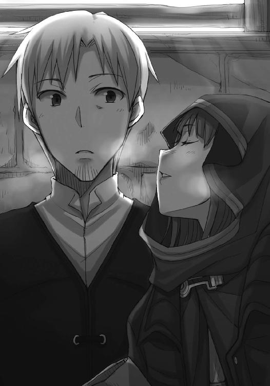
くっついて、すぐに離された柔らかい感触を追うようなことはしない。
顔は前に、視線だけでホロを追う。
笑顔のまま首をすくめたホロは、大声を出したいのを我慢しているようにも見えた。
ロレンスは小さく笑い、ホロと同じようにやれやれと顔を上げる。
「何度か人に刺され、殴られ、あわや破産という憂き目にも遭った」
「んむ？」
「その果てにようやくたどり着いたご褒美が、これ、か？」
片目を閉じて、自分の頰を指差しながらロレンスは言う。
言われたホロは、地図を指の間に挟んで、上目遣いにこちらを見る。
「不満かや？」
ヨイツの賢狼ホロには、めそめそとしているよりもこちらのほうが似合っている。
「滅相もございません」
「んむ。ならばよしじゃ」
ロレンスが肩をすくめると、ホロはロレンスの腕を取ってくる。
そして、ロレンスの手から空の封筒を取り上げて、ロレンスの腕を小脇に抱えたまま、器用に地図をしまってしまう。
「なくしたら大変じゃからな。ぬしが持っててくりゃれ」
「生憎と、両手がふさがっているんだがな」
左手の小指と薬指の間にはもう一通の封書が挟まっているし、人差し指と親指ではジョッキも持っている。右腕は、ホロの小脇の中だ。
すると、ホロはジョッキを手にとって、代わりに地図を出してくる。
「これはわっちが引き受ける」
「はいはい」
ホロは早速酒に口をつけているが、きつい酒に変わりない。
いくら酒好きといっても、こんなきつい酒を間もあけず飲みたがるのはきっと胸の内がざわついているからだろう。
右腕を抱きしめる力はいつもより強いし、尻尾も膨らんでいるようだった。
見栄っ張りな奴だ、と笑いはしない。
エルサとのコルの取り合いを見れば、ホロは根っからこういう性格で、今更直すようなものでもないのだろう。
「で、お前たち飯は食べたのか？」
いつまでも地図のことを話題にしては、また感傷的だなんだと言われるだろう。
なので敢えて現実的なことを言ったのだが、ホロのお気には召さなかったらしい。
「ぬしは本当に場の空気というものを......まあ、こればっかりはしょうがありんせんか」
ついさっき自分に言ったことを思い出してみろ、と言いたくなるのをぐっと我慢する。
こういうところだけはわがまま放題だ。
「まだ食べておらぬと思いんす。石頭もそういうところは律儀そうじゃからな」
評価が高いのか低いのかわからない。
ただ、それならば、とロレンスはホロを促して、木窓の灯りの途切れ目に向けて方向転換した。
「む？」
「近道だ。ついでに、どこか酒場に寄って料理を買っていこう。多分、この路地をずっと行けば獣と魚の尻尾亭のあたりに出ると思うんだがな」
「ふむ。きつい酒もうんと買ってくりゃれ」
そう言われて、ようやくジョッキを持ってきてしまったままだったことに気がついた。
しまった、と思うが、返しに行くのも面倒だ。
明日、返しに行けばいいだろう。
そう思いなおして、両脇の家から漏れ出る灯りでそれなりに明るい路地を進んでいった。
両側を高い建物に挟まれた路地は、なんとも不思議な場所だった。
前方を見るととても狭そうに見えるのに、実際に歩くとそうでもない。窓や扉の側を通ると人の生活の匂いや音が流れてきて、まるで家の中の一部のようだ。かと思えば、突然両側を石壁に挟まれて沈黙に満たされることがある。
足元も、石畳と土が交互にやってきて、落ち着きがない。
現れては消える光景は、一瞬垣間見える生活の断片で、聞こえてくる声はたくさんの壁を通した頼りないものだった。
そんな場所をずっと歩いていくと、段々と現実感がなくなっていく。
夢の中の世界。
ついに地図を手に入れて、ヨイツの場所にはっきりと形が与えられた。そんな高揚感も手伝って、ロレンスはこの路地が永遠に続くかのような錯覚に、心地よさを感じていた。
だからかもしれない。
商人の用心深さなどどこかに置き忘れ、不用意な言葉を呟いていた。
「どうして、ル・ロワの話を選んだ？」
感傷的にすぎる、と先ほど笑われたばかり。一度笑われれば二度も三度も同じこと。
酒に酔った時についそうなってしまうように、路地の雰囲気に酩酊しかけているロレンスは、少し責めるような口調になっていた。
「そんなにわっちとヨイツに行きたいのかや」
むずがる赤子の泣き声に、筋の通った説得の言葉は通用しない。
ホロは呆れるように笑い、ロレンスをあやすように腕を抱えなおした。
そして、それから何事かを言おうとしたのを、ロレンスは自分の言葉で遮った。
「行きたい」
自分でも驚いたくらいの強い口調。ならば自分以上に驚くホロを見て、ようやく幾分自分を取り戻す。地図と封書を持ったまま、自分の口元を隠して横を向く。
ホロの視線が、頰に突き刺さる。
ただ、しばらくして聞こえてきたのは、ホロの含み笑いだった。
「くふ。わっちとぬしとは、ほんと、嚙み合わぬようじゃ」
「......？」
ロレンスは、餌で誘い出される野良猫のように、警戒しながらも誘惑に抗えずそちらを見る。
すると、いつもそこに置いてあるはずの意地悪な罠は、綺麗に磨かれた横顔に変わっていた。
「わっちゃあ、あれこれ考えて、本を追いかけるのがよいと思いんす。言ったじゃろう？ せめて実のあるほうを取るべきじゃ、と」
うまくいけば銀貨三百枚になり、多少なりとも北の地の荒廃を防ぐための一手に貢献できる。
それくらい、ロレンスにもわかる。
それでも、銀貨三百枚はロレンスの儲け。北の地の荒廃の一手を防ぐのはホロの儲け。
そう考えれば、ヨイツに共に行くのは、ホロとロレンスの二人の儲けだ。
感傷がないというわけではない。
ロレンスがうまく納得できないのは、敢えて二人共通の利益を捨ててまで現実的な利益のほうを取るその理由がわからないからだった。
「ぬしよ、わっちらの旅は何人じゃ？」
ホロの言葉はとても短く、質問は明確だ。
思考が空転する。
ホロの琥珀色の瞳が、ちらりとこちらに向けられる。
「......三、人だが......」
「コル坊がヨイツに行ってなにを得られるかや？」
その言葉に、ロレンスは一瞬の眩暈を感じた。
「い、いや......だが......」
「コル坊は成り行きでわっちらと旅をすることになっておった。せっかくの大望を棚上げしてまでの。コル坊は芯の強い仔じゃが、それでも仔は仔でありんす。わっちらと旅をしておったことに、本当に深い理由があるわけではありんせん。傷ついておったから羽を休めたかった。ただ、それだけのことじゃ」
ひどく突き放すような物言いは、単なる思いつきで喋っているのではない、ということを示している。ロレンスがいない間に、エルサもいない間に、コルの胸の内を聞き出していたのかもしれない。
ロレンスが自分の決断は行商路にいる多くの人間に関わることを知っているように、ホロもまた自分の決断が小さな群れの中の仲間に影響を持つことを理解しているのだ。
「ウィンフィールだったかや。あそこでたわけのハスキンズを見て以来、あれこれ考えておったようじゃ」
「ハスキンズさん、を？」
「んむ。自らの故郷のためになにをすべきだったか。羽を休めるためにしばし荷物の奥底に埋めておいたことを思い出したそうじゃ」
商いの場を離れては、自分が思っている以上に他人のことが見えていない。
それはホロに関することだけではなく、コルもまた例外ではない。
そうだったのか、と驚いていると、ホロはちょっと苦笑いをした。
「わっちも大したことは言えぬが、かけらも気がついておらんかった、という顔じゃな」
「う......」
呻き、隠しきれるわけもなく、うなずいた。
「まったく......。それで、この間の雪山での話じゃ。フランとやらの生き様を見て、ようやく眠りから覚めたんじゃろう。あれは、んむ。わっちら狼から見ても、馬鹿馬鹿しいが、すがすがしいくらいにまっすぐな生き方じゃった。ハスキンズは年寄りすぎて手段が陰鬱じゃったからの。その点、フランの小娘は尖った氷のように美しかった」
ホロがそんなふうに評するとは意外だった。
けれども、ちょっと考えてみれば、ホロの性格であればむべなるかな、とも思う。
大切な者のために、たとえそれが過去の思い出であったとしても、自らの全てを懸けてなにかを追い求めるなど、いかにもホロが憧れそうな気がした。
そして、そんなことを思っていたら、ホロが不機嫌そうな目でこちらを睨んでいた。
「ふん。それで、とどめにあの石頭じゃ」
教会法学を志す少年と、異教の神が厳然と崇められる村で、必死に教会を存続させようと奮闘していた少女。
最後の一押しとしては、決定的なものだったろう。
「この町の教会も一役買っておる。きちんとした大聖堂を見たのはこれが初めてだそうじゃからな。こんな建物を作れるような組織の権力たるや、きっと村を守るには十分なものだと、そう思ったそうじゃ」
ホロは言って、最後に小さくため息を付け加える。
コルが、誰よりも懐いていたホロになかなか打ち明け話をしなかった理由がよくわかった。
ヨイツの賢狼ホロと名乗り、その姿は人から見れば紛うことなき異教の神のものだ。
そんなホロに、相談できることではない。
フィロンがデリンク商会に行けないように、薬商が酒場に行けないように、天秤職人が両替商と仲良くできないように、相談できなかったことだろう。
コルの中で、ホロは唯一無二の姉的な存在ではなく、ぎりぎりのところでは賢狼だった。
その真の姿を見ても怯えずに、それどころかホロの尻尾に抱きついていたコルですら、あるいはだからこそ、ホロが賢狼であることを忘れなかったのかもしれない。
だとすれば、ホロがどうしてロレンスとヨイツに行くことを諦めて、キッシェンに行くことを選んだのか、ロレンスにもわかってきた。
実のある答えを取らなければならない。
二人の共通の利益より、三人のばらばらの利益。そこで三人の旅を終えるキッシェンの町に赴く理由としては、あまりにも相応しいものだった。
ホロはキッシェンを別れの場所として選んだのではなく、再出発の場所に選んだのだ。
「少なからぬ儲けもあるじゃろうし、あの肉団子も南に下るんじゃろう？ コル坊を連れていってもらえばよい。それに、わっちには石頭のあの頑固さが鼻につくんじゃが、コル坊にはあれくらいのほうがぴったりかもしれぬ。場合によっては、コル坊があの村の教会に収まればよい」
最後の提案は、もちろん冗談だっただろう。
けれども、自分と一緒に来ればいい、とは冗談でも言わなかった。
「のう、ぬしよ」
しばらくの間をあけて、ホロは静かに話しかけてきた。
「生きてみると、時間というのは思いのほか長いことを知るものじゃ。その中で、幸運が願いを叶えてくれることはとても少ない。その地図を作ってくれたフランを見ればよい。あれほどの決意があっても、笑って死ねるなどなかなかあることではありんせん」
長い時を生き、たくさんの人生を見送ってきたのだろうホロの言葉は、聞きかじって頭で理解している言葉とは比べ物にならないほどの重さだった。
「わっちらは、生きて笑うべきじゃ。それで、またいつか笑い合えばよいではないか」
そのためには、一時の感傷に流されず、現実的な判断をしなければならない。
「商いと一緒なんだな」
「むう？」
「損して得を取れ」
ロレンスが言うと、ホロは「ほ」と感心して、顔をくしゃりと歪ませた。
不恰好な笑みは、悔しさがまじっているからだろう。
言われっぱなしでいられるわけがない。
それに、自分自身の言葉だって忘れたわけではない。
ホロが決断し、自分たちは協力する。
狭い路地はいよいよ狭くなり、ロレンスはホロを先に歩かせた。
その背中はひどく小さく、手を伸ばせば届く距離にいたとしても、すぐにいなくなってしまいそうに見えた。
キッシェンでは、本当にこの背中を見送ることになる。
確かにまた笑い合えばよい。今生の別れ、というわけではないのだから、なにも恐れることはない。これまでにもたくさん繰り返してきた、ありきたりの別れ方だ。
そのことが頭ではわかっていても、胸の内の不安は消えなかった。この胸の内の漠とした不安を曝け出したら、この狼はきっと笑うか怒るかするだろう。
ロレンスは自分に問いかける。ホロを信じる気持ちが足りないのだろうか、と。
ホロはそんなに薄情な奴ではない。そんなことくらい、痛がゆいほどにわかっている。
ならば、他のなにかだろうか。
ロレンスはホロの小さな背中を見つめている。
その背中を思いきり抱きしめて、ずっと離さないままにしていたい。
馬鹿げたことだとわかっていてもなお、不安を鎮めるにはそれしかないように思えた。
ひどい自己嫌悪は、きっと気のせいではない。
ロレンスはゆっくりと大きく息を吸い、さらにゆっくりと、吐いたのだった。

翌日は、四人揃って朝食を取った。
ただし、旅人ならば旅立ちの前に食事を取ることが普通でも、エルサからすればとんでもない贅沢に映る。
その妥協点として、乾いてちぎることすら難しいライ麦パンに、豆が少々。
喉が渇くので、薄めたぶどう酒は認められた。
「それで、これからのことだが」
ロレンスが口を開くと、ホロ以外の者の視線が集まった。
「今日、明日、と準備をして、早ければ明後日出発という形になると思う。今日、このあとはとりあえずフィロンさんのところに行って、ル・ロワさんも含めてもろもろ話す予定だ」
コルは聴衆を代表してうなずき、ロレンスは言葉をエルサに向ける。
「エルサさんも、これから先どうするか、話し合っておいたほうがいいですよね？」
硬いパンを、ちぎるというよりも割り、それでもパンくずを出さずに、丁寧に口に運ぶ。
その作業は精神を集中したなにかの修養にも見えるが、エルサのすごいところは、そんなことをしながらもきちんと周りの話を聞いているところだ。
「そうですね。それに、一度村に手紙を出しておきたいので、そのこともお願いしたいです」
ロレンスはうなずき、子供みたいに一粒ずつ豆を放り上げては口で受け止めていたホロに目を向けた。
「お前はどうする？」
ちょうど豆が放り上げられ、ホロが牙を覗かせながら口を開けていた瞬間だった。
ホロは視線を豆からロレンスに向けるが、数瞬後に綺麗に口の中にすっぽりと入る。
ぽりぽりと嚙んで、薄いぶどう酒で流し込んだ。
「この世に大きな狼の伝説を新しく作ってもよいと言うのなら、わっちゃあ別に用などありんせん」
方向と場所がわかれば、ホロは自分の狼の足で走ったほうが安全だし速い。
わざわざフィロンの下に行って、人間用の道の状況を聞く理由もない。
「その伝説の真実を知っている、としたり顔で話してもいいのなら」
ホロは鼻の頭に皺を寄せ、エルサも食事に戻りながら口元だけでそっと笑う。
まったく、とため息をついてからそっぽを向いた先のテーブルには、綺麗にたたまれたままの地図があった。
「ま、ここにおっても暇じゃからな」
「では、そういうことで」
それからは各々食事を終えて、エルサは小さな咳払いと共にコルに聖典の解釈を、ホロは尻尾の毛繕いを、ロレンスも町にいる時くらいはきちんと髭の手入れをすることにした。
キッシェンに行けば一悶着あるだろうし、そこに向かうまでがまず一苦労だ。
それを思うと、朝日が差し込む中庭の井戸端の静けさも貴重なものだった。
遠くから人の営みの騒がしさがかすかに聞こえる静けさは、森や草原の静けさとは違う。
一人で旅をしていた時はたまらなく好きだったこの静けさだが、それは一人旅でなくなってからのほうがより好きになったような気がした。
こんな具合で果たして一人でやっていけるのだろうか。
自嘲気味に笑ってしまうが、多分どうにかなってしまうのだろう。
そうでなければならないし、何度も自分に言い聞かせるが、今度のことで今生の別れになるわけではない。
この不安は単なる思い込みだ。
「......。さてっ」
手を払ってパンくずを落とす。
一日が、始まった。
傭兵相手の店ならば朝はのんびりだろうと思っていたら、それは思い違いだった。
確かに傭兵は馬車の御者台で大いびきをかきながら器用に眠っていたが、周りでは男たちが慌しげに荷造りをしていた。最初は雰囲気や話し方から楽士かと思ったのだが、どうやら生まれてこの方戦場でしか店を開いたことがないという商人たちらしかった。
底なしに明るく見えるのは、死ぬことすらとっくに怖くなくなっているからかもしれない。
「今日はあと一件だ。ひどい時は一日に十も二十も出た」
商人たちが出立してしまうと、店は嵐が過ぎ去ったように静かになる。
フィロンはテーブルの上に置きっぱなしになっていたジョッキに臆面もなく酒を注ぎ、そう言った。
「そんなにたくさんの傭兵が？」
ロレンスが驚いて尋ねると、雑貨商は意味ありげに笑う。
「請求書は全部どこかの領主様宛だからね。顔が広くて販路を持っていれば、右から左に商品を捌いて大儲けだ」
もしやフィロンも同じ手を使って投機のための買い溜めをしているのではないか。
そんなことを思ったが、思っただけで口にはしない。
誰がなにで儲けていようとも、回っているうちはそれで問題ない。
「それで、大所帯でなんの御用かな」
「フランさんから地図が届きまして」
ロレンスが言うと、薄暗い店の中でもわかるくらいにフィロンの顔がぱっと輝いた。
「おお、それは素晴らしい」
そして、ロレンスが地図を差し出すのを今まさに待っているかのように手を伸ばしてくる。
しかしロレンスはわざわざ地図など持ってこない。
フィロンの笑顔との間に生まれた沈黙に、ホロがけらけらと笑い出した。
「トールキンという場所なのですが」
「ああ、いい場所だ」
フィロンはどっかと椅子に座り、羽根ペンを取り上げながら答えた。
「やや広いがね」
地図の上でも、ヨイツはトールキンの一部という感じの描き方だった。
けれども、その一帯まで行ければ、それこそホロの嗅覚だけでもたどり着けるだろう。
「小さな村があったな。村というよりも、樵や狩人が滞在する小屋の集まりだが」
「名は？」
聞いたのはホロ。
棚に収まっている古びた羊皮紙の束や、立てかけられた刀剣を興味深そうに眺めていたコルとエルサが、揃ってホロを振り返る。
「名はついてないし、名をつけるような集落でもない。トールキンで生まれた、と誰かに聞かされたのかな？」
それでホロはヨイツと答えようとした。
しかし、口が一瞬動きかけただけで、結局無言でうなずいた。
「こっちの人間からすれば、トールキンだろうがなんだろうが、深い森や山の中という以上の意味を持たない。まあ、雄大なる自然から生まれたとでも思っておけばいいじゃないか」
フィロンの口調が軽いのは、深刻に考えることではない、という元気づけの意味もあるのだろう。
ただ、ホロの顔つきは緩むどころか急に険しくなった。
「まだ、そこの森や山は、豊かなのかや」
ゆっくりとした、一語一語念を押すような物言いだった。
フィロンは開きっぱなしだった台帳を羽根ペンの先で突つき、頰杖をついてホロを見た。
「呆れるほどね。大物の鹿が捕れると評判だ」
「狼は？」
「狼？」
ホロはじっとフィロンを見つめている。
ホロの正体を知っている身としては、はらはらするような沈黙だった。
ロレンスたちの視線が釣られたのは、フィロンがふっと天井を見たからだ。
「あの辺は、勇猛な狼がたくさんいるよ」
ホロが大きく息を吸い、小さな体がむくりと膨らむ。
今にも泣きそうな顔だった、と指摘しても、きっと牙を剝いて否定するだろう。
「狼が祖先だという傭兵たちも多い。トールキンの狼を祖先に持っていたとしたら、戦いの場ではさぞ心強いだろうね」
人が人以外の子であるとしたら、それは神の子以外にない。
そんな教会の教えが広まり、今まさにそこにはエルサがいるというのに、フィロンは世間話のように軽く言ってのける。
エルサを気にかける素振りがまるでない。
傭兵を相手に商売をする男は、人それぞれの立場においての大事なことというものを、研ぎ上げたナイフのように無駄なく把握している。
「君は......」
フィロンはそこまで言って、不意に言葉を切った。
北の地の生まれで、南からやってきて、出生地が曖昧だとなれば、その誕生秘話が楽しい可能性は限りなく低い。そう思ったのだろう。
「まあ、君たちはキッシェンに行くんだろう？ それとも、何人かはここに残るのか、あるいはそのトールキンに？」
「キッシェンに行くつもりです。そこからの道すじを教えてもらえませんか。あちらでまた別に話を聞いたほうがいい、というのならそうしますが」
フィロンは、それには及ばないと手を振った。
それから目を閉じ羽根ペンの羽根で顎をくすぐって、こう言った。
「キッシェンとトールキン地方の間には、毛皮の道と呼ばれるものがある。よくある名前だが、あの辺で唯一金になる毛皮を運ぶ重要な道だからね。よほどの雪で埋もれない限りは通れるはずだ。多分、途中の領地にブルナーの傭兵団と呼ばれる連中がいる。紹介状を書こう。なにかあったら、これ以上ないくらいに頼れる仲間になってくれるような飛びきりの奴らだ」
ホロの生まれを勝手に想像して同情したのか、あるいはフランの地図を見せてもらうために恩を売りたかったのか。多分その両方だろうが、断る理由もない。
「ありがとうございます」
ロレンスが礼を言ったのは、ホロは言葉に詰まってうまく口を開けなさそうだったから。
単なる古い記憶に昔話が積み重なり、それはやがて地図の形になった。
一度形を得てしまえば、あとはとても簡単なこと。
ヨイツに至る道がどんどん具体性を帯びてくる。
食べ物を喉に詰まらせた時にそうするように、ロレンスはホロの背中をとんと叩いておいた。
「で、そちらのお二人は？ 一人はピヌだったか」
フィロンは羽根ペンでエルサとコルの二人を指す。
コルはしどろもどろだったが、エルサは慌てるということがない。
「いえ、私はル・ロワに用事があります」
背筋を伸ばし、冷たい物言いとも取れる、しっかりとした揺るぎのない発音で答えた。
フィロンは少し目をぱちくりとさせた。
それから、咳払いを挟むと芝居がかった口調でこう言った。
「あの男にできることなら、私にも大抵できると自負している」
「そうですか？ では、手紙を書きたいのですが」
驚きもしなければくすりともしないエルサに、フィロンはちょっと拍子抜けしたようだ。
しかし、「あ、ああ」と力なく応じた様子には、エルサは呆れるように笑っていた。
どうやらホロとは違う男のあしらい方を心得ているらしい。
どちらがいいかと問われたら、ちょっと難しいところだが。
「ペンも紙もある。文字を書けなければ代筆もしようか？」
「いえ、それには及びません。ただ、お金がないのですが」
これもまたはっきりした物言いに、フィロンは再度胸を張った。一度張った見栄、というやつだろう。
「紙代だのなんだのはル・ロワにつけておこう。なにも問題ない」
エルサは数瞬の間、じっとそんなフィロンを見つめ返す。
そして、ゆっくりと笑い、「お願いします」と言ったのだった。
ル・ロワは旅支度のために奔走している、とフィロンはそ知らぬ顔で説明した。
天井の向こう側には山ほどの物資があるが、それを分ける気はさらさらないらしい。
エルサが手紙を書いている間、フィロンも自分の仕事を始めてしまったので、ロレンスたちは店の外で日向ぼっこをすることにした。
人の往来は多いが、眺めていて飽きないことだけは確かだ。
「見つかると、その先はあっさりしたもんだな」
気を利かしたのかどうか、コルは通りを挟んで反対側の靴職人の工房を覗いていた。
コルくらいの歳ならば、大抵はどこかの工房か商会で雑用を任されている。
つい今しがた、外から帰ってきた親方らしき男に頭を叩かれ慌ててロレンスたちのことを指差していたので、仕事を怠けている小僧だと間違えられたらしい。
「目的地が決まっておればの。あとは顔をそちらに向け、足を交互に前に出すだけじゃ」
店の前の石段に腰を下ろし、膝の上に両腕で頰杖をついてのんびりとコルの後ろ姿を眺めている。眠そうなのは、日が当たって十分すぎるくらいにぽかぽかとしているからだろう。
「単純で明快だ」
ロレンスの言葉に、ホロは目を閉じてふふんと笑う。
「んむ。迷うこともありんせん」
ホロのさっぱりとした横顔は、剝きたてのゆで卵のよう。頭の中で絡まったりまとわりつくあれこれを、綺麗さっぱり振り払ったようだった。
そうなれば、ヨイツに一緒に行くこと云々にこだわっているのは、どうやら本当に自分だけらしい。
悔しさを誤魔化すようにやれやれとため息をついて、体を起こして伸びをした。
「しかし、町でこんなにのんびりすると、旅に出たくなくなるな」
目を細め、空を仰ぎながらそう言った。ホロも顔を上げ、片目をうっすらと開けてこちらを見る。
「そういう理由なら、わっちも真剣に考慮するんじゃが」
相手にするのは癪だったので、肩をすくめて無視しておいた。
エルサが手紙を書き終えたのは、それからたっぷり時間が経ってからのこと。
理路整然と話す割に、いざ文章にまとめようと思うとうまくいかなかったらしい。
手にも頰にもインクをつけて、心なしかげっそりしているようにも見えた。
「......お二人は？」
「小銭を渡したら、港のほうに行きましたよ。エルサさんも行かれますか？」
エルサは無言で首を横に振る。
よくよく考えれば、狭い村の中で暮らしていれば自分の考えを文章にするということなど皆無なのだ。きっとエヴァンのことをどう呼ぶか決めるだけで、かなりの時間が取られたに違いない。
ロレンスはそんなことを思いながらぐるりと部屋の中を見回して、今度はこちらから尋ねた。
「フィロンさんは？」
「さあ......途中でテーブルから立ったような記憶はあったのですが......」
見れば、中庭に続くのだろう扉が半開きになって、薄暗い店内に少しでも光を取り込もうと必死になっていた。
エルサがいくら聖職者だからといって、他人を置いたまま店を開けるなど無用心だ。
あるいは、盗むものなどなにもないのかもしれない。
究極の商人は、信用一つあればそれだけで店を広げられるもの。
そして、信用だけは盗むことができない。
「我々も出ていったらまずそうですね」
「......そうですね。ですが、あの」
「はい？」
ロレンスが聞き返すと、エルサは精根尽き果てたといった顔で、申し訳なさそうに言った。
「外の空気を吸ってきてもよろしいですか？」
ロレンスは笑って、その背中を見送った。
ぱたん、と扉が閉じると、薄暗い店内にはロレンス一人だけとなった。
ロレンスは椅子に座り、もう一度ゆっくりと店内を見回した。
手狭ではないが、広くもない店内。大した飾りっけもないが、同時に無駄もない。テーブル、椅子、棚は機能的に、必要なだけ置かれている。よく掃除されているのに、これ見よがしに綺麗なわけではない。なにもかもがありすぎず、足りなすぎず、とても落ち着いていた。
鼻から深く息を吸って、口から吐く。
店の中は、静かだ。腰を落ち着けるには理想的といえるだろう。
ただ、自分がこの店を持つのなら、窓は一つ追加する必要があるだろうな、と思った。
なぜなら、ホロは日の当たる場所で毛繕いをしたがるからだ。
そう思ってから、手を振って自分の空想をかき消した。
それは日増しに濃くなっていくし、繰り返せば具体性を帯びてくる。
そのこと自体が悪いことだとは思わないが、ホロと共に旅をしている間は隠しておくべきことだ。
一緒に店を開こうなどという台詞、賢狼相手でなくたって、胸の内に留めておかなければならない。
「キッシェン、か」
呟き、笑う。
ホロが拘泥しないなら、ロレンスにあれこれ言う権利はない。決断はホロがして、ロレンスたちは協力する。それも、できることをできる範囲内でやろう、と取り決めた。
ロレンスはキッシェンに立ち寄ったことはないが、話くらいは知っている。
なだらかな丘の上に作られた若干起伏に富む町で、町の中にはとても緑が多いという。時には森に飲み込まれた町、などと評する者もいる。ホロやコルにはよい町かもしれない。
エルサはどちらかといえば見晴らしのいい村の生まれなので、やや辟易するかもしれない。
ただ、なんにせよよい町そうで安心だ。
王都エンディマとさほど離れていないので、酒も食料も豊富だろう。
別れには格好の場所。
頰杖をついて、口に出してみる。
「別れには格好の場所」
諦めの悪い自分が、むしろ可愛く思えてくる。
ホロはどうしてあんなにあっさりと諦められるんだ？ あるいは一緒にヨイツを見るのが最良の旅の終わり、というのは、ホロが言うように感傷的にすぎる馬鹿げた考えなのか？ それとも、これほど相手のことを思っているのは自分のほうだけなのか？
記憶の中でホロが笑う。
その笑顔の向く先は、自分の知らない誰かである。
ほとんど八つ当たりのように、そんなことを思った直後だった。
「お、聖女様は書き物を終えられたのか」
半開きになっていた中庭に続く扉を開けて、フィロンは帰ってくるやそう言った。
「ひどく苦労されているようでしたが」
「はは。いいことじゃないか」
あまりにもあっさりと言うので、ロレンスはちょっと不思議に思ってフィロンのことを見た。
傭兵相手に商いをするその男は、少年のようないたずらっぽい顔だった。
「大事な相手に手紙を書きなれている人間で、幸せな奴はそうそういないからな。そうじゃないか？」
目を開けてきちんと生きている人間の言葉。
ロレンスは、悔しさを誤魔化すために笑ってため息をついた。
「確かにそうですね。大事な人の側には、可能な限りいたいものです」
フィロンは満足そうにうなずき、どっかと椅子に腰を下ろす。テーブルの上にはエルサがしたためたのだろう手紙が置かれていて、フィロンはそれを手に取ってざっと目を走らせる。
内容を読もうとしたのではなくて、インクが乾いているかどうか確かめたらしかった。
「それで、ちょっと気になってな」
と、フィロンが言ったのは、手紙をたたみながらのこと。まるで、今その瞬間までロレンスとなにかの会話をしていたかのような言い方だった。
ロレンスは一瞬混乱してしまう。
どんな会話をしていただろうか、とありもしない記憶をさかのぼろうとしたところに、フィロンの言葉の続きが突き刺さった。
「デリンク商会に連絡を取ってみたんだが」
フィロンは、デリンク商会と一緒にいるところを見られては困る、とル・ロワの頼みを突っぱねていた。
あれは断るための口実だったのか。
ロレンスは、そこまで思って、考えなおす。
そうではなく、敢えて連絡を取るほどのことだとしたら？
「まあ、当たりだった」
「......当たり？」
字面は幸運を示すようなものであっても、文脈次第でいくらでも意味内容が変わるのが言葉というものだ。
フィロンの顔を見れば、面白くない話であるのは一目瞭然だった。
「うちは傭兵連中に物資を供給したり、人を斡旋したりする。デリンク商会はその逆だ。うちの帳簿にはトールキン地方に出向く傭兵はなかったんだが、あっちにはあるかと思ってな」
意味もなく、手紙に触れる。
「ある日突然捕虜を連れていっても、仕入れ地によっては門前払いの可能性がある。連中は戦の見込みがあると事前に商会に話をつけている」
「つまり？」
じれて、ロレンスは聞き返した。
あるいは、ロレンスがじれるかどうかを試していたのかもしれない。
フィロンの目は、ロレンスに同情するようなものだった。
「おそらく、トールキン地方は征圧の対象になっている」
唐突に話し出したのは、伝えるとしたらこの頃合しかない、と思ったのかもしれない。
気を利かせられる人間なら、ホロのような娘に、悲惨な話は極力聞かせたくないと思うだろう。ロレンスもその口だったので、笑うことなどしない。
ただ、自分だけに知らされたら、自分がホロに伝えなければならなくなる。
理不尽にも、その点だけはフィロンを責めたかった。
「それがなんの目的かはわからん。なにせ肥沃な森が延々と広がるだけの山野だからな。村で名のついているものなんてほとんどない。あるいは、そういう場所だからこそ、人を狩るにはよいと思ったのかもしれない。さもなければ」
フィロンの視線は、あらぬ方向を向いて、その焦点は遠かった。
「鉱脈が見つかったか」
ホロはトールキン地方の森や山が豊かかと聞いた。そのことと、ル・ロワの話に敢えてロレンスたちが乗ったことを考えれば、なにが一番の心配事かは誰にだってわかる。
苦いものが口の中一杯に広がるが、それはあくまでも可能性の一つだ。
フィロンもまた、そう思っていたらしい。
「もっとも、それは考えすぎかもしれん。デリンク商会の返事では、トールキンから捕虜を連れてくるかもしれない、と連絡してきた傭兵団は一つだけだったらしい」
もしも鉱脈が発見されているのだとしたら、もっと大規模なものになるだろう。きっと、辺鄙で、誰も赴かないような場所で金儲けだけを考えて戦いに赴く傭兵団が一つある。そんなところなのだ。
誰かが不幸になるのは間違いがないのに、ロレンスははっきりと安堵していた。
それが神の示す教えに対してまっとうかどうかは考えない。
ホロは一人でヨイツに赴くのだ。可能な限り困難には見舞われて欲しくない。
自分の利己的さに、被虐的な笑みさえ浮かぶ。
その、直後だった。
「そういや、その傭兵団の旗印はちょうど狼だったな」
「狼？」
フィロンはうなずき、こんこんとこめかみの辺りを指で叩く。
「名前もちょっと変わっていた。大きくはないが、歴史ある傭兵団でな。なんといったか......」
積み重なってこびりついた埃のように、ようやくぽろりとフィロンの口からこぼれ落ちた。
「ミューリ傭兵団」
ホロにも故郷の友人たちがいる。その名前を、ロレンスは忘れない。
ユエ、インティ、パロといった、なにかの暗号のような変わった発音の名前ばかりだった。
その最後にホロが呟いた名前。
ミューリ。
「小規模ながら、統制の取れた部隊だと聞いている。特に首領が切れ者だという。一度もこちらで仕入れをしてくれないので、名前しか聞いたことがないんだがね」
フィロンの説明に、ロレンスはゆっくりと息を吸って、長く息を吐く。
長い年月の間、戦いに赴く牙のある者は戦いに赴き、やがてどこかで敗北し、その身は土に還ったという。多くは月を狩る熊との戦いで死に、残る者たちも人との戦いで次々と死んでいった。ケルーベでユーグから聞いた話は、そんなものだった。
ヨイツに暮らしていた狼たちの痕跡がまったくないことは、彼らが狼であるがゆえに戦いに赴いて死んだのだと、ホロは自分に言い聞かせて納得しようとしていた。
しかし、運命を司る神は無慈悲でもなければ、ヨイツの狼たちも弱くはなかったらしい。
狼の旗印を掲げ、ミューリ傭兵団と名乗る部隊がホロの故郷であるヨイツの近くに布陣する。
これが単なる偶然だとはとても思えない。素直に考えれば、ホロの友人であるミューリは未だ生きていて、デバウ商会の企みを聞きつけたうえで故郷の近くに陣取ったのだ。
これは、朗報以外のなにものでもない。
「まあ、あんたのお連れさん方には、なんとも気を揉む情報だと思う。追加で情報を集めようか？」
申し出に、ロレンスは首を横に振っておいた。
ミューリ傭兵団という部隊がヨイツ近郊にいる。その事実を教えるだけで、ホロには十分すぎるものだろう。このことを伝えれば、言葉に詰まって喜ぶ姿が容易に想像できる。
朗報を告げるための伝達吏は、いつも人気の役目となる。
ロレンスも、ホロを喜ばせるためにこのことを早く伝えたいと思う。
しかし、同じくらい伝えたくない、とも思ってしまっていた。
なぜなら、ミューリのことを聞いてホロは必ず喜ぶからだ。それでもきっと自分のはやる気持ちをなんとか抑えて、ロレンスたちと一緒にキッシェンに行くだろう。そして、ロレンスたちと別れたあとは、たちまち人の姿などかなぐり捨ててヨイツに向かうはずだ。
ロレンスはその後ろ姿を見送らなければならない。ホロがヨイツで仲間と再会する場面は、一人荷馬車の上で想像しなければならない。その場に居合わせるなど、できるわけがない。
ホロはミューリと再会して、ひとしきり喜んだあとには、こんなふうに人に助けられたとあれこれ喋ってくれるだろう。ミューリが人間嫌いでなければ、それはよかったと答えるだろう。
そのあとのことは、想像だってしたくなかった。
傭兵団に女の名前をつけることなどあり得ない。
たとえミューリとホロの関係がおよそ恋仲にはなり得ないものであったとしても、同じ故郷のとっくに死んだとさえ諦めていたような狼なのだ。
大きな狼の番を前にして、へらへらと笑って小銭を稼ぐ自分を対置させれば、いかに馬鹿げた構図かがよくわかる。そこに自分の居場所などないだろう。そこまでロレンスも楽天的ではない。
ばんざい、と手を上げたくなる。
少なくとも旅は楽しかったよ、と笑うしかない。
だからロレンスは笑って、こう言った。
「世の中ままなりませんね」
フィロンはじっとロレンスを見てから、「まったくだ」とため息まじりに呟いたのだった。
外の空気を吸っていくぶん疲れが取れたのか、いつもの凛々しい顔つきに戻ってエルサが店の中に入ってきた。聞き耳を立てるような性格ではないので、フィロンとロレンスの話を聞いていたわけではないだろうが、微妙な空気の変化は感じ取っていたらしい。
少し物問いたげな目をこちらに向けてきたが、ロレンスは気がつかないふりをしておいた。
告解は、促されてするものではない。
ただ、ミューリの話をいつホロにすべきかという難問の答えがあるのなら、神に問いかけるのも悪くないだろう。
もしもこのままホロが帰ってきてすぐに教えたら、間違いなくホロの頭の中はミューリだけで占められてしまう。仮にそうでなかったとしても、そわそわとさせてしまうことだけは間違いない。
なにせ、キッシェンに赴き、そこで別れようと言ったのはホロ自身なのだ。ミューリ傭兵団がいるからといって自分だけさっさとヨイツに行く、などと、今更言い出せないはずだ。
伝えるならキッシェンで、それも別れ際が一番いいのではないか、とロレンスは思う。
ホロと過ごせる時間は本当にあとわずかだ。
利己的でどうしようもなく恥ずかしい考えだが、せめて残された時間くらい、今のこの旅に目を向けていて欲しかった。
問題は、それをホロに隠し通せるかどうかだ。
多分隠し通せはしないだろう。
しかし、隠しているものを敢えて穿り出そうとするだろうかと考えれば、答えは否定的に思えた。以前ならばいざ知らず、今ならホロはロレンスがなにかを隠していると勘づきつつも、じっと黙っているだろう。
そして、ロレンスが別れ際にミューリのことを伝えたら、それまで隠していたその理由を聞いてきっと大笑いしてくれるはずだ。
商人らしく、もっとも効果的に、もっとも自分の利益になるように、と計画を組み立てる。
誰かを心底好きになるというのは、頭の回転を速めるが、その方向感覚は駄目にしてしまうものらしい。
面白い経験だったが、これが最後でいいかもしれない。
ロレンスがそんなことを思い、自嘲するように笑いながらため息をついた時だった。
「ほれ、土産じゃ！」
扉が勢いよく開けられたかと思うと、店の中に飛び込んできたのはそんな大きな声だった。
店の中にいたのが各々静かに過ごすことに慣れている者たちだったので、その衝撃は殊更大きかった。
何事かと思うのも束の間、遅れて入ってきたコルが、水を張った底の浅い桶をどんと床に置く。荒く息をついていたコルは、それからそのまま精根尽き果てたようにその場にへたり込む。
コルの細身には相当重かったに違いない、というロレンスの同情をよそに、ホロは大得意で胸を張る。
「ほれ、今日の昼飯はこれに決まりじゃ」
そう言うホロも、どういうわけか頰を赤くして汗までかいている。
一体なにがあったんだ、と近寄ると、思わず鼻を押さえてしまいたくなるくらいに生臭い。
その原因も、程なくしてわかった。
コルが運んできた桶の中には、真っ黒いウナギが何尾もうようよと泳いでいた。
「立派なものじゃろう？ 港をぶらついておったら、大きな樽をひっくり返したたわけがおっての。中に入っておった山ほどのウナギが、煤を思いきり息で吹き飛ばしたみたいに散らばってしまいんす」
コルがへばったまま立ち上がれないので、心配したエルサがしゃがみ込んで介抱する横でホロは満面の笑みだ。
生臭いし、よく見れば服の袖もびしょ濡れだ。
「盗んだわけじゃないんだよな？」
「たわけ！ 頼まれたから捕まえて、その礼じゃ。わっちらが一番うまく捕まえられての。のう！」
ホロに話を振られ、コルは疲れた笑顔を向ける。
フィロンも側にやってきて、桶を覗き込んで感心している。確かに立派なウナギで、丸々と太っていた。
「まあ、しかし......とにかく服を替えたほうがいいな」
「ん？ んむ。確かにちょっと濡れておる。なら、これらの調理は任しんす。ほれ、コル坊」
ホロはまくし立てるように言って、ようやく呼吸が整ってきたコルを立ち上がらせようとする。コルの疲労困憊ぶりを見れば、誰だって止めたくなるだろう。
しかし、実際に止めたのはエルサでもなければロレンスでもなく、フィロンの笑い声だった。
「はっはっはっは」
気持ちいいくらいの、笑い声らしい笑い声だった。
天井を仰ぎ、腰に両手を当てて大声で笑っている。
広場で物語を演じる役者たちだって、こんなふうに笑いはしないだろう。
「いや、楽しい客人たちだ。なに、お湯くらいうちで貸すよ。調理も請け負おう」
「む、本当かや？」
「そんな格好で外を歩いたら風邪を引いてしまうだろう。すぐに小僧どもに言って湯をわかさせよう。替えの服は、そうだな......」
と、フィロンが考えを巡らせているので、ロレンスはようやくここで言葉を挟む。
「替えくらいは、宿から取ってきます」
「ん？ ああ、じゃあ、そうしてくれ。その間に、ウナギも捌かせておこう。思いがけない豪華な昼食になりそうだな」
この店で湯を借りて耳や尻尾がばれないだろうか、と思いはするが、そのへんのことでホロが失敗するとは思えない。
エルサの手を借りて立ち上がったコルの手を引き、ご機嫌な様子でフィロンの案内に従って店の奥に入っていった。ロレンスはそんなホロを見送って、やれやれとため息をつく。
あれこれ思い悩んでいる自分が馬鹿みたいだ。
けれども、よどんだ空気など一撃の下に吹き飛ばしてくれるホロの明るさは、どんな金貨の輝きだって敵わない。
ロレンスは頭を搔き、桶の中で泳ぐウナギたちを見下ろして、小さく笑っていた。
「では、ちょっと宿に行ってきます」
ロレンスはコルを心配そうに見送っていたエルサに向けてそう言って、外に出ようとした。
振り向いたのは、先に耳に届いたのがエルサの返事ではなく、足音だったからだ。
「私も行きます」
ぱしゃ、と桶の中で跳ねたウナギにびっくりしたエルサは、不気味な生き物を避けるように桶を避け、ロレンスの隣に立つ。
もしかしたらウナギの姿が苦手なのかもしれない。
「私の予備の服もお貸しします」
ロレンスは、その言葉に、おや、と思った。
ホロほどではなくとも、人の噓を見抜く能力はロレンスにもある。
ただ、特に指摘することもなく、ロレンスはうなずいて店の外に出たのだった。
どこの町でもそうであるように、この町も全ての道に名前がついている。小さな道でも大きな道でも木札が立てかけてあり、そこにはなんとか通りと名前がついている。その小道も、狭くはあるがしっかりと石畳が敷かれているし、立派な木札が立てかけてあった。
ロレンスが通り過ぎながらそれを眺めていると、エルサはぽつりとこう言った。
「色々考えたのですが」
最初は独り言かと思った。
しかし、間をあけず、こう続けられた。
「私はお役に立てませんか」
「え？」
聞き間違えたかと思ったが、エルサは今度はこちらを見て、はっきりと言った。
「私では役に立てませんか。あなた方は」
はちみつ色の瞳はいつだって真剣だ。
「特にあなたは、できればキッシェンに行きたくない。違いますか？」
ロレンスはその大きな瞳を見つめ返し、それから、うっすらと笑って返事をした。
「意外な申し出ですね」
怒るかもしれない、というのは予測していたことだが、エルサの怒り方は予想していたのとちょっと違っていた。
「意外ではないでしょう」
エルサはじっとロレンスのことを見つめている。
道はこんでいて、よそ見をして歩いていれば簡単に馬車に轢かれてしまう。
ロレンスはエルサに言葉を返す前にその体を手で引いて、通行人など歯牙にもかけていない馬車をやり過ごす。
「意外ですよ」
体を引き寄せれば、ホロなら照れたふりをするか甘えるふりをするだろうが、エルサはそのどちらでもない。
当然といえば当然だが、粉挽きの少年エヴァン相手にはそうではないことを知っているので、一応男であるロレンスとしてはちょっとした悔しさのようなものがある。
「私は、あなた方に恩がありますから」
宿でのやり取りから、エルサは単純な発想をしているのだろう。
ホロとロレンスが苦渋の決断を迫られたのは、二つの場所に同時にいることはできないからだ。
ならば自分がそのうちの一方にいれば問題は解決するだろうという、単純で幼稚、というよりも、エルサらしい明快な発想法と言ったほうがいい。
ただし、それではデリンク商会の条件づけがなかった場合であったとしても、問題の解決にはならない。どうひいき目に見ても、エルサでは商いの戦力にはまったくならないからだ。
「ありがたい申し出ですが」
ロレンスは、笑顔で短くそう言った。
断る理由を言わなかったのは、ありがたい、という感謝の気持ちに噓がなかったから。
ホロとあれだけ舌戦を繰り広げていながら、かけらも遺恨はない。
利害が一致すれば親の敵とすら手を組みそうな商人だって、なかなかこうはいかないだろう。
「そうですか......」
エルサの言葉は、心底落胆したような、ため息のようなものだった。
「申し出てくれた理由を、お聞きしても？」
あるいは、無駄な質問かもしれない。
神の教えに忠実なエルサからすれば、困っている人の力になるのはなによりも当たり前のことだろう。
ただ、ロレンスがそう尋ねずにいられなかったのは、商人としての勘からだ。
その人間が無私の言葉を発しているかどうか、ホロの耳よりも鋭敏に聞き分けることができる。エルサには無私の親切心以外にも、そう言い出したくなる理由があったのではないか。
その予想に違わず、怒りはしなかった。
「一つには、こちらの町の教会に袖にされてしまいましたから」
毛皮を巡る騒動を経て、この町の教会もエルサのような者を相手にしている暇がなかったのだろう。
ロレンスが慰めの言葉を言うや否や、エルサは困ったような顔をして、短く言葉を続けた。
「もう一つには、自分と似ていたからです」
「似ていた？」
予想もしなかった答えに、ちょっと驚いてしまう。
エルサはうなずき、顔をこちらに向けた。
「似ていました。本音が丸見えなのに、大真面目に建前を振りかざしていたところが」
時として人の心の奥深くに入り、その苦しみを取り除き、安らぎをもたらす聖職者らしい顔つきだった。
ロレンスは慌てて目をそらす。
自分の目から、心の内を全て見透かされそうな気がしたのだ。
「私もまた、建前で村を出てきました。他人事だと思えないのです」
そんなふうに言って、エルサもまた前を向く。
ロレンスは驚き、その横顔を見る。
「村に聖職者を呼び寄せるのは、きちんとした理由ですよね？」
「そうです。ですが......」
エルサは少し迷いを見せた。
しかし、この娘はいつまでもうじうじと悩んでいるような性格ではない。
「ロレンスさん」
エルサはこちらを見て、ロレンスの名を呼んだ。
テレオの村でも見せなかったような、弱気な顔だ。
それは罪を告白したがっているような顔であり、聞き手はロレンスしかいない。
少なからず年長の男として、度量を見せるところだった。
「こんなこと、本当は神にこそ告白すべきなのですが」
エルサの苦しげな顔に、ロレンスは笑顔を向けていた。
「ご安心を。私は天の御国に行くつもりですから、言伝を預かっておきますよ」
けちな商人にしては、よくできた冗談だったろう。
エルサは呆れたような困ったような、不思議な笑顔になる。
ただ、冗談としては、きちんと機能したようだった。
エルサは前を向いて顔を擦り、うつむいて短く神に祈りを捧げてから、そのままの姿勢でこう言った。
「聖職者を村に招きたいのは、私がその地位に就きたくないからなのです」
驚いてはならない。告解の聞き手はただその告解を聞くだけの役目だからだ。
ロレンスは一呼吸あけて、「それで？」と静かに言った。
「私はこんな身でありながら、ささやかな夢がありました」
顔を上げたエルサは、歳相応の少女のように頼りなかった。
今にも泣きそうで、いつもの気の強そうな色はどこにもない。
エルサは決して他人にそんな顔を見せてはこなかった。
例外的に垣間見えるとすれば、それは粉挽きのエヴァンが側にいる時だけだ。
ロレンスはそこまで思って、気がついた。
エルサは手彫りの紋章を握っている。
村を出る時に大事な人から受け取ったのだろう、紋章だ。
「私はできれば、願っています。いつかエヴァ──」
と、それ以上は続けさせなかった。
ロレンスはエルサの口に指を当て、ため息と共にこう言った。
「その続きは私ではなく、本人にのみ伝えるべきです」
聖職者は結婚をすることができない。
しかし、村に教会があれば誰かしらはその地位に就かなければならない。
たった一人で村を守ってきたエルサも、ずっと一人でいたいと願っているわけではない。
建前と本音。
ホロとのやり取りを見たうえで自分と似ているなどと言われては、ロレンスは恥ずかしくてちょっとエルサをまともに見ることができない。
「ですが、そういうことだったのなら......」
ロレンスは年長者の威厳を保つべく、空を仰ぎ、大きく息を吸って言葉を止める。
しばらくの間をあければ、エルサもすっかり落ち着いていた。
「とても嬉しく思います。お気持ちだけで十分です」
こちらを見るエルサの表情は、自分の力不足を嘆いているように見える。
だから、付け加えて言っておく。
「商人は、貸し借りにだけは厳しいです。気軽にこんなことは言いません」
それこそ身内だって借金で縛る守銭奴だ。
そこまで付け加えようかと迷ったが、その必要はなかったらしい。
エルサはその言葉を無理やり飲み込むようにうなずいて、不器用に笑った。
昼を告げる鐘が不規則に鳴っている。ロレンスが口を開いたのは、何度か続いた鐘の音が、余韻を残して寒空に消えてからだった。
「しかし、傍から見たら丸わかりだったのですね」
エルサはこちらを見上げ、驚いたように目を見開いていた。
「隠せていると思っていたのですか？」
そんな考えこそ驚きだ、とでも言わんばかりだったが、そこまで言われるとさすがにロレンスとしても苦笑いだ。
ただ、苦笑いをするロレンスをよそに、エルサは一つ咳払いをする。
ロレンスが見れば、それは告解の恥ずかしさを誤魔化すような、わざとらしい真面目くさった顔だった。
「それで、直接的な解決には力不足だったようですが、私は仮にも聖職者です。辛い思いを胸に秘めている人がいれば、胸の内のお話を聞くことくらいはできます。なお」
エルサはちょっと表情を硬くして、言った。
「私は告解いたしました」
不器用な駆け引きだ。
けれども、実直なエルサからすれば、頑張ったほうだろう。
それにエヴァン云々の話はきっと事実だろうし、本音と建前の合間で苦しんでいる者がいれば自分の力でその悩みを取り去ってやりたい、と思う気持ちもまた本物だろう。
そのお節介さこそが、エルサを立派な聖職者たらしめているところなのだから。
「そうですね」
ロレンスは両手を肩の高さに上げ、降参の姿勢を取る。
エルサはもう一度咳払いをした。
「率直に言って、お二人の様子は自然ではありません」
真正面から言われれば、ロレンスにもちょっとした苛立ちがある。なのでこんなふうに応えた。
「私は人で、彼女は狼です。そもそも自然ではありませんから」
エルサはその言葉にはっと息を飲んで、それでもめげずに言葉を続けた。
「そういう意味ではありません」
「ではどういう意味ですか？」
ロレンスが聞き返した瞬間だった。
「愛し合う二人が、どうして手に手を取らないのです」
そこまで言われて、さすがにロレンスは足を止めた。
もちろん、怒ったのではない。
思いがけないほどに恥ずかしくて、顔半分を手で覆ってしまっていたのだ。
「私には理解できません。あなたはあの方を狼と言うけれども、父の残した書物にもそんな話はいくらでも......」
と、それ以上続けようとするエルサの口を、ロレンスは残る手で制した。
とても気恥ずかしくてエルサのほうなど見られない。
あらぬほうを見たまま、胸の内の動揺が収まるのを待つ。
乙女だなんだとホロに言われるまでもなく、自分がこれほど純情だとは思わなかったほどに動揺していた。
「......失礼」
ロレンスが少しでも商人らしくそう言えたのは、それからしばらく経ってのことだった。
まだ少し顔が熱いし、変な汗もかいている。
愛し合う二人、など、詩の外で聞くととんでもない破壊力を持つことを初めて知った。
「で、ですが、エルサさん。我々が現実に生きていることもまた事実です。二つの場所に同時にいることができないように、ただ単純に手に手を取ればいいというものでもありません」
その点、ホロがキッシェンに行こうと言い出した理由は完璧なものだ。
あまりに合理的すぎて、商人連中がこぞって拍手を向けそうなものだった。
「それならば、なぜ努力しないのです？ 努力もせずにそんなことを言うのですか？ あなたは──」
「っ」
ロレンスはどんな暴言を飲み込んだのか、自分でもわからない。
けれども、その手だけはしっかりと、エルサの胸倉を摑んでいた。
「......すみません」
すぐに我に返って、その手を離す。
エルサは乱れた服を直す代わりに、ロレンスを鋭く睨みつけている。
ただ、その粗暴さに怒ったのではなく、ロレンスが自分の言葉にかっとしながらも、あくまで本音を建前で覆い隠そうとしていることを怒っているようだった。
「努力は......してみましたよ」
「本当に？」
間髪入れない言葉に、ロレンスはエルサを見つめ返す。
再度怒らなかったのは、怒れなかったからだ。
「本当かどうかは......ちょっとわかりません」
呆れるエルサをよそに、ロレンスは先へと進む。
エルサは呆れた顔のまま、小走りに追いかけてきた。
「わからないとはどういうことですか」
「そのままの意味ですよ。私はもちろんあいつと一緒に当初の目的地である、あいつの故郷に行きたい。けれども、状況がそれを許さない。そして、理性的に考えるのならば、あいつの意見に従うのがいい。それはあいつのためであり、私のためであり、それから、コルのためでもある」
大人の選択、と言えば聞こえはいい。
ロレンスの言葉にエルサはなにかを言おうとして、結局言わなかった。
苦しそうに、うつむいてしまった。
ロレンスだって、ホロと一緒にヨイツに行ければいいと思う。思うどころか、願っていた。
しかし、ホロが用意した理由を覆すのは到底無理だ。それを覆せるとすれば、それは途方もないロレンスのわがままだけであり、ホロがそんなわがままを喜ぶとはとても思えなかった。
しゃにむに全てをなげうてるのは、そこで物語が綺麗に終わると確信できる時だけだ。
そして、実際にはそれ以降も人生が続く。
ホロは疲れたように笑って言った。
生きてみると時間というものは意外に長い。
全てをなげうったあと、なにもかもをなくして生きるには、人生というのはあまりにも長いのだ。
ロレンスとエルサは無言のまま歩き、やがて宿が見えてきた。一階では昼食を食べている職人風の男たちや、旅人たちがいて、それぞれ違う顔立ちで、楽しそうな者もいればそうでない者たちもいた。
人生色々とはもののたとえではなく、本当のこと。全てがうまくいくことなどなく、どこかで妥協しなければやっていくことなどできはしない。
全ての英雄が数多の困難と無数の危険をくぐり抜けてきたといっても、数多の困難と無数の危険に常に挑戦してきた者が全て英雄になれたわけではない。
その多くは、途中で死んでしまったはずなのだ。
ロレンスは行商人である。石橋を叩いて渡っても責められるいわれはないし、そうであるべきなのだ。
ロレンスは静かに階段を上る。軋む音は聞こえないが、小さな足音は後ろから聞こえているので、エルサもついてはきているらしい。
確かに傍から見たら、痛々しく見えるのだろう。それこそ、放ってはおけないほどに、痛ましいのだろう。
けれども、それが世の中なのだ。
ロレンスは少なからぬ自己憐憫を自覚しながら、そんな言葉を胸中で呟いた。
そして、やれやれと無言で笑った直後だった。
「奇跡は起こらないのですか」
エルサの、短い言葉だった。
「奇跡は起こらないのですか」
ロレンスが振り向くともう一度同じ言葉を向けられた。
エルサは階段の途中に立ったまま、踊り場を回り込みかけたままのロレンスのことを見上げていた。
「あなた方は私たちの村で奇跡を起こして私たちを救ってくれました。そのあなた方が」
エルサは言葉を飲み込み、それは同時に涙を飲み込んだようにも見えた。
「そのあなた方が奇跡で救われないのだとしたら、どうして私は神の教えを人に説けるのですか？」
はちみつ色の瞳は、とても鋭くロレンスを射抜いていたが、そこには敵意に似たものはかけらだって含まれてはいなかった。
ロレンスは軽く頭を搔き、そんなエルサから目をそらした。
エルサは徹頭徹尾、心の底から、神の僕だった。
「身勝手なことを言っているのはわかっています。ですが──」
「いえ、あなたはなにか間違ったことを言っているわけではないですよ。ただ、我々は、少なくとも私は、常に奇跡に救われるような潔白な身の上ではないというだけのことです」
ロレンスはそう言うと階段を下り、エルサの前に立って中腰になる。先ほど自分の手で乱暴に乱した、エルサの服のよれを直す。
エルサはその間、振り払うことも、嫌がる素振りも見せず、じっとロレンスのことを見つめていた。
「あいつの故郷の近くに、ミューリ傭兵団というのがいるらしいのです」
なんの話か、と訝しみすらしない。
最後に襟の左右を見比べて、ぽんと肩を叩いても、微動だにしなかった。
「ミューリというのは、連れが何百年も前に別れたまま、とっくに死んでしまったと思っていた故郷の仲間の名前です」
ロレンスはエルサに背を向けたので、それ以降のことはわからない。
それでも、多分エルサはあまり表情を変えなかったのではないか、とロレンスは思った。
「多分、生きていたのでしょう。あいつにはまだ知らせていません。私はそれをキッシェンで、別れ際に伝えるつもりです」
「なぜですか」
短い言葉だけが、背後から聞こえてきた。
「私との旅に集中して欲しいからですよ。傭兵団の名前に女の名は冠さない。馬鹿な話ですが、嫉妬しているんです。ああ、この際だから告白するのですが」
ロレンスは部屋の扉に手をかけて、エルサのほうを振り向いた。
「どうせならミューリは死んだままでよかったのに、とも思いました。ひどい話でしょう？」
ため息と共に、部屋の扉を開ける。
一歩足を進め、後ろ手に扉を閉じたまま、引きこもってしまいたかった。
「そんな私の下に毎度毎度奇跡が起きていては、それこそ神の教えを説くことなどできなくなると思いますよ」
ホロの替えの服を探して、荷物を解く。ホロと別れたら、ホロが勝手に大金を費やして買った服も、再び現金に戻さなければならない。
エルサも遅れて部屋に入ってきて、ずだ袋から服を一式取り出した。
「確かに最低ですね。神の罰が下るでしょう」
はっきりとした物言いが、いっそのこと心地よい。
ロレンスは立ち上がり、口元に笑みを残したまま、さっさと部屋をあとにしようとした。
エルサの言葉が追いかけてくるとは、予想外だった。
「それならば、なおのこと理解できません」
振り向くと、エルサははっきりと怒っていた。
「あなたはそこまで思いながら、あくまで理性的に振る舞おうだなんて、私には理解できません。それこそ不自然です。どちらかにすべきです」
「大きなお世話ですよ」
はっきりと言った。
せめてもの礼儀として、困ったように笑っておいた。
「これは私たちの問題で、私たちの判断です。それをとやかく言う筋合いはあなたにはない。たとえ、神の教えを説く者であったとしても」
最後に言い訳のように付け加えたのは、そのまま言い訳だったからだ。
エルサが親切心から言ってくれているのはわかっている。
けれども、だからといって許せるわけではない。
「そのとおりです」
エルサの目から涙がこぼれたのは、言葉を切って、呼吸をした直後だった。
「ですが、私はあなた方に恩返しがしたかった。私にはあなた方が納得ずくで動いているようにはとても見えません。だから、せめて」
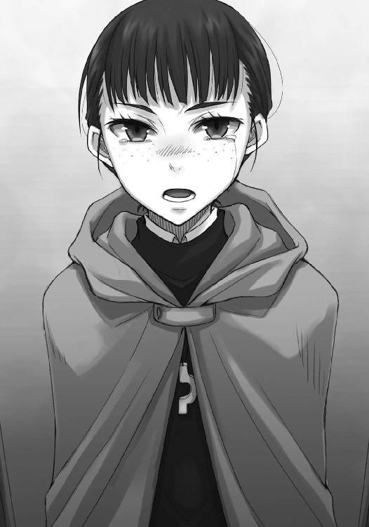
「私はね。でも、あいつはそうでもなさそうですよ」
ヨイツに共に行くことに執着しているのは、ロレンスだけだ。
ホロはできることなら一緒に行ければいいが、それも他の選択肢と比較したうえでのこと。
結局、その程度のことなのだ。
愛し合う二人、とエルサは臆面もなく言ってのけたが、実際のところは怪しいものだ。
ロレンスはそんなことを皮肉げに思うことだってできる。だからこそ、ミューリの話にだって心穏やかではないのだ。
しかし、エルサはその言葉に、じっとロレンスのことを見つめたままだった。
はちみつ色の瞳は、剣の柄に嵌め込んだ宝石のように、凛々しかった。
「ならばなぜなおのこと、開きなおらないのです」
一瞬、なにを言われているのかわからなかった。
「まるでエヴァンが二人いるようです。煮えきらないあなたが腹立たしくて仕方がない。どうしてもっと正直に振る舞わないのです。どうして自分の意見を飲み込むことが相手のためになると考えるのです。神は正しい者の味方です。恐れることなどありません！」
エルサはまくし立てて、最後には肩で息をしているほどだった。
まくし立てられた内容は筋が通っているようで、支離滅裂のようでもある。エルサ自身、自分がどんなことをまくし立てていたのかよくわかっていないのだろう。多分、思いつく限り感情を表す言葉を口にしていたのだろう。
けれども、言いたいことはよくわかった。少なからずエルサ自身の言いたいことであふれていたのもよくわかった。
ただ、もっとも重要なことは、それらが全て、ロレンスが理性の下に押し込めて、そのくせホロに指摘したことだった。
賢くあろうとすることは、とても愚かしいことらしい。
「全て、あなたが正しい」
ロレンスは疲れたように、言った。
それは噓偽りのない言葉だった。
「でも私は単なる商人です」
「ならば考えてください」
エルサは自分がなにに怒っているのかわからないのかもしれない。
それでも、ロレンスを睨みつけて、叩きつけるように言う。
「祈らずに考えてください。神の教えに背き、自らが奇跡に相応しくないと言うのなら、祈らずに商人らしく考えてください」
おかしな懇願もあったものだ。
エルサはなにひとつ自分の得にならないのに、ロレンスたちのために本気で怒ってくれている。
「あなた方商人は、信じられない方法を使うではないですか。魔法としか言いようのない手段をいくつも持っているではないですか。あるいは......あるいは、それが下劣な手段であるのだとためらっているのなら、安心してください」
エルサは背筋を伸ばし、揺るぎのない視線をロレンスに向けてくる。
「私が全力でもって、神の教えに対する正しさを保証します」
多分、笑って流すところなのだ。
百人の商人に聞いたら、聞いてもいない連中まで含めて、百二十人がホロの意見に従うのが正しいと言うだろうし、エルサには落ち着いてこれでも飲めと言って酒を差し出すだろう。
しかし、エルサの意見はとても魅力的だった。
考えろ、と言ってくれているのだ。
エルサだって馬鹿ではない。ホロの考えが合理的であることくらいある程度わかっているだろう。その上で、ロレンスたちのことを見ていられず、こんなことを言ってくれているのだ。
ならば、せめてエルサの親切に応えるためだけにでも、頭を働かせるのはありなのかもしれない。それも、どんな下劣な方法であっても神にはエルサが言い訳をしてくれると言うのだから。考えを巡らせて、その上で諦めるのも、確かにいいだろう。
なにせ、単に開きなおるという選択肢はあり得ないが、かけらでも商売のためと言い張れればまだ可能性がある。
それに、考えるべきことは決まっている。どうにかしてキッシェンに赴かず、遠く離れたその町の、内情もわからない商会に書籍を売れと迫れる方法を思いつくことだ。
商会の主の娘か妻でも誘拐すると脅す？ 呪いの文句を考える？ それとも、傭兵を雇って襲撃するというのはどうだろう。
そんなあり得ない想像をするのは、それはそれで楽しかった。
ただ、エルサが勘違いしているように、商人はそれほど魔法の道具を持っているわけではない。重い現金を背中に担がず運べる為替の仕組みだって、本を正せば決して不思議な技術というわけではない。
要するに目には見えない信用という水路を伝って荷物を運ぶというだけのこと。
決して魔法で見えない現金を運ぶというわけではなく、必ずそこにはなにかしらの原理原則がある。
たとえ信用を逆手に取ったところで、盗めるのは命ではなく現金だけだ。
ロレンスはそこまで思って、ふと引っかかった。
信用を逆手にとって？
なにかそれが妙な言葉のように思えて、ロレンスは思考が数瞬空転するのを自覚した。
エルサが訝しげに何事かを言おうとしたが、ロレンスはそれを手で制していた。
本当に、キッシェンに赴かなければ書籍を買い付けられないのだろうか？
なにか、気がついていないことがあるような気がした。このレノスの町のあちこちに、その鍵がばら撒かれていたような気がした。ホロと手を取って、ヨイツに共に赴く道に続く、金色の扉の鍵だ。
その期待に胸が痛いほど高鳴って、この町に入ってからの様々な映像が頭を駆け巡っていく。
ロレンスは、エルサを見る。
何事にも怯まなかったエルサが、びくりとすくんだような気がした。
多分、それは気のせいではなかっただろう。
数瞬後、ロレンスは自分の顔が笑っているのを、明確に認識したのだから。
「ところで、本当に奇跡の方法を思いついたらどうしてくれますか？」
どうしてくれますか？ などと、きっと生まれて初めて口にする。
よくももつれなかったものだと、我ながら感心した。
「......し、祝福いたします」
しかし、怯んだエルサがそれ以上に立派な聖職者だったので、ロレンスは自画自賛を、もう少し取っておくことにした。
思いついたのは、エルサの発破がなければ一笑に付すような、馬鹿げて下劣な方法だった。
ロレンスたちがフィロンの商会に戻ると、店の中には誰もいなかった。
中庭に続く扉が開け放たれたままで、中庭をひょいと覗けば炭火を熾して臨時の竃を作っている真っ最中だった。
「おや、戻ってきたか。こっちの準備はもう少しかかるから、中で待っててくれないか」
金で雇われたのか、単なる知人なのかはわからないが、料理人と思しき男が慣れた手つきでウナギを捌き、その周りでは小僧たちが忙しそうに立ち回っている。
ロレンスはフィロンの言葉にうなずき、店の中に引っ込むと、エルサが不安そうにこちらを見つめていた。
「けしかけたのはあなたですからね」
ロレンスがいたずらめかしてそう言うと、エルサはびくりと肩をすくませる。
けれども、視線だけはしっかりとロレンスを捉え、唇を引き結ぶ。
「感謝していますよ。私は自分が思っている以上に、歳を取っていたのかもしれません」
笑って、軽く深呼吸をする。
向かう先は、店の奥だ。
「父の手紙には」
エルサはロレンスの背中に声をかけてくる。
「思う道を行け、と書いてありました。たくさんの書物の中で、妥協した結果そこそこ幸せになった物語は多々あっても、妥協して満足した例はほとんどないと。それと」
胸の手彫りの紋章を握り締め、エルサも精一杯のいたずらめかした笑みを浮かべて、言葉を続けた。
「失敗しても、満足している例はたくさんあると」
商いは成功と失敗の積み重ね。
そんなこと、はるか昔からわかっている。
「もちろんです」
ロレンスは大股に歩き、フィロンの店の廊下を進んでいった。
よく掃除されていて、毎日空気が入れ替えられていることがすぐにわかる。面白いのは、店の奥のほうが廊下は狭いし天井も低いのに、客を招き入れる店舗部分よりもとても明るいことだ。
そして、光が多い場所というのは声もよく響く。
ほどなくして、ホロとコルの楽しげな声が聞こえてきた。
本来竃のある炊事場を仕切っているようで、何段か低くなっている土間に下りる手前に、丁寧にたたまれた生臭いホロとコルの服が置かれていた。
ロレンスが仕切りに使われていた布をめくって覗き込むと、ちょうど素っ裸で逃げるコルの背中に、ホロが手桶で差し湯用の熱い湯を引っ掛けたところだった。
「ほうれ！ ニョッヒラではこの百倍熱い湯が当たり前じゃっ」
と、適当なことを言っている。
もっとも、コルも負けじと持っていた手桶を差し水用の桶に突っ込もうとしていたので、どっちもどっちだ。
ロレンスに気がつくと、コルは慌てて手桶を背中の後ろに隠している。
新しい獲物が来た、とばかりの目をしているのはホロだけだ。
「遊んでると風邪引くぞ。ほら」
とっくに体は洗い終わっていたようなので、ロレンスは大き目の手ぬぐいを放り投げる。
コルは手で受け取って、ホロは頭で受け取った。
「出たところに着替えも置いてある。コルのはエルサさんから借りたから、礼を言っておけ」
「は、はい」
元気よく返事をして、直後にくしゃみをした。
ホロもコルもどちらも素っ裸なのだ。コルは体を拭きながら、さっさと服を着に行った。
「お前もだ」
ロレンスが言うと、ホロはつまらなそうにため息をついて、尻尾をぶるぶると震わせた。
「まったく......誰にも見られてないだろうな？」
尻尾は振るだけで見事に水を弾いていたが、髪の毛まではそうならない。
ホロが手で絞ると、ぼたぼたと水が落ちていた。
「わっちゃあそんな間抜けではありんせ......っくし」
華奢な体に透き通った白い肌。それが水に濡れているとなれば磨き上げた珠のようだ。
けれどもくしゃみをする様はいかにも間抜けで、体型とあいまってひどく子供っぽい。
ロレンスはため息をつきながら、ホロの髪の毛を拭うのを手伝ってやった。
「昼飯はもうできそうなのかや」
「今竃を作ってるところだ。もう少しだな」
「ふむ。港で聞いたところでは、木の実の油を塗ってそのまま焼くのがよいらしいが」
綺麗な髪の毛だが、その分たっぷりと水を吸っている。
わしわしと拭いてもきりがない。
「こういう湯浴みも悪くありんせんが、やはりニョッヒラくらいの場所で、雪で冷やしたきついぶどう酒などを用意して、どうじゃ？」
手ぬぐいの下からそんなことを言ってくる。足元の桶の湯もだいぶ冷めているのか、少し寒そうだ。
「あの辺りは皆そういうことをするからな。そこにつけ込んで、どれも値段が高い」
頭から手ぬぐいを取って、肩に掛けてやる。
ホロは額に張りついた前髪を手でかき上げて、「ふむ」と答えた。
「ほれ、次は体じゃ」
しなを作った腰に片手を当て、「ふふん？」とばかりに見上げてくる。
目を泳がせたら負け。
挑戦的な琥珀色の瞳を見下ろして、それからゆっくりと瞼を閉じた。
「さっさと体を拭いて着替えてくれ」
ロレンスが動揺しないことに、むっと頰を膨らませる音が聞こえたような気がした。
そんな振る舞いが旅の終わりなどまったく気にかけていないせいなのか、それとも気にかけたうえでのわざとの振る舞いなのかはわからない。
けれども、ホロはその手の演技がうまくとも、ロレンスが隠し事をするには限度がある。
ホロは肩に掛けられた手ぬぐいに手をかけて、それから、ようやく片眉をひそめた。
「着替えて、どうするのかや」
聞かれたので、ロレンスはこう答える。
「ル・ロワさんを探したい。手伝ってくれ」
哀れなル・ロワは、伝もなにもないこの町で、誰も彼もが投機のために買い溜めしている物資を求めて奔走している。
ただ、ロレンスがル・ロワを探してくれと言ったのは、もちろんそんな哀れな男に救いの手を差し伸べるためではない。
ホロも当然それにすぐに気がついた。
訝しげな視線を、向けてくる。
「なんのために？」
ぴちょん、とホロの体から滴が落ちた。
湯は冷め、周りは寒い。
濡れたホロの体は急速に冷たくなり、瞳はいつも以上に氷のようだった。
「ヨイツの近くに」
ロレンスは、今にもホロの滴で濡れそうな距離から、その顔を見下ろして言った。
「傭兵団がいる」
「......なっ」
「ミューリ傭兵団。と......名乗るそうだ」
驚いたところに、さらに驚く言葉を向ける。
不思議なことだが、そうするとかえって人の頭というのは冴え渡る。
「ル・ロワさんを探してくれ。すぐに会いたい」
目をそらし、用件はそれだけだ、とばかりに体もそらそうとしたら、ホロに胸倉を摑まれた。その顔は、怒ってすらいなかった。
「どうするつもりじゃ」
「提案をする」
ホロは牙を剝き、歯の隙間から一瞬の間で大きく息を吸った。
それが質量を持って爆発する前に、ロレンスはホロの左頰を掌で包んでいた。
「反故にするわけじゃない」
腰をかがめ、ホロの赤みがかった琥珀色の瞳と高さを同じくする。
澄んだ、本当に綺麗な瞳だった。
「俺は商人だ。そんな簡単に契約を反故にしたりはしない」
そして、その言葉は二重の意味を持つ。
ロレンスは、体を起こしてから、静かに言った。
「その代わり、変更は提案する。状況が許す限り」
「それはっ」
ホロは言いかけ、言葉に詰まる。そんな自分を鼓舞するように、離さなかったロレンスの胸倉を力強く揺すった。
「それは、キッシェンとやらに行かぬということかや」
「場合によっては」
泣きそうな顔に見えたのは、きっとロレンスの一人よがりだ。
本当は、心底嫌そうな顔をしていたのだろう。このたわけは、またぞろ余計なことをやり始めた、というところか。
「......まさかとは思うがな、ぬしよ」
「ん。嫉妬しているよ」
ロレンスは軽く言って、ホロを見返す。
「ミューリにだろ？」
ホロが呆れる。その音が聞こえそうなほど、ホロは呆れ返っていた。
「それとも、ミューリは女か？ なら、笑い話ですむんだが」
まっすぐに見つめ返すと、ホロのほうが目をそらした。
そして、ゆっくりと首を横に振る。
「じゃが、ぬしよ、ミューリはぬしが思うような──」
「でも、俺はその再会の場を荷馬車の上で一人想像する羽目になるかもしれない。それは、端的に言って、嫌だ」
ホロの細い腕を取り、だいぶ冷えていることに気がついた。
ホロの肩に掛かったままの手ぬぐいを取って、ホロの顔から首にかけてを拭ってやる。
「どう、するんじゃ？」
「キッシェンに行かなくてすむようにする。そのために、ル・ロワさんと今すぐ話がしたい。もちろん、コルやエルサさんをヨイツに連れていかなくてすむようにも、できるはずだ」
肩から二の腕に手ぬぐいを動かしたところで、ホロが鬱陶しそうにそれを手で払った。
「そんなこと、できるのかや」
その答えがどれほど精巧に思えても、瑕疵があれば絶対に見逃さない。
そんな油断のない目でロレンスのことを見る。
ロレンスは、どういうわけか顔が笑ってしまって、ちょっと自嘲気味に言う羽目になった。
「そうしたい。それが俺の」
と、そこまで言って、顔が笑ってしまった理由がわかった。
「それが俺の、商人として開きなおった限界だからな」
ホロは苦い物を口にした、とばかりに顎を引いて、ロレンスのことを嫌そうに見上げてくる。
この馬鹿は、本当にどうしようもない。
そう言いたげだった口は、やっぱりそう言った。
「たわけが」
今度は素直に笑って、うなずいた。
「うまくいかなかったら、諦めるよ。これは本当だ」
ホロは人の噓を見抜くことができる。
そうだろう？ とばかりにホロを見ると、さらに顎を引いて唸ってしまう。
こんな開きなおりをしておきながら、この潔さはなんなのか。
ホロは、訝しげに見つめている。
ロレンスは咳払いを挟んでから、続けた。
「俺も大人になったものだと思わないか？」
殴られ、蹴られ、自分の財産や命までも放り出してホロを守り、追いかけ、すがってきた。
その結果としてこれならば、悪い旅ではなかったのだ。
ホロは笑うことも怒ることもせず、今度は呆れることすら通り越していた。
ロレンスの笑顔を見て、疲れきったようにうなだれてしまっていた。
それはともすると、すぐ目の前にいるロレンスの胸に顔を埋めたそうにも見えた。
「たわけじゃな」
ぽつりと言って、ため息をつく。
払った手ぬぐいを拾って、乱暴に体に巻きつけながらもう一度言う。
「本当にたわけじゃ！」
たわけで結構。
ロレンスはホロが乱暴に体を拭う様を眺めながら、気楽な気持ちでそう思った。
エルサの言ったとおり、開きなおるとこんなにも気分が楽になるものなのだ。
桶から足を出し、ぺたぺたと石造りの土間を歩くホロは、手ぬぐいをロレンスに投げつけてくる。
尻尾は洗い立てということもあるだろうが、ぱんぱんに膨らんでいた。
「あの肉団子を探すんじゃろう」
「ああ」
「まったく......昼飯までには帰ってきんす！」
ホロは大きくため息を挟んで、そう言ったのだった。
ル・ロワは多分、どちらかというと動物に近い。
見た目の話ではなく、その感性の鋭さのほうだ。
商会の荷揚げ場で交渉をしていたその書籍商は、ロレンスの足音で振り向いた。
それも、決して静かな場所ではなく、怒号や馬のいななき、雑談やあれこれでうわんうわんと騒がしい場所でのことだ。
「お顔が怖いですよ」
ル・ロワは冗談めかして言うが、にこりともしていない。
「こちらの台詞ですよ」
まだしも口調が友好的だったのは、ロレンスの向こうにホロの姿が見えたからだろう。
もしもホロの姿がなかったとしたら、この書籍商はロレンスのことを信用ならない敵と見なしたかもしれない。
「物資なら、私のほうでたくさん買い付けてあります」
ル・ロワは、顔を右半分だけ器用に歪めた。
それから、後ろを振り向くと、「やはり結構です」と短く告げる。商会の人間はそもそも無理な買い付けに辟易していたらしく、手をひらひらと振っただけだった。
「女性を連れてそんな顔をしていると、他の商人には信用されなくなりますよ」
すれ違いざまにル・ロワが言う。
ロレンスは肩をすくめて「経験ずみですよ」とあっさりと言った。
「どんなご用件なのですか。まさか、怖気づいたとでも？」
信用の世界において、なによりも避けるべきことは途中での心変わりだ。
失敗というものは、それに比べたらまったく悪いことではない。
「いいえ」
「では、なんです？」
「ちょっと、急用ができまして、キッシェンに行けなくなりました」
ル・ロワと並んで店を出て、通りを人気の少ないほうに向かって歩いていく。
途中、ロレンスを挟むようにホロを追い越したが、ホロは二人としばらく距離をあけてから、あとをついてきた。
「正気ですか」
「連れにも言われました」
ル・ロワは口をつぐんでロレンスを睨む。
ただし、その顔には困惑がある。ロレンスの思惑を摑みかねているのだ。
「お遊びはやめましょう。私はこの取引に銀貨千枚以上の利益を見込んでいます」
俺は熊を殴り殺したことがある、と自慢することで自らを鼓舞する傭兵のようだった。
ロレンスが笑ったのはそのことについてではない。
そんな大それた取引と無様な嫉妬が、自分の中で釣り合ってしまうことがおかしくて仕方がなかったのだ。
「失礼。ですが、私もまたいったん締結したこの取引を蹴るつもりはありません」
大きくて丸い顔が、ついに端から端までつぶれて歪む。
ロレンスは、軽く咳払いをした。冷たい空気が、頰の内側をくすぐった。
「キッシェンの商会ですが、デリンク商会と特別な取引があるような大きな商会のようですね」
褐色の肌の娘ばかりをあてがうなど、上得意でもなければ請け負ってもらえないだろう。
そして、あの商会にそんなわがままを言える商会が小さいわけがない。
ル・ロワはロレンスの話の先が見えないことに用心しつつも、ゆっくりとうなずいた。
「と、すれば、複数の商会と恒常的に大きな取引がある。そう考えても間違いないかと」
「......そうでしょう。ですが、それがなにか？」
ル・ロワはじれる。
しかし、ロレンスも一足飛びに説明することはしたくない。
こきり、と首を鳴らして、続けた。
「だとすれば、私は、この町にいながらにして、ル・ロワさんの買い付けをお手伝いできるかもしれません」
書籍商の足が止まり、じっとロレンスのことを見据えた。
その姿は、これからロレンスの口から出る一言一句について、全身全霊をかけて頭を働かせるつもりだ、と無言のうちに宣言していた。
ル・ロワが急に立ち止まったので、ロレンスは少し振り返るような形になっている。
ちょうど太陽を振り向く形にもなっていたので、目を細めて、言った。
「為替ですよ」
「為替？ 為替で、どうして？ 単なる便利な現金の運搬手段ですよ」
ロレンスは、ル・ロワの巨体越しに、手持ち無沙汰にしているホロを見た。
「嫌がらせをするんです」
前を向き、歩き出す。ル・ロワは明らかに当惑していたが、ついてくる自信があった。
そして、ついてきた時が、勝負どころだ。
「ロレンスさん。私にはなにを言っているのかわからない」
好奇心は猫をも殺す。
知れば手を出さないわけにはいかなくなる。
たとえ、それがいかに下衆な方法であったとしても。
ロレンスは、ル・ロワを振り向いた。
「複数の商会から、一斉に件の商会に為替を直接振り出すんです」
「え」
「それも、金貨にして数十枚。いえ、あるいは、百枚、二百枚」
うまく笑えたと思う。
なにせ、口にしているのは、圧倒的な資力を持つ者だけに許される、強引にすぎる力業なのだから。
「全て名義を変えて、一斉に為替を振り出させる。そうすれば、件の商会はこんな偶然もあるかと最初は疑いもせず現金に換えるでしょう。しかし、やがて現金が底をつき始め、これはおかしいとなる。ただ、おかしさに気がついた時にはすでに手遅れです。商会の金箱から現金はなくなり、両替商たちはそんな空気を嗅ぎ取って両替手数料を釣り上げる。窮地に陥った商会はどうするでしょうか。まごついている間にも次々と為替がやってくる。しかも、そこには普段の取引相手も含まれているはずです。どれが嫌がらせか？ どれが怒らせてはならない相手か？ そんな迷いの最中にも、大きな商会であれば客や取引相手がやってくる。これを買い取ってくれ、約束の代金を支払ってくれ......商会は大混乱です」
丸々と太ったル・ロワの肌は、こねて粉を振りかけたような綺麗な肌だ。
それが、今は岩塩のように、白く強張っていた。
「そこで、あなたが言うのです。お困りのようですから、為替はこちらで引き受けましょう。ただし、条件がある、とね」
当然、ル・ロワが引き受ける為替は、全てデリンク商会からのものだから、実際にル・ロワが現金を用意する必要はない。
ここまでくれば、落としどころは決まっている。
あとは、ル・ロワの度胸と才覚次第だろう。
「ところで、あなたの店に一冊の書物がありますねと、持ちかけるわけですか......」
「そのとおりです」
慇懃に商品を売り込む商人のように、ロレンスは満面の笑みを浮かべてそう言った。
ル・ロワは、そんなロレンスを不気味なものでも見るかのように見つめている。
そんな商人の風上にも置けない最低の方法を、よくもまあ思いつくものだと、呆れているふうですらあった。
しかし、方法としては成立する。
問題点も、もちろんある。
「話は、わかります。ですが......乗りますか、デリンク商会が」
信用の失墜を恐れて、ということではない。デリンク商会の現金をこのレノスの町の複数の大きな商会に持ち込み、そこから為替を振り出してもらう。その時点でデリンク商会の名前は綺麗さっぱり消えてしまうからだ。
問題点は、為替を振り出すために大量の現金が必要になるということだった。
「乗るでしょう。なにせ、この町では現金の価値が上がっていますからね」
「あ」
ル・ロワは声を上げた。
デリンク商会は、この取引から為替相場を利用して余分な利益を上げられるはずだ。
「レノスとキッシェンの貨幣相場が異なっていれば、場合によってはそこから利益を上げることができます。そして、幸いにしてレノスの貨幣相場のほうが間違いなく強い。計算を示しましょうか？」
ぱちん、というのは、ル・ロワが自分の額に手を当てた音だ。
苦しそうに唸りながら、その目だけは冷静になにかを考えている。
ロレンスが提案したこの計画では、デリンク商会が引き受けてくれればその時点で書籍の買い付け方法が確定する。
キッシェンに行くまでの間、どうやって買い付けようかと悩んだり、無事に買い付けのための隙や弱みを見つけられるだろうかといった、曖昧な未来に対する不安に押しつぶされることもない。
町から離れて一人孤独に道を行く商人たちなら、絶対にその苦しさを過小評価しない。ル・ロワは実際に、この町にやってきて聖典を売り捌く目論見を大きく修正する羽目になった。そういったことは簡単に起こり得るし、想像だって容易にできる。
この方法でいく、と腹に決めて旅に出ることほど心強いものはない。
ル・ロワは、懺悔を求める信者のように、ロレンスのことを見た。
「本気......なのですか？」
食いついた。
ロレンスは、短く言った。
「もちろんです」
書籍商は、うなだれるように、うなずいたのだった。
ロレンスたちはその足でデリンク商会に赴いた。
計画の変更を告げるのであれば早いほうがいい。
ただし、速度の出ている馬車で右に曲がろうと思えば少なからぬ負荷が体にはかかる。
ロレンスはもちろんそれを予想し、決して少なく見積もっていたわけではない。
だからこそ、再びデリンク商会にホロも連れていった。
一度は金のためにその身を預け、そのあと、金を投げ捨ててその身を引き取りに行ったその商会に、覚悟を見せるためだった。
デリンク商会を訪れると、ちょうど四人の主は定例の会議中だったらしい。
部屋に通されると、今度は彼らが揃って出迎えた。
ここまで来て引き返せない。全力を尽くさずに、できることをやらずに後悔したくない。
ロレンスは、ル・ロワを抑えて説明役に回った。為替を使った強引な買い付けと、ロレンスにとって最も重要な、自分たちはキッシェンに赴かないという提案。
その全てを聞いて、残る三人はもとより、エリンギンも眉一つ動かさない。
それどころか、エリンギンはテーブルの上に両手を置いたまま、話を聞き終えると静かにこんなことを言った。
「では、その線でいきましょう」
耳を疑ったのは、むしろ提案した側であるロレンスのほうだ。
思わず聞き返していた。
「よろしいのですか？」
エリンギンはわざとらしく驚いた顔をする。提案をしてきたのはあなた方ですよね？ と。
「いえ、もちろん、提案したのはこちら側ですし、了承していただけるならありがたいことなのですが......その、加えて、お願いしたいことについてなのですが......」
「ロレンスさんはキッシェンに赴きたくない、ということですよね」
直前にはフィロンから問い合わせがあり、この場所にはホロがいる。
血の巡りが大してよくない者にだって、明々白々のことだろう。
エリンギンは、くすりと笑った。
「その方法を言い出したのがロレンスさんであれば、当初の我々の条件にほぼ合致しています。そして、あなた方がその提案をするならば、断る理由はありません。なぜなら、我々はその方法について検討していたのですから」
「な」
驚いて顔を上げたのは、ロレンスだけではない。
ル・ロワも呆気に取られていた。
「ですが、まともな頭ならばそんな嫌がらせの極致のような方法を思いつかないだろうし、仮に思いついたとして、よもや我々に持ちかけはすまいと、そう結論づけていました。ましてや、こちらから提案すれば、妙な疑いを持たれるかもしれません」
からかっているのかどうか、微妙なところだった。
しかし、エリンギンの口元が皮肉げな笑みの形につり上がっているのを見て、多分本当のことなのだろう、とロレンスは思った。
「そんなふうに泥臭く、後先考えないことを思いついたりやったりするには、あなた方は多分歳と経験を重ねすぎている。違いますか？」
エリンギンの言葉に笑ったのは、テーブルのこちら側ではホロだけだ。
奴隷商人は、にっこりとホロに向かって微笑みかける。
「男がいつまでも若々しくいられる方法はいくつもありません。そちらの方をお連れしたのは、素晴らしい判断でしたね。これは嫌味ではありませんよ。本心です」
エリンギンはまっすぐにロレンスのことを見つめている。
どう答えるべきかわからない。
それでも、おとなしく言葉を受け取るべきだということくらいは、なんとかわかった。
「お連れの方を見た瞬間に、概ねどんな用かわかりました。二人三脚。よい言葉です」
エリンギンの言葉に、「我々は四人ですけどね」と別の主が付け加える。
一人では、エリンギンたちですら、遠くに行くのには限界があるらしい。
「ご提案の件は、了解しました。細部についてはお任せいただいても？」
エリンギンのとても事務的な物言いに、ロレンスはル・ロワと揃ってすぐに返事をする。
商会同士のつながりや、現金の用意は彼らでなければ把握することは難しい。それに、こんな悪質な手を使えば、無事書籍を買い付けたとしても、それを町の外に運び出すのが難しくなる。
その手配も含めて、ロレンスたちは細々とした手間を全て引き受けてもらう形になる。
代わりに、悪役を正面きって演じなければならなくなる。
エリンギンらが同じ方法を思いついていたのに提案しなかったのは、その点があったからだろう。
「よい取引になるでしょう。狙われた商会には、気の毒ですけどね」
そんな言葉を本当に気の毒そうに言うのだから、口にすべき言葉がない。
テーブル越しにエリンギンたちと握手をして、契約の変更は行われた。
彼らにとって、握手とは契約書を交わす前に行うことなのだ。
どちらかといえば、彼らの商いがフィロンたちのような世界に近いせいだろう。
「それでは、成功を神に祈りましょう」
その言葉で、お開きとなった。
ル・ロワはロレンスを見て、引きつった笑みを見せる。
やってしまいましたね、とでも言わんばかりだ。
ロレンスもやってしまいました、と言いたかった。この取引でロレンスがキッシェンに赴かないとなれば、悪役はル・ロワが一手に引き受けることになる。
その対価は、支払わなければならない。
「お約束の手数料についてですが」
ロレンスが声をかけたのは、音が飲み込まれているかのように静かな廊下に出てからだった。
「いや、いや、今は言わんでください」
「では、あとで」
「いえ、そうではなく、です」
ル・ロワは言って、軽く辺りを窺った。
エリンギンたちは部屋の中でなにか相談事をしているらしく、まだ出てこない。
少し離れた場所に、利発そうな少年が一人扉を押さえたまま立っているだけだった。
「ですが」
「そのお話は、全てが終わってからでも十分でしょう」
ル・ロワは言って、いたずらっぽくロレンスのことを見上げるような形になった。
「私は確かに悪役を引き受けますがね、あっさり向こうが陥落することだってあり得ます。それでこの大それた話の仲介料を踏み倒したのでは、私の気持ちが収まりません。それになにより、フィロンさんではありませんが」
ル・ロワは笑う。
笑うと、本当に少年のように無邪気だ。
「私もあなたに貸しを作りたい。本当に行商人なのですか？ 私にはちょっと信用できない」
地面に落ちている小銭ばかりを拾うような毎日の時に欲しかったその言葉は、皮肉にも金よりも大事なものができてから貰うことが多くなった。
ロレンスの邪魔にならないように、と思っているかどうかは定かではないが、少し間をあけて立っているホロをちらりと見てから、ロレンスは答えた。
「行商人としては、かなり失格だと思いますからね。その認識は、間違いではありません」
ル・ロワは楽しそうに笑うが、ホロのほうからは笑顔のかけらも感じられない。
自分の提案をまたしても足蹴にされたからだろう。それも、ホロの故郷の仲間に嫉妬して、などという笑えない理由からだ。
しかし、怒っているようには感じないので、心底呆れている、と言ったほうが正しいかもしれない。ホロにそのことを尋ねてみたら、握り拳と一緒に、正解のお墨付きを貰えるだろう。
「ですが、ロレンスさん。本当にお気になさらず。人が嫌がるのを笑顔で押し切るのは、性分として好きなんです」
悔しいが、その言葉にホロはフードの下でこっそり笑っていた。
フィロンの店で出会った時、まさしくル・ロワはそんなことを実践していた。
相手の良心を針で突つき、自分の思いどおりに事を運ばせようとする。
「ですから、今回のことは願ったり叶ったりです。獲物が大きければ、なおのこと達成感は大きい」
エルサのル・ロワ評も正確だ。
強欲だからこそ信用できる。
ロレンスはうなずき、「ご活躍期待しています」と返しておいたのだった。
フィロンの商会で、たっぷりのウナギがじうじうと焼かれて待っている。
そう告げるとル・ロワはホロ以上に喜んだが、それならば、と提案した。
「ではきつい酒がうんと必要ですね。この川で獲れるウナギにはきつい酒が合うんです。契約締結......というよりも変更の成功も祝いませんと」
ル・ロワの冗談にロレンスは苦笑いだ。
「フィロンさんたちもいますからね。どこかでまとめて......」
「ああ、私が買っておきますよ。その代わり、ロレンスさんにはいくらか積荷を譲っていただきたい」
この町で旅の物資を買い付けることを諦めたのだろう。
交換条件にするつもりもないが、ル・ロワがそう言ってくれるなら、言葉に甘えることにした。
「では、お願いしてもよろしいですか」
「お任せください。先に行って、私が帰ってくるまでウナギを食べないように、と釘を刺しておいてくださいね」
ル・ロワは、そんな言葉を残して人ごみに紛れていった。
これだけ喧騒あふれる道ですら、いなくなると途端に静かになってしまったように感じられる。
それを存在感と言っていいかはわからないが、とにかく騒がしい人物だ。
ロレンスたちもどちらからともなく歩き出し、ふとホロがこんなことを言った。
「これで厄介払いが全てすんだの」
たっぷりの嫌味が利いた言葉だったが、ロレンスは嫌な顔一つしない。
厄介払いなんていう言葉は、なるほどこの一連のことを表すのにぴったりだと思ったからだ。
「行商人の鉄則だ。旅に出る時は、可能な限り身を軽くする」
「ふん」
ホロは鼻を鳴らして、少し嫌そうな顔をする。
それでも、ロレンスがホロの手を取ると振り払いはしない。
ロレンスの開きなおりには依然として呆れている、というせめてもの抵抗かもしれない。
ロレンスは町のどこからでも見つけることができる教会の尖塔を見上げ、それでもこれは神の許しを得ていることなのだから、と胸中で言い訳した。
ホロが脇道を指差したのは、そんな折のことだった。
「近道じゃろ？ それに、人に酔いそうじゃ」
ロレンスも同感だった。
寒くて体を温めるために酒を求めても、飲みすぎれば気分は悪くなる。
雑踏から一歩離れて路地に入った途端、デリンク商会とはまた違った静寂に、ロレンスは体が幾分軽くなったような気すらした。
それはホロも同じらしく、小さくため息のようなものをついていた。
狭くても、綺麗に掃除をされている路地はとても心地がよい。
まるで質素だが満ち足りた慎ましい生活のような小道だった。
大通りでされるような大きな商いには、興味はないとまでは言わなくとも、そればかりを追いかけるようなことはもうないだろう。ホロとヨイツまで行って、おそらくはミューリとの再会などロレンスの間抜けすぎる杞憂に終わり、いったんそこでホロとの旅は終了する。
そのあとは、再び元の行商に戻ることになるだろう。
そして、ホロが一つの思い出で五十年は笑いたい、と冗談で言っていたように、自分もまた似たようなことをするだろう、と思っていた。
それらはいつとも知れぬ再会を楽しみにするには十分なもの。
多分、それで悔いはない。少なくとも、やれることだけはやった、という満足感は心に残る。
ロレンスが、そう思った頃だった。
「のう、ぬしよ」
ホロが、なにげないふうに言った。
「ん？」
聞き返すと、ホロはフードの下でちょっと困ったような顔をしていた。
「ちょっと、聞きたいことがあるんじゃが」
ホロがどんなことを聞きたがるのか。
ロレンスは純粋な好奇心で、「なんだ？」と聞き返した。
「んむ。ぬしはどうして......そんなにヨイツに一緒に行くことにこだわるのかや？」
聞いてはいけないことを聞くような、そんな顔だった。
そして、実際に聞いてはいけないことだった、というのは、ロレンス自身、質問されてからわかった。
「う、む、ぬしよ、そんな顔をするでない。わっちゃあ、不思議だったんじゃ。ぬしはたわけではありんせん。理屈を理解する頭くらい持っておるはずじゃ。なのに、どうしてわっちの案では嫌だったんじゃ？ ミューリに嫉妬、というのは、聞いた時こそ信じかけたが......後付けじゃろう？ ぬしはその話の前から、わっちとヨイツに行くことにこだわっておった。その理由が、わっちには......」
ホロがこちらに圧倒されて言葉尻を濁すのは、滅多にないことだ。
多分、それくらいの顔をしていたのだろう。
ロレンスは慌てて自分の顔を手で撫でて、表情を元に戻そうと努力する。
「そんなに、変か？」
もちろん、顔が、ではない。
それはホロだってわかっていただろう。
それでもホロは、しばしためらってから、顔を背けたまま、うなずいた。
「と、思いんす」
「......」
その時の気持ちをなんと言えばいいのか、ロレンスにはわからない。
多分、落胆、が最も近いだろう。
ロレンスが開きなおれば、ホロは嫌がりつつも喜んでくれると思っていた。
それが、この有様だった。
文字どおり腹の中身を全て道端にぶちまけてしまったような驚きと、これは一体どうすればいいんだというような諦めにも似た呆然とした感じ。軽く、背骨だけになったひょろひょろの体が、そよ風にすらひしゃげてしまいそうな気持ちだった。
「だって、ぬしよ、何度も言っておるじゃろうが。別れても、それで今生の別れではありんせん。のう、そうじゃろう？」
狭い路地で、ホロのような美しい娘と手をつなぎながら歩いていて、そんなことを言われる自分はきっと幸せな人間の部類に入るに違いない。
けれども、体がかしいだままホロのほうを見るロレンスは、どうにも納得がいかなかった。
今生の別れではない。それはわかっている。一年や二年の別れくらい、行商人にとっては当たり前だ。我慢できないわけがない。
それがホロの場合だけ我慢できないというのは、自分でもよく理由がわからない。
それほど好きだから？ 自分が人間でホロが狼だから？
思いつくのはそんな理由ばかりだが、どれも今更と言えばそうだ。
ロレンスはホロに返す言葉がない。
だから続けて口を開いたのは、ホロだった。
「わっちゃあ、本当はこっちが怒るべきところじゃと思いんす。ぬしは、わっちを信用しておらぬということじゃろう？」
その言葉のとおりだ。
自分はホロを好きで、ホロも、きっと自分のことを好いてくれているはず。
そう思いたい。
けれども、エルサに指摘された時もそうだったが、ロレンスには素直にそう思えない。
理由がわからない。
人を疑って、商品を疑って、心の底からなにかを信用するということがない商人だからなのだろうか？
「わっちゃあ、こんなこと言いたくありんせんが、傷ついたと言ったって許されるじゃろうが......。わっちゃあ、別れたらそのままはいさようなら、などと言わぬ。なにもかもを全部言わなければわからぬのかや？」
ホロの言葉に、驚いてその顔を見つめ返した。
「な、なんじゃ？」
「今、なんと言った？」
全てを言わなければわからないのか。
なにか、そこに大きな秘密が隠されているような、そんな感じがしたのだ。
それが一体なんなのか、ロレンスにはわからない。
とても重要で、それは骨身にまでしみ込んだ、譲れないなにか。
ロレンスは考える。
静かな路地で、キッシェンに赴かなくていい方法を考える時よりもよほど真剣に、ホロの手を握ったまま考えた。
ホロのほうもそんなロレンスの様子を窺いながら、眉根に皺を寄せながら考えている。
「あ」「あ」
と、声が被ったのは、多分、偶然ではない。
「ぬしよ、まさか」
「う、いや」
ホロが驚きのままロレンスを見て、ロレンスは口元を覆ってそっぽを向く。
そんな馬鹿なことがあるか。
ロレンスは自分自身に向けてそう言ったが、心当たりなどそれしかない。
そして、一度そうだと思ってしまうと、もうそれ以外に理由など考えられなかった。
この寒いのに、顔が火に当たったように熱い。
それ以上に、ホロからの視線が、熱かった。
「ふうん......なるほど、の」
久しく聞いていなかった、こちらを値踏みして、どうやって切り刻もうかと思案するような喋り方だった。
ロレンスは子供のようにびくりと体をすくませて、それでも怖いもの見たさに似た感覚に、ホロのほうを振り向いてしまう。
赤みがかった琥珀色の瞳は、端正な顔立ちの中で、異様にきらきらと光っていた。
「ま、わっち自身そういうところがあるとは認めるがの。ふうん......」
舌なめずりの音が聞こえそうな勢いだった。
ロレンスは、観念して目を閉じる。
この町に最初に訪れた時ロレンスは、旅を終えようと言い出したホロの手を取って、こう言った。
俺は、お前が好きなんだ。
では、ホロはそれに対してなんと言った？ もっと言えば、返事をしてくれただろうか？
「くふ、ぬしは本当にたわけじゃな」
底意地の悪さを隠そうともしない、ホロの口調。
ロレンスは、竜すら一撃の下にほふった伝説の槍で胸を貫かれる準備をした。
その、瞬間だ。
「ふん」
呆れるような小さなため息。
そして、目を閉じて身構えるロレンスの胸元に、するりと潜り込んできた。
「からかうと思ったかや？」
「......え？」
ロレンスが、片目を開けて、ホロを見た直後だった。
「たわけ」
身を丸めていたせいもあって、身長差はホロの背伸びで埋め合わされた。
どれくらいそうしていたのかは、情けないがわからない。
気がついた時には、ホロが恥ずかしそうに笑っている顔が、目の前にあった。
「まったく、返事をもらわねば納得できぬなど、ぬしが商人でなければ喉笛を嚙みちぎるところじゃ」
ホロは身を丸めたロレンスの下で、恨めしそうにそう言って頰を膨らませる。
「大体、ぬしはわっちをけしかけたではないかや。こんな体たらくで、だったらあれはどういうことなんじゃ？」
「？」
ロレンスが呆けてホロを見ると、ホロは一瞬驚いて、それから頰をひくつかせた。
「まさか、本当にただ単に遠慮なく石頭とコル坊を奪い合えと？ それだけの意味合いで、言ったのかや？」
それ以外になにがあるのか。
ロレンスはホロの赤くぎらついた目を見つめ返しながら、空転しがちな頭で考える。
「ああ......そう、だったのか......」
「この、たわけが......」
ホロは不満そうな、ちょっと泣きそうな顔を作って見上げてくる。
賢狼たらんとしなくてもいい。あの一言はロレンスなりに心の底からの言葉だった。
ならばホロがその言葉を最大限に受け取れば、それは賢狼らしからぬ全ての振る舞いを許容するということだ。
その最たるものといえばなんだろうか？
言うまでもない。
ホロだってみっともないと思いつつ、別れたあとに未練がましくロレンスと会いたがっていたのであり、そのことについてあれこれ思いを巡らせていたのだ。
コルを取られて怒り、ロレンスに八つ当たり、というのが笑ってしまうくらい珍しい振る舞いに見えたのは当然だった。そう思ってしまったのは、表面的なことしか見ていなかったせいだ。ホロが八つ当たりをするくらい不機嫌だった本当の理由は、旅の終わりを目前にして、未練がましい自分の考えをどうしても拭い去れなかったそのことだった。
あの八つ当たりは、お前のせいでわっちはこんなに苦しんでいるのだと、そんな八つ当たりだったのだ。
「ぬしは本当に自分に都合よく物事を考えぬのじゃな」
期待せぬように。夢を見ぬように。
手に入れられなかった時、失った時になるべく傷を負わないように。
行商人の性、と言えば聞こえはいい。
けれども、実際はただ単に臆病者だったのかもしれない。
「特にわっちに関してはそうじゃ」
頰を膨らましたホロに耳を引っ張られ、ロレンスはますます体を折ってしまう。
そこまでされては、さすがにロレンスだって幾分言い返したい。
「お前だって、一緒だろう」
「む？」
使うつもりはなかったが、ロレンスは懐から一通の封書を取り出した。
それはケルーベから地図と一緒に送られてきた、ユーグからの手紙だ。
「本当は、見せるつもりはなかったんだが」
そんな前置きをして、ホロに耳を摑まれたまま、封筒から出した手紙をばさりと開く。
おおよそ二枚に亘る紙に綴られた、ユーグの体型からはおよそ想像もできないくらいに繊細で細い文字。
ホロはロレンスの耳を摑んでいることなど忘れてしまったように、その手紙に目を奪われていた。
一枚目は、こんな書き出しで始まっている。
我ら人ならざるものが、人にまじり町で商いをする方法について──。
「お前だっていらいらする必要なんてかけらもなかった。俺がこのことを馬鹿げているほど望んでいることくらい」
予測できただろう？
そう続けたかったが、最後の言葉は続かなかった。
ロレンスの耳を摑んだまま、手紙を呆けたように見つめたまま、ホロの右目からは溶けた水晶のように涙がつつっとこぼれ落ちていた。
全ての時間が止まってしまったような、そんな音のないホロの動き。
ロレンスを振り向いたホロは、泣き笑いの顔でこう言った。
「だからぬしは嫌なんじゃ」
牙を剝いた姿は、額に入れておきたいくらいに不敵だった。
「言いたくなかったのに」
そして、摑んだ耳をさらに引き寄せて、言った。
「でも、そんなたわけなぬしがわっちゃあ......大好きなんじゃ」
その瞬間、キッシェンも、ヨイツも、ミューリもコルもなにもかもどうでもよくなった。
ただその一言を聞いただけで、聖典の全ての文字が無意味になった。
でかでかと署名してホロに渡した白紙の契約書。
ロレンスが欲しかったのは、そこにしっかりと刻まれた、ホロからの返事だった。
「......まったく。わっちゃあ何百年と村の麦畑で番の雄と雌を見てきたがな、ぬしほどたわけた雄はあの田舎の村にだって──」
と、それ以上ホロに言わせなかった。
ロレンスは身を丸めた姿勢のまま、耳を摑まれたまま、ホロを抱きしめて引き寄せた。
ホロは少し驚いていたようだったが、ロレンスの肩に頭を載せて、やれやれとため息をつくのがわかった。
「まあ、コル坊らは肉団子に任せるんじゃろう？ ぬしは最後の二人旅を用意してくれたんじゃ。一件落着ということで、ほれ」
ロレンスの体に腕を回し、軽くぽんと背中を叩いてから、言葉を続けた。
「ちゃっちゃと店に帰って、飯を食べよう？」
ホロはそう言ってロレンスから離れようとするが、ロレンスは腕にこめた力を抜きはしなかった。
「む、ぬしよ......くふ。これ」
笑いながら、それでもちょっと鬱陶しそうにホロは言って、ロレンスの胸を押そうとする。
ホロが動くたびに、湯浴みをしたせいか、雨上がりの春のような匂いがした。
甘い、馥郁としたホロの匂いだ。
ロレンスは、ホロの首元に、口をつけていた。
「これ、ぬしよ、いい加減に......」
ホロの言葉に遠慮がなくなってきた。
それでもロレンスは腕を離さない。
場所は狭い路地で、表通りの喧騒もここには届かない。
町のどこからだって見つけられる教会の尖塔も、ここからは見ることができない。
それは裏返せば、神様だって見ていない、ということだ。
「う？ ぬしよ？ こ、これ。まさか......」
力比べなら負けるわけがない。
ロレンスはさらに抱きしめ、壁に押しつけ、そして。
「この、こんな......ところで......」
ホロが本気で力をこめてロレンスを押し戻そうとする。
「この、たわ......」
け、という最後の言葉は結局、ロレンスの耳には届かなかったのだった。
フィロンの店に到着すると、店はもぬけの殻で、中庭から楽しそうな声が聞こえてきていた。
すでに昼食を食べ始めているらしい。
ロレンスとホロの二人は揃って中庭に続く扉をくぐり、まずエルサとコルがぎょっと目を剝いた。遅れてフィロンが気がついて、ル・ロワが口にしていたビールを吹き出した。
しかし、ホロはまったく気にすることもなく、にこにこと笑顔でロレンスの手を引いている。
微妙な沈黙が舞い降りた直後、フィロンは「おっと新しいウナギを足さなければ」と言って店に戻っていく。「私もお手伝いしましょう」とル・ロワも続く。
コルはそんな大人二人を見つめてから、ロレンスに声をかけようとして、エルサに手を引かれ店に戻っていった。
残されたのは、ロレンスとホロだけだ。
「皆、どうしたんじゃろうな？」
ホロは笑顔のまま、わざとらしく言う。
しかし、ロレンスは口を開けない。言葉がないのではなく、頰が痛くて口を開けないのだ。
あの一撃を食らってしばらくの間、音や光が五感から消え、平衡感覚すら完全に消えうせた。
「ほほう、ウナギはしっかり焼けておるようじゃ」
竃の上でじうじうと脂が音を立て、ウナギはすっかり食べ頃のようだった。
ホロはナイフと皿を見つけるや、甲斐甲斐しくロレンスにウナギを一切れ取ってくれた。挙句の果てに、「ほれ、あーん」とばかりに口に持ってくる。
ロレンスは仏頂面のまま口を開けない。
恥ずかしいのではなく、頰が痛くて口が開かないことをせめてわからせたかった。
「わっちの手から飯は食えぬと？」
そして、その冷たい言葉にほとんど反射的に口が開く。開いてから、痛みに体を折りかける。
対して、ホロは相変わらずの満面の笑み。
ロレンスは痛みをこらえ、閉じかけた口をぐっと開ける。
ウナギは確かに香ばしく、うまい。
ただ焼けすぎているところもあり、若干の焦げ目が、やや苦い。
ロレンスはウナギを食みながら、ぼんやりと視線を空に向ける。
隣には、はふはふとおいしそうにウナギを頰張るホロがいる。
視線の先には教会の尖塔がある。
それはまるで屋根の上に頰杖をつくように、静かにこちらを見下ろしていたのだった。
終わり
あとがき
お久しぶりです。支倉凍砂です。十四巻目です。早いものでデビュー丸四年になります。そしてついこの間、デビュー丸三年、とあとがきに書いたような気がします。光陰矢のごとし！
この本が出ている頃にはとっくに年も改まっていることでしょうが、あとがきを書いている時点ではまだ師走です。そんなわけで一年を軽く振り返ってみますと、今年は意外に遊べたかな......なんて思います。香港も行ったし（これは仕事ですよ！）、冬の北海道にはスキーをしに、夏の北海道には観光をしに行ったし、沖縄も京都も行きました。ダイビングのライセンスも取りました！
それでいて、一応デビュー初となる年間四冊刊行ができたので、やっぱり家に閉じこもってぐねぐねしているより、きちんと遊ぶ時は遊んだほうがよいのかと思いました。
というわけで来年も遊ぶぞ！ というのが目標です。遊ぶと原稿が進む、という因果関係の怪しい勘違いをしている可能性が無きにしも非ずですが......。
それでもこの本が出るとデビュー五年目が始まるわけで、ちょっとした節目に差し掛かりそうです。なんとか頑張って色々と始めたり成し遂げたりしたいところです。
というか、デビュー年数が進むということは、私の実年齢も進むということで、ついこの間とさらにその前月、大学時代の友人の結婚式になんて呼ばれてました。呼ばれてみて初めて、うあー自分もいつの間にかそんな歳になっていたのか、とすごい驚きました。ちなみに、スーツもなければネクタイの締め方もわかりません。何はともあれ百貨店行ってスーツを買って、ネクタイの締め方をググって......と大慌て。それに引き換え、社会人組のスーツの着こなしっぷりときたら......。もっとも、社会人組の中にはなんと毎月結婚式に呼ばれていたなんていう猛者（？）もいて、落ち着きっぷりは訓練のたまものかなとも思いました。毎月呼ばれるとか、ご祝儀だけで大変なことになりそうです。
ちなみに中世ヨーロッパの本などを読むと、結婚式の行事は結構荒っぽいものが多くて、例えば......おっと、これ以上語ってはこの先の楽しみがなくなってしまいますね！
などと書いていたらページがいつの間にか埋まっていました。
本作も節目の年になりそうです。
それではまた、次巻でお会いしましょう！
支倉凍砂
支倉凍砂
１９８２年12月27日生まれ。第12回電撃小説大賞〈銀賞〉受賞。着古したなあ、と思って古いＴシャツを寝巻にすると、その劣化の早さに驚く。寝ている間ってそんなに激しく動いてるのか。

文倉十
１９８１年生まれ、京都府出身のＡＢ型。現在関東にて、フリーで細々と活動中。現在引越し計画中。春が終わるまでには何とかしたい所...！
電撃文庫
狼と香辛料
支倉凍砂
二〇十三年五月二日 配信
発行者 塚田正晃
発行所 株式会社アスキー・メディアワークス
〒一〇二─八五八四 東京都千代田区富士見一─八─十九
(C)2010 ISUNA HASEKURA/ASCII MEDIA WORKS
本書（電子版）に掲載されているコンテンツ（ソフトウェア／プログラム／データ／情報を含む）の著作権およびその他の権利は、すべて株式会社アスキー・メディアワークスおよび正当な権利を有する第三者に帰属しています。
法律の定めがある場合または権利者の明示的な承諾がある場合を除き、これらのコンテンツを複製・転載、改変・編集、翻案・翻訳、放送・出版、公衆送信（送信可能化を含む）・再配信、販売・頒布、貸与等に使用することはできません。